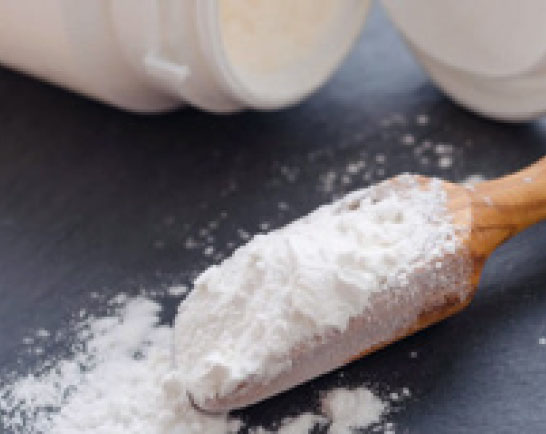
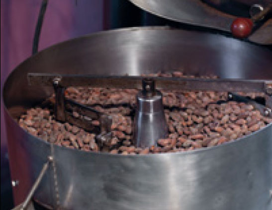
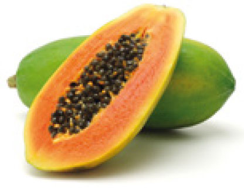

Fig. 1
Gelato industriale al microscopio: si notano le celle d’aria
L’aria, di cui la gran parte degli esseri viventi animali e vegetali non potrebbe fare a meno in ogni istante della propria esistenza, è un elemento fondamentale anche nella produzione del gelato. L’aria è costituita da un insieme di gas di cui azoto e ossigeno sono i maggiori componenti e il vapore acqueo e l’anidride carbonica sono presenti in proporzioni variabili e non costanti.
Se l’aria viene portata a bassissima temperatura come avviene nel gelato, non congela, non si solidifica, ma si mantiene sempre allo stato di gas e fa aumentare il volume della massa.
Il peso dell’aria, per il volume di 1 litro, è di 1,2935 g.
L’aria nel gelato è un vero e proprio ingrediente che i gelatieri fanno entrare nelle miscele in maniera del tutto naturale, grazie alla stimolazione meccanica delle pale del mantecatore.
L’azione meccanica non otterrebbe tuttavia alcun risultato se nella massa da gelare non fossero presenti delle proteine che, a causa dello sbattimento, si gonfiano incamerando aria.
Vediamo di seguito perché sono così importanti queste piccole cellette d’aria che si frappongono tra i vari componenti del gelato.
Con la fase di mantecazione prima, e di conservazione poi, l’aria che è entrata nel gelato è freddissima, fungendo così da frigorifero di mantenimento interno. Inoltre, aumentando il volume della massa, l’aria rende la struttura del gelato soffice e piacevole al palato.
Il gelatiere deve considerare che l’aria entra nella massa grazie alle proteine presenti in fase di gelatura, fino a quando le parti acquose non cominciano progressivamente a trasformarsi in cristalli (a -2/-4 °C) e impediscono così all’aria di entrare.
Possiamo paragonare il gelato pronto a una spugna con all’interno dei forellini piuttosto ridotti, la cui grandezza dipende dalla quantità d’aria entrata grazie ai diversi fattori che vedremo successivamente.
L’IMPORTANZA DELL’OVERRUN
La quantità d’aria incorporata si dice overrun e può variare a seconda di come è stata formulata la miscela, dagli ingredienti scelti e dalla loro percentuale inserita; inoltre è importante il tipo di mantecatore utilizzato. Dopo la fase di pastorizzazione, è fondamentale lasciare riposare (fase di maturazione) per almeno 4/6 ore una miscela a base di latte per permettere a una parte degli ingredienti, fra le altre cose, di inglobare aria in fase di mantecazione.
Vediamo ora gli aspetti fondamentali del comportamento di una miscela da gelato in fase di mantecazione:
 più sostanze solide contiene la miscela, meno aria essa avrà la possibilità di incamerare e la struttura sarà abbattuta (erroneamente alcuni produttori di gelato inseriscono grandi quantità di solidi);
più sostanze solide contiene la miscela, meno aria essa avrà la possibilità di incamerare e la struttura sarà abbattuta (erroneamente alcuni produttori di gelato inseriscono grandi quantità di solidi);
meno proteine contiene, meno aria incamera;
più zuccheri semplici contiene, più aria ingloba e, tuttavia, in fase di conservazione quest’aria normalmente non viene trattenuta e il gelato perde la sua struttura ottimale;
più la miscela di zuccheri semplici e complessi aggiunta alla miscela è preparata in maniera ottimale, più aria può inglobare. L’aria assorbita riesce a essere trattenuta per diversi giorni alla normale temperatura di mantenimento;
la presenza di sostanze addensanti e stabilizzanti nella miscela ha un maggiore assorbimento d’aria, poiché la maggiore viscosità della miscela ne facilita l’inglobamento;
se la quantità di miscela di gelato introdotta nel mantecatore non è minore a quella che l’attrezzatura può contenere, la miscela non ingloba l’aria che dovrebbe e rimane una camera d’aria.
Quale aria nel gelato?
Difficilmente pensiamo alla qualità dell’aria del nostro laboratorio che, d’altra parte, è quella che respiriamo e che entra anche nel gelato.
Per l’aria ci dovrebbe essere la stessa attenzione, come vedremo verrà usata per l’acqua: deve essere pura, senza componenti che possano contaminare i prodotti alimentari.
Chi ha un laboratorio dovrebbe porsi alcune domande quali: da dove entra l’aria? Ci sono immondizie o luoghi malsani fuori dalla finestra? L’aria è molto calda nel laboratorio e può agevolare lo sviluppo dei microrganismi? Ci sono compressori in movimento che muovono l’aria e la polvere? Il condizionatore d’aria viene revisionato spesso e vengono puliti i filtri spruzzandoli con opportune sostanze disinfettanti? Ci sono altre fonti di inquinamento? C’è acqua che ristagna e produce vapori? Le domande possono essere anche tante altre e ciascuno, a seconda del luogo dove lavora, se le deve porre per trovare rimedio.
Il gelato industriale viene prodotto in maniera diversa da quello artigianale riguardo a tanti fattori, compresa l’aria. Il gelato industriale viene congelato in freezer continui dove, in maniera forzata, l’aria viene spinta nella massa che sta congelando. In questo caso l’overrun è mediamente molto elevato (si arriva anche al 100%). Nel gelato artigianale, invece, l’aria entra naturalmente in minore quantità e quindi strutturalmente il prodotto è differente. Nei gelati artigianali contenenti una normale media di solidi (37%), una piccola quantità di addensanti e circa il 4/4,5% di proteine totali e preparati con miscele di zuccheri semplici e complessi, l’overrun si attesta intorno al 25/35%. Bisogna considerare che, se nella miscela ci sono proteine dell’uovo, l’aria inglobata è leggermente maggiore (si pensi all’albume d’uovo sbattuto).
Nei sorbetti di frutta, che non contengono proteine del latte e delle uova, ma minime quantità di proteine contenute nei vegetali, di pectine (eteropolisaccaridi) e di sostanze addensanti eventualmente aggiunte, l’overrun è inferiore e si attesta intorno al 20/25%. Nel sorbetto di fragole, dove l’unico zucchero presente nel frutto è uno zucchero monosaccaride, il destrosio che ha un basso peso molecolare, il sorbetto potrà risultare anche troppo spugnoso grazie all’eccesso di aria inglobata. La stessa cosa potrebbe avvenire se, nella coltivazione della frutta, fossero state utilizzate sostanze in cui siano presenti ormoni vegetali.
Come calcolare l’incorporamento d’aria nel gelato
È possibile calcolare la quantità d’aria incorporata nel gelato facendo attenzione ai seguenti passaggi:
si prende un contenitore da 1 litro, lo si riempie di miscela da gelare e si pesa il contenuto. Prendiamo ad esempio una miscela di crema di 1106 g.
Si prende un altro contenitore da 1 litro e lo si riempie di gelato mantecato della stessa qualità della miscela precedente, non lasciando vuoti d’aria, e se ne pesano, secondo il nostro esempio, 834 g.
Si calcola la differenza in peso delle due miscele con l’operazione
Applicando il calcolo al nostro esempio si ha
ovvero l’aria incamerata.
Il gelato, dopo che è stato mantecato e ha incorporato innumerevoli cellette d’aria, se non viene messo per qualche tempo in un abbattitore a bassa temperatura, cioè a -30/-40 °C, perde una parte dell’aria inglobata, fenomeno che dipende anche dalla composizione della miscela.
Se il gelato dovesse rilasciare una parte d’aria acquisita durante la fase di mantecazione, facilmente subirà un invecchiamento precoce.
Di conseguenza, l’aria contenuta nel gelato diventa di fondamentale importanza non solo per la qualità del prodotto, ma anche per il bilancio economico dell’impresa e per la sua immagine.
L’acqua è l’elemento più importante per la vita di tutti gli esseri viventi siano essi l’uomo, i vegetali o gli animali. Il nostro corpo è costituito prevalentemente di acqua, in media oltre il 60%, con variazioni che dipendono dalla costituzione degli individui e dalla loro età. Possiamo dire che l’acqua è la sostanza più preziosa che abbiamo a disposizione eppure, spesso non ce ne rendiamo conto e la sprechiamo.
L’acqua è un elemento che, a seconda della temperatura a cui si trova, esiste in tutti e tre gli stati di aggregazione della materia: solido, liquido, aeriforme.
A temperatura ambiente è liquida e si adatta alla forma del recipiente che la contiene; aumentando la temperatura fino a 100 °C cambia stato di aggregazione e si trasforma in vapore acqueo. A temperature sotto lo zero, invece, solidifica e diventa ghiaccio.
Nei laboratori di produzione viene utilizzata, oltre che per realizzare il gelato, anche per raffreddare le attrezzature, per lavare le stoviglie, per risciacquare la frutta, per pulire e per molto altro.
L’acqua è la bevanda più naturale che abbiamo a disposizione e, se è pura, anche la più sana.
Quando consumiamo un alimento pensiamo di mangiarlo, tuttavia in molti casi sarebbe più giusto dire che lo stiamo bevendo, in quanto certi alimenti contengono un’alta percentuale di acqua. La frutta e la verdura, ad esempio, contengono dal 78% al 96,5% di acqua. Le sostanze proteiche come la carne, il pesce, le uova, i formaggi contengono il 50/80% di acqua, oltre ai loro nutrienti.
Il gelato è costituito principalmente da acqua, spesso introdotta indirettamente attraverso gli ingredienti che lo compongono.
Prendiamo ora in considerazione il latte che è l’ingrediente principale del gelato alle creme; ebbene, un litro di latte contiene mediamente l’87/88% di acqua nella quale troviamo dispersi, in vario modo, alcuni elementi quali le proteine, i grassi, lo zucchero lattosio, e micronutrienti quali le vitamine, i sali minerali, gli enzimi.
Inoltre, in alcuni gelati e sorbetti, oltre a inserire l’acqua in maniera indiretta, viene aggiunta direttamente nelle opportune quantità. L’acqua congela a 0 °C ma, se tutta l’acqua presente in una miscela da gelato sottoposta al freddo intenso (mantecazione) dovesse congelare, otterremmo un blocco di ghiaccio. Per fortuna, nella massa in lavorazione, intervengono delicati fenomeni chimico fisici tra l’acqua e gli altri ingredienti che ci permettono di portare il gelato a temperature molto sotto lo zero (-13/-15 °C) e ottenere un prodotto morbido e pastoso. Il gelatiere, spesso, mentre lavora non si rende conto che se modifica un passaggio, una temperatura, un sistema di miscelazione, un prodotto al posto di un altro e così via, può ottenere risultati del tutto inattesi.
NOTE DELL’AUTRICE
La produzione del gelato è assai complessa e articolata: si può parlare infatti di una vera e propria tecnica basata su alcune scienze (fisica, chimica e matematica) nonchè naturalmente sulla fantasia del gelatiere.
Non è il caso di spaventarsi, chi conosce la complessità delle cose deve anche saperle tradurre in una materia facilmente comprensibile. Di sicuro c’è che, per preparare un gelato “perfetto”, è indispensabile, oltre alla pratica, un po’ di “grammatica”.
L’acqua è l’ingrediente più importante del gelato e la si può trovare libera o come soluzione.
L’acqua libera presente nella miscela è quella che, sottoposta a raffreddamento durante la fase di mantecazione, forma cristalli di ghiaccio più o meno grossi a seconda di fattori che vedremo in seguito.
L’acqua che scioglie le molecole e altre sostanze presenti nella massa di lavorazione e, durante la fase di mantecazione non congela se non a bassissime temperature.
Gli zuccheri sciolti nell’acqua hanno potere anticongelante diverso a seconda della loro composizione. Le proteine e altre sostanze più complesse come gli idrocolloidi, a seconda del tipo, in condizioni di tempo e temperature diverse, permettono all’acqua di legarsi, cosicché viene trattenuta e non congela.
Che acqua utilizzare?
È naturale chiedersi se l’acqua fornita dall’acquedotto è sempre nelle migliori condizioni per essere bevuta e utilizzata nelle case e nei laboratori di produzione.
Vediamo quali sono le più importanti caratteristiche fisiche, chimiche e batteriologiche che l’acqua può o deve avere.
Generalmente l’acqua è inodore, ma a volte prende l’odore dai gas disciolti, come ad esempio dell’idrogeno solforato dal caratteristico odore di uova marce, che non la rende adatta alla preparazione degli alimenti.
Una delle caratteristiche dell’acqua è il residuo fisso, ovvero il peso dei sali disciolti in un litro d’acqua dopo evaporazione ed essicamento a 180 °C, per eliminare anche l’acqua legata a livello molecolare.
Un altro requisito variabile dell’acqua è la durezza che è la presenza di sali di calcio e magnesio, carbonati e bicarbonati, che precipitano con l’ebollizione prolungata.
Fig. 2
Durezza dell’acqua in Italia
Generalmente la durezza dell’acqua viene espressa in gradi francesi (°F).
Un grado francese corrisponde a 1 grammo di carbonato di calcio in 100 litri d’acqua. Fino a 12°F l’acqua è considerata dolce, da 13°F a 25°F è dura, da 24°F a 37°F è molto dura.
In Germania, Austria e Olanda si usano i gradi tedeschi.
Un grado tedesco (DH°) corrisponde a 1,79 °F.
L’acqua dura è un problema nei laboratori di gelateria perché ovunque penetri, ad esempio nelle serpentine delle attrezzature, provoca incrostazioni a volte molto gravi.
L’acqua dura non va usata per lavare perché bisognerebbe usare molto detersivo; non è adatta neanche per cucinare certi cibi come i legumi perché i sali di calcio e di magnesio si combinano con una proteina, la legumina, rendendo il legume di difficile digestione.
Anche nella preparazione del gelato l’introduzione di acqua dura falsa i risultati desiderati, perché va a combinarsi con alcuni ingredienti.
Fig. 3
Addolcitore a scambio ionico
L’acqua per uso umano fornita dall’acquedotto deve essere potabile, cioè deve rispondere a determinati requisiti organolettici, chimici, fisici, batteriologici (non deve contenere assolutamente germi patogeni). Normalmente le acque non posseggono in natura i requisiti necessari per essere considerate potabili, devono perciò essere depurate e calibrate nel rispetto delle normative in vigore.
Nei laboratori di gelateria, come si è già detto, è fondamentale avere acqua potabile minerale.
Se si ha il sospetto che l’acqua fornita dall’acquedotto non sia perfetta per il lavoro in laboratorio, vale la pena farla analizzare e magari installare alla fonte un addolcitore a scambio ionico (fig. 3) o un sistema a osmosi inversa per modificare il pH originario e portarlo a 7, correggere la durezza portandola intorno ai 15°F e abbassare la carica batterica.
Fig. 4
Economax, economizzatore d’acqua per gelatiere
È importante non solo dotarsi dell’attrezzatura ideale per l’uso richiesto, ma anche provvedere, se necessario, alla manutenzione dell’apparecchio secondo ciò che è stato indicato dall’azienda di produzione.
Il latte rappresenta il primo alimento per l’uomo e, per le caratteristiche nutrizionali sue e dei suoi derivati, si conferma come uno dei prodotti fondamentali per l’alimentazione umana a tutte le età. Il latte vaccino è l’elemento base per la produzione di buona parte dei gelati che l’artigiano propone nell’ambito della sua attività. È quindi di fondamentale importanza che l’operatore conosca tutti gli aspetti del latte e di alcuni suoi derivati.
Caratteristiche del latte
Il latte è composto per circa l’88% di acqua ed è un’emulsione di grassi e vitamine liposolubili, in cui sono disperse diverse proteine e sciolto uno zucchero, il lattosio, sali minerali e vitamine idrosolubili.
Il latte vaccino appena munto presenta un pH debolmente acido, circa 6,5−6,7, ma a mano a mano che il tempo passa, se rimane a temperatura ambiente e non viene immediatamente portato a bassa temperatura, il pH scende e acidifica progressivamente, modificandone la struttura con la formazione di grumi di caglio insolubili. L’acidità ha grande influenza sulle caseine, che rappresentano una buona parte delle proteine contenute nel latte, perché precipitano se il pH va al di sotto di 4,6 (flocculazione). Il rimanente 15/22% della frazione proteica è costituito dalle proteine del siero: principalmente lattoalbumine e lattoglobuline che, durante le fasi di agitazione della miscela da gelato (prima nel pastorizzatore e successivamente nel mantecatore), inglobano aria (overrun) con un buon accrescimento di volume del prodotto e un’eccellente stabilità delle schiume formatesi. Le lattoglobuline sono particolarmente sensibili al calore: già a partire da 70 °C iniziano a manifestarsi fenomeni di denaturazione termica che si accentuano a mano a mano che la temperatura sale. Se si supera la temperatura ottimale di alta pastorizzazione di 85 °C, si possono notare, durante lo svuotamento del pastorizzatore per il lavaggio, tanti piccoli puntini bianchi attaccati alle pareti: sono le proteine del siero precipitate.
Si chiama punto isoelettrico la soglia limite alla quale le proteine, generalmente, vengono denaturate in maniera irreversibile a causa principalmente dell’acidità (caseine) o della temperatura (lattoglobuline e lattoalbumine). Con la denaturazione viene modificata la struttura e quindi la funzione primaria delle proteine.
La composizione percentuale dei componenti del latte cambia a seconda della specie animale da cui proviene, della sua alimentazione, dei fattori ambientali e del periodo dell’anno in cui avviene la mungitura. Il ciclo di lattazione nella vacca inizia con la nascita del vitello; inizialmente viene prodotto il colostro, un siero concentrato pre-latteo, fortemente proteico e ricco di sali minerali e di immunoglobuline. Durante le settimane successive, con la formazione del latte, cambierà la composizione impoverendosi di nutrienti.
Fig. 5
Micelle di caseina
submicella di caseina
k caseina
fosfato di calcio
In linea di massima, durante il periodo invernale, quando le vacche sono chiuse nelle stalle, il latte prodotto ha mediamente un titolo di grasso superiore a quello estivo, di conseguenza calano tutti gli altri componenti. Si può dire che in inverno, al momento della mungitura, il latte contiene dal 4 al 4,3% di grassi in emulsione, mentre nel periodo estivo si attesta mediamente dal 3,7 al 3,9%. Il grasso del latte è rappresentato per il 32/34% da acidi grassi insaturi e per il restante 66/68% da acidi grassi saturi.
Le proteine del latte disperse in soluzione colloidale, ovvero una soluzione costituita da particelle con dimensione al di sotto di 200 nanometri, hanno alto valore biologico, inferiore solo a quelle dell’uovo.
La più importante famiglia di proteine del latte sono le caseine, organizzate in micelle (aggregato colloidale di molecole) e ricche di una componente minerale molto importante quale il fosfato di calcio, anche se si possono trovare commercialmente sotto forma di caseinato di calcio (fig. 5).
Le caseine che rappresentano il 75/85% del totale delle proteine, nel gelato hanno ottima capacità emulsionante e addensante; se sottoposte a trattamento termico, trattengono e stabilizzano l’acqua della miscela fissando anche gli aromi naturali idrosolubili. Queste proteine, che conferiscono quindi un’elevata viscosità alla miscela perché legano grandi quantità d’acqua, resistono a elevati trattamenti termici (140 °C) senza che si verifichino fenomeni di coagulazione.
Al contrario, le proteine del siero, la lattoalbumina e la lattoglobulina presenti in quantità nettamente inferiore, risentono molto dell’innalzamento delle temperature.
Fra le sostanze solide che compongono il latte, si trova in discreta quantità lo zucchero lattosio, la cui presenza in percentuale nei solidi del latte varia a seconda della provenienza delle diverse specie di animali. Il lattosio è un disaccaride, cioè è uno zucchero formato da due molecole, una di glucosio e una di galattosio.
In alcuni individui non abituati al consumo di latte, il lattosio risulta difficile da digerire e metabolizzare. Nel processo di scissione molecolare per convertire il lattosio nei suoi componenti, il glucosio e il galattosio, interviene nell’intestino un enzima: la lattasi.
Questo enzima è presente nell’organismo infantile fino circa a sei mesi di vita poi, nell’adulto, si riduce soprattutto negli individui che non consumano regolarmente latte. L’organismo umano presenta intolleranza al lattosio quando si verificano i sintomi che dimostrano l’incapacità di digerire il lattosio per mancanza e/o ridotta produzione dell’enzima lattasi.
Nel gelato, il lattosio è uno zucchero che gioca un ruolo importante e viene introdotto nella miscela indirettamente attraverso il latte e i prodotti lattiero caseari. Ha un potere dolcificante (POD) molto basso, rispetto ad altri zuccheri, e l’abbassamento del punto di congelamento (PAC) identico a quello del saccarosio.
Nel capitolo riguardante i carboidrati si entrerà più nel dettaglio di questa classe di composti chimici.
Denominazioni delle tipologie di latte e dei prodotti a base di latte
Il largo consumo di latte e di prodotti lattiero caseari ha stimolato la ricerca e le industrie a formulare e a creare nuovi prodotti per coprire e soddisfare le diverse esigenze del mercato e dei consumatori. Negli ultimi anni, soprattutto per quanto riguarda il latte, è aumentata la gamma merceologica di prodotti disponibili: al latte tradizionale, ovvero pastorizzato, fresco pastorizzato, microfiltrato, a lunga conservazione, sono stati aggiunti i latti per così dire speciali, costituiti da latte che ha subìto lavorazioni che hanno modificato il contenuto di alcuni componenti, ad esempio il latte delattosato, o arricchiti di vitamine e altre sostanze. Da alcuni anni, inoltre, anche in Italia è consentita la commercializzazione di latte crudo, cioè appena munto, scaldato a non più di 40 °C, e non trattato, direttamente al consumatore finale, presso le aziende di produzione o tramite distributori automatici dislocati sul territorio locale.
Secondo i termini di legge le denominazioni “latte” e “prodotti lattiero caseari” possono essere utilizzate solo secondo quanto sotto riportato:
latte di vacca, la cui denominazione è riservata esclusivamente al prodotto della secrezione mammaria normale, ottenuto mediante una o più mungiture, senza alcuna aggiunta o sottrazione (fig. 6);
prodotti lattiero caseari, denominazione riservata ai prodotti derivati esclusivamente dal latte, fermo restando che possono essere aggiunte sostanze necessarie per la loro produzione, purché non siano utilizzate per sostituire totalmente o parzialmente uno qualsiasi dei componenti del latte.
Fig. 6
Latte di vacca
Fig. 7
Prodotti lattiero caseari
Alcune denominazioni riservate ai prodotti lattiero caseari: siero di latte, crema di latte o panna, burro, formaggio, latticello, caseina, yogurt, kefir, kumiss, butteroil ecc. (fig. 7).
L’elenco degli ingredienti nelle etichette dei prodotti lattiero caseari in molti casi potrebbe non essere necessario; infatti la legislazione non lo richiede per il latte e le creme di latte fermentato, come yogurt e simili, per i formaggi e per il burro, purché non siano stati aggiunti altri ingredienti diversi dai costituenti propri del latte, dal sale o dagli enzimi e dalle colture di microrganismi necessari alla loro produzione.
Se per la realizzazione del prodotto lattiero caseario si parte dal latte crudo, latte non sottoposto a una temperatura superiore a 40 °C né ad un trattamento avente un effetto equivalente, la normativa impone la dicitura al latte crudo.
Le proteine del latte (caseine, caseinati) sono considerate ingredienti, e quindi devono essere indicate nell’elenco degli ingredienti. L’elenco degli ingredienti è sempre necessario per gli yogurt alla frutta o zuccherati.
Se un ingrediente risulta essere caratterizzante, ad esempio lo yogurt alla fragola, deve essere indicata la percentuale del prodotto relativa al QUID (Quantitative Ingredient Declaration - ingrediente caratterizzante evidenziato) che prevede la dichiarazione della quantità percentuale di utilizzo dell’ingrediente.
Il latte
Ai fini della commercializzazione si applicano le seguenti definizioni:
Latte: prodotto della mungitura di una o più vacche.
Questa definizione è importante in quanto stabilisce che, con il termine latte, s’intende esclusivamente il latte vaccino. Per il latte di altri animali e i prodotti lattiero caseari che ne derivano, deve essere specificata la denominazione della specie animale a cui appartiene (latte di capra, latte di bufala):
latte alimentare, prodotto destinato ad essere venduto come tale al consumatore;
tenore di materia grassa, rapporto in massa delle parti di materia grassa su 100 parti di latte;
tenore di materia proteica, rapporto in massa delle parti proteiche su 100 parti di latte.
La normativa comunitaria distingue, come tipologie di latte alimentare il latte crudo, il latte intero, il latte parzialmente scremato e il latte scremato (fig. 4).
In pratica, le diverse tipologie di prodotto sono determinate da una parte dal trattamento subìto dal latte, nel caso di trattamento termico la temperatura più o meno alta impiegata, e dall’altra dal suo tenore di materia grassa.
In base al tenore di materia grassa si ha la seguente classificazione:
1latte intero: tenore di materia grassa di almeno 3,5%;
2latte parzialmente scremato: tenore di materia grassa da 1,5% a 1,8%;
3latte scremato: tenore di materia grassa inferiore a 0,5%.
Per quanto riguarda il latte intero si fa un’ulteriore distinzione tra latte intero normalizzato e latte intero non normalizzato, cosiddetto perché il tenore di materia grassa non è stato modificato dopo la mungitura.
Il latte, il cui tenore in materia grassa è diverso da quanto sopra indicato, può essere considerato latte alimentare, a condizione che il tenore di materia grassa sia chiaramente indicato sulla confezione mediante la dicitura “…% di materia grassa”. Tale tipo di latte non può essere quindi designato né come intero né scremato.
La classificazione del latte in base al trattamento termico
Fatto salva la possibilità di vendita di latte crudo direttamente al consumatore finale, in generale il latte alimentare destinato al consumo umano diretto deve aver subìto un trattamento termico idoneo a inattivare i germi patogeni e deve essere confezionato, per il dettaglio, in contenitori chiusi mediante dispositivi che, una volta aperti, non possano essere riutilizzati e che possano garantire la protezione del contenuto. Il trattamento termico può essere di diversa durata e intensità (tempo/temperatura).
In base al processo di risanamento subìto, dal punto di vista commerciale si ottiene latte a breve, media e lunga conservazione.
Il latte a breve conservazione ha subìto un trattamento termico di pastorizzazione, a temperature comprese fra 72 °C e 78 °C per tempi fra 15 e 20 secondi, o comunque combinazioni di condizioni tempo/temperatura necessarie a ottenere effetti equivalenti. Questa temperatura garantisce da un lato l’eliminazione dei germi patogeni e una riduzione della flora batterica complessiva, e dall’altro consente di non modificare eccessivamente le caratteristiche organolettiche e nutrizionali del latte, modificazioni che sono tanto maggiori quanto più elevata è la quantità di calore utilizzata per il trattamento.
Il latte a breve conservazione si classifica in:
1latte pastorizzato, trattato termicamente, ha un contenuto di sieroproteine solubili non denaturate non inferiore all’11% delle proteine totali. Il tempo di conservazione è determinato dal produttore sotto la sua diretta responsabilità;
2latte fresco pastorizzato, viene pastorizzato entro 48 ore dalla mungitura, ha un contenuto di sieroproteine solubili non denaturate non inferiore al 14% delle proteine totali. Il tempo di conservazione non deve essere superiore a sei giorni, escluso quello del trattamento termico;
3latte fresco pastorizzato alta qualità, pastorizzato entro 48 ore dalla mungitura, ha un tenore di grasso non inferiore a 3,5% e di proteine non inferiore a 3,2% e contenuto di sieroproteine solubili non denaturate non inferiore al 15,5% delle proteine totali. Il tempo di conservazione non deve essere superiore a sei giorni, escluso quello del trattamento termico;
4latte pastorizzato microfiltrato, prodotto che, prima della pastorizzazione a 40 °C, subisce un trattamento di microfiltrazione, viene cioè filtrato tramite membrane con fori microscopici in grado di trattenere la maggior parte dei batteri presenti nel latte. Il tempo di conservazione è quindi maggiore e arriva a 10 giorni successivi al giorno di confezionamento.
Il latte a media conservazione subisce trattamenti termici a temperature superiori a 80 °C e si classifica in:
1latte pastorizzato a temperature elevate, sulle cui confezioni deve essere indicata la dicitura “pastorizzazione ad alte temperature”. Il tempo di conservazione è determinato dal produttore sotto la sua diretta responsabilità;
2latte a lunga conservazione o UHT (Ultra High Temperature), ha subito trattamenti termici continui a temperature di 131/150 °C per 1/15 secondi, seguiti da confezionamento asettico. Il tempo di conservazione è di 90 giorni dalla data di confezionamento.
Il latte a lunga conservazione o sterilizzato a lunga conservazione ha subìto trattamenti termici a temperature di 116/120 °C per 20 minuti. Il tempo di conservazione è di 180 giorni dalla data di confezionamento. Si tratta di un prodotto sterilizzato nel contenitore chiuso, cioè sia il latte sia il suo contenitore sigillato sono sottoposti al trattamento termico.
Latti speciali
Oltre alle tipologie descritte, sul mercato esistono i cosiddetti latti speciali; a questa categoria appartengono quelle varietà di latte con caratteristiche nutrizionali o salutistiche particolari, in grado di soddisfare le esigenze di talune fasce di consumatori.
Per ottenere un latte speciale, l’industria alimentare può eliminare, aumentare, modificare o sostituire uno o più componenti del latte, oppure aggiungere un componente non presente naturalmente nel latte.
Di seguito sono elencati alcuni tipi di latte speciali presenti sul mercato:
latte delattosato, detto anche latte ad alta digeribilità, è contraddistinto dalla sigla HD (high digestibility) ed è destinato a chi è intollerante al lattosio;
latte desodato, è trattato industrialmente per eliminare il sodio e per questo è consigliato nelle diete iposodiche;
latte arricchito, vengono aggiunti nutrienti quali, ad esempio, vitamine, sali minerali, proteine, acidi grassi, fibre e fermenti lattici vivi;
latte aromatizzato, viene addizionato di aromi come cacao, caffè, frutta.
In merito all’etichettatura
L’etichettatura del latte confezionato prevede alcune indicazioni obbligatorie derivanti in parte dal D.lgs. 109/1992, in parte da norme specifiche del settore quali:
1denominazione di vendita, cioè la dicitura della tipologia di latte in funzione, come già specificato, del trattamento termico che ha subìto e del tenore di materia grassa; per i latti speciali deve anche essere indicata la caratteristica del prodotto (delattosato, vitaminizzato ecc.);
2quantità, ovvero il contenuto della confezione (ad esempio 500 ml);
3nome o ragione sociale o marchio del produttore o confezionatore o venditore;
4sede del produttore o del confezionatore, ossia la sede dello stabilimento di produzione o di confezionamento. Tale dicitura può essere omessa se sulla confezione compare il marchio di identificazione. Nel caso in cui l’impresa abbia più stabilimenti, possono essere indicati tutti, purché sia identificato lo stabilimento in cui è avvenuta la produzione o il confezionamento;
5data di scadenza o termine minimo di conservazione, la cui dicitura cambia a seconda del trattamento termico che il latte ha subìto: deve essere indicata la data di scadenza con la frase “da consumarsi entro il…” per il latte a breve conservazione, mentre per il latte a media e lunga conservazione è previsto il termine minimo di conservazione con la dicitura “da consumarsi preferibilmente entro il …”.
Il latte proveniente da altri Stati membri dell’Unione Europea che non prevedono l’indicazione precisa riguardo il tempo di conservazione o che ne segnalano uno più lungo di quello previsto dalla legge italiana, può avere una durabilità maggiore. Ciò è conforme ai principi della Direttiva 2000/13/CE che lascia ai fabbricanti e ai confezionatori la determinazione della validità dei prodotti alimentari, stabilita in relazione a una serie di parametri come la qualità delle materie prime, i trattamenti e le caratteristiche dei materiali di confezionamento;
6per quanto riguarda il latte fresco, il DM del Ministero delle Attività Produttive del 27 giugno 2002 ha precisato che è obbligatorio riportare sulla confezione un’idonea dicitura indicante il trattamento utilizzato; nel caso di latte fresco pastorizzato può essere riportata con uguale evidenza e chiarezza l’indicazione latte fresco tradizionale. Nel caso di nuovo trattamento autorizzato ai sensi dell’art. 2, c. 2 della Legge 169/1989, ad esempio il latte microfiltrato, l’indicazione del trattamento deve precedere la dicitura di fresco ed essere riportata sulla confezione con uguale evidenza e chiarezza. Lo stesso Decreto precisa che il latte fresco può anche riportare l’indicazione “confezionamento entro 48 ore dalla mungitura” e l’etichettatura nutrizionale;
7sempre relativamente al latte fresco, il DM del Ministero delle Attività Produttive di concerto con il Mipaaf (Ministero delle politiche agricole alimentari e forestali) del 27 maggio 2004, ha stabilito che deve essere riportata in modo evidente l’indicazione dell’origine del latte crudo, cioè il riferimento territoriale di origine per il latte impiegato, che può essere espressa come zona di mungitura, nel caso sia possibile dimostrare la provenienza fino agli allevamenti di origine, contrariamente si esprime come “provenienza del latte”. Nel primo caso sarà indicato il comune, la o le province italiane, in alternativa la o le Regioni, o Italia, oppure il Paese UE se la provenienza è da un singolo Stato membro, o la dicitura UE se il latte proviene da più Stati membri. Nel caso in cui, invece, non sia possibile dimostrare la provenienza fino agli allevamenti di origine, oltre alle province italiane, o Regioni o Italia, o Paese UE, può esserci l’indicazione Paesi Terzi se il latte è proveniente da Stati membri UE miscelato con latte proveniente da Paesi extra-UE. Il Decreto fornisce i criteri anche per quanto riguarda i Paesi aderenti all’EFTA (European Free Trade Association, attualmente costituita da Islanda, Liechtenstein, Norvegia e Svizzera);
8istruzioni d’uso: il D.lgs. 109/1992 prevede (art.10 bis c.2) che la data di scadenza comporti la dichiarazione delle condizioni di conservazione e, qualora indicato, un riferimento alla temperatura in funzione della quale è stato determinato il periodo di validità; pertanto, per il latte fresco, l’indicazione delle modalità di conservazione è obbligatoria, mentre nel caso del latte a lunga conservazione rimane facoltativa, pur essendo raccomandata.
La vendita del latte crudo
La vendita di latte crudo al consumatore finale è consentita sia direttamente nell’azienda di produzione sia attraverso attrezzature erogatrici (fig. 8); in quest’ultimo caso, tali attrezzature devono riportare le seguenti indicazioni chiaramente visibili, leggibili e costantemente aggiornate:
Fig. 8
Erogatore di latte crudo
1denominazione di vendita “latte crudo non pastorizzato”…specie…;
2ragione sociale dell’allevamento di produzione con indicazione completa della sede dell’azienda;
3data di mungitura;
4data di fornitura all’erogatore;
5data di scadenza del latte posto in vendita, non superiore a tre giorni a partire dalla data della messa a disposizione del consumatore;
6istruzioni sulla conservazione domestica: in frigorifero a temperatura compresa tra 0 °C e +4 °C
7“prodotto da consumarsi dopo bollitura”, tale dicitura deve essere di colore rosso e con caratteri di almeno 4 centimetri, posta sulla parte frontale dell’attrezzatura erogatrice.
Nel caso in cui l’erogatore del latte crudo disponga di un sistema di imbottigliamento o sia confezionato dal produttore, i contenitori dovranno riportare in etichetta oltre a quanto sopra riportato ai punti 1, 2, 5 e 6, anche la quantità netta in litri e la data di confezionamento (gg/mm/aa).
Il latte conservato
Per il latte conservato, parzialmente disidratato o totalmente disidratato, la normativa prevede come indicazioni obbligatorie per l’etichettatura, oltre a quanto prescritto dal D.lgs. 109/1992, le seguenti indicazioni:
1la percentuale di materia grassa del latte;
2per il latte totalmente disidratato, le istruzioni relative alle modalità di diluizione o ricostituzione, integrate dall’indicazione del tenore di materia grassa del prodotto dopo la diluizione o la ricostituzione, e la dicitura “non è un alimento per lattanti minori di 12 mesi”.
Nel caso di prodotti di peso unitario inferiore a 20 g e confezionati in imballaggi globali, le indicazioni obbligatorie possono figurare solo sull’imballaggio complessivo, a eccezione della denominazione di vendita che deve figurare anche sulle singole unità.
Il Decreto citato prevede specifiche denominazioni di vendita per tali prodotti (allegato I) e denominazioni alternative nelle diverse lingue comunitarie utilizzabili alle condizioni indicate (allegato II).
Lo yogurt
Lo yogurt è ottenuto per coagulazione acida, senza sottrazione di siero, ad opera di batteri lattici specifici: Lactobacillus delbruekii subspecie bulgaricus e Streptococcus thermophilus (fig. 9).
Fig. 9
Yogurt
Le caratteristiche del prodotto sono legate alla presenza, fino all’atto del consumo, dei microrganismi vivi nella quantità totale non inferiore a 10 milioni/grammo di prodotto.
La quantità degli alimenti aggiunti allo yogurt, ad esempio la frutta, non deve essere superiore al 30% in peso del prodotto finito e non deve modificare le caratteristiche della parte yogurt.
In base al tenore di materia grassa, con o senza frutta, gli yogurt si differenziano in:
magri (inferiore all’1%)
parzialmente scremati (1,5%-2%)
interi (maggiore del 3%).
Il burro, prodotti a base di burro e crema di latte
É denominato burro il prodotto che ha un tenore minimo di grassi lattieri compreso tra l’82% e il 90%, tenori massimi di acqua del 16% e di estratto secco non grasso lattiero del 2% (Regolamento CE 2991/1994 e Regolamento CE 445/2007).
La denominazione burro può essere utilizzata insieme all’aggettivo tradizionale quando il prodotto è ottenuto direttamente dal latte o dalla crema di latte o dalla panna, in stabilimenti autorizzati e controllati dalle autorità competenti per territorio.
Le principali denominazioni del burro sono:
burro tre quarti quando presenta un tenore di grassi lattieri tra il 60% e il 62%;
burro metà quando il tenore di grassi lattieri si attesta tra il 39% e il 41%;
burro salato quando viene aggiunto al massimo il 2% di sale e il cui quantitativo di materia grassa può diminuire fino all’80%.
Per un prodotto composto, di cui il burro costituisca una parte fondamentale, in cui cioè nessun elemento sostituisca o intenda sostituire un componente qualsiasi del latte e di cui il burro costituisca una parte fondamentale per la quantità o l’effetto che caratterizza il prodotto, si può utilizzare la denominazione:
burro, se il prodotto finale contiene almeno il 75% dei grassi del latte e se è stato fabbricato esclusivamente con burro rispondente a quanto previsto dal Regolamento CE 2991/1994 e con il componente/i aggiunto/i indicato/i nella denominazione;
preparazione a base di burro qualora, invece, il tenore di grassi del latte sia inferiore al 75%, ma superiore al 62%.
In ogni caso, nell’etichettatura e nella presentazione del prodotto deve essere indicato il tenore di grassi del latte e, qualora altri componenti aggiunti contengano grassi, il contenuto totale di grassi;
crema di latte o panna è il prodotto ottenuto dal latte, sotto forma di un’emulsione di grassi in acqua, con un tenore minimo in peso di grassi lattieri del 10%.
Il latte fresco intero
L’uso del latte fresco intero di qualità assume particolare importanza nella preparazione di un buon gelato. Nei vari gusti, l’utilizzo del latte ricopre una percentuale di incidenza piuttosto elevata, spesso superiore al 50% del totale degli ingredienti. In gelateria, data la rilevante quantità d’impiego di questo prodotto, è consigliabile acquistarlo in imballaggi superiori al litro. Così facendo, oltre a ottenere un prezzo più interessante, si ha un grande risparmio di tempo e si evita di perdere il prodotto che, inevitabilmente, rimane nelle confezioni. Anche se quelle che rimangono nell’imballaggio sembrano piccole quantità, determinano a fine stagione un notevole spreco e un costo non indifferente. Inoltre, si ha un apprezzabile risparmio del volume degli imballi che si traduce in meno sacchi dell’immondizia e in risparmio di lavoro per il loro smaltimento.
Al momento della consegna del latte da parte dell’azienda fornitrice è fondamentale essere sempre presenti per controllare che la temperatura del prodotto non superi i 6 °C (4−6 °C) e per verificare la data di scadenza sulle confezioni.
Una volta arrivato in laboratorio, il latte va riposto subito nel frigorifero di conservazione (+4 °C), avendo l’accortezza di mettere in evidenza quello con la data di scadenza più ravvicinata, rispetto a quello con la scadenza più lontana. In ogni caso, è bene e di regola, al momento dell’uso e prima di aprire la confezione, controllare nuovamente la scadenza. Si raccomanda di non tenere mai in azienda latte scaduto, così come nessun altro prodotto, perché le penalità possono essere molto pesanti e portare anche alla chiusura dell’esercizio.
Il latte fresco intero che si acquista contiene mediamente il 3,5% di grassi, il 4,9/5,5% di lattosio, il 3,5% di proteine, l’ 88/87,5% di acqua e ha un contenuto energetico pari a 65 kcal (273 kj) per 100 g.
L’utilizzo del latte crudo in gelateria richiede maggiori e particolari accortezze rispetto a quello del latte che viene distribuito dalle latterie ed è pastorizzato e omogeneizzato. L’omogeneizzazione del latte porta a una capillare distribuzione di piccolissimi globuli di grasso e all’esaltazione di tutti gli aromi. Il latte crudo deve uscire dalla stalla appena munto e in regola con i dettami di legge igienico-sanitari richiesti. Inoltre è necessario che il gelatiere si faccia rilasciare copia delle schede di analisi del latte che l’allevatore deve saltuariamente effettuare. I recipienti con i quali il latte crudo viene distribuito devono essere sterili e non imbrattare il laboratorio di produzione del gelato. Il trasporto del latte fino al laboratorio di gelateria deve avvenire secondo le modalità delle leggi vigenti. In ogni caso è bene rivolgersi all’autorità sanitaria di competenza per avere ulteriori istruzioni. Come già è stato detto, questo latte non è costante nelle percentuali dei suoi componenti e varia a seconda della stagionalità e di altri fattori. Per questo, mettere a punto le ricette per la produzione del gelato richiede competenza ed esperienza specifica.
Il latte sterilizzato U.H.T. intero in gelateria
Il latte sterilizzato U.H.T. (Ultra Higt Temperature), è il latte che è stato sottoposto a un trattamento ad alta temperatura per pochi secondi e che lo ha reso sterile per alcuni mesi. Il latte così trattato ha subìto diverse modificazioni chimico fisiche: le vitamine vengono distrutte, le sieroproteine sono denaturate, il lattosio ha subìto anch’esso dei cambiamenti dando luogo, insieme alle proteine, a quello che viene detto imbrunimento non enzimatico o reazione di Maillard. Con questa reazione appunto il sapore del latte cambia fortemente, perché ha preso il gusto di cotto. È meglio non preparare il gelato con questo tipo di latte, se non in casi particolari come quando, ad esempio, si hanno aumenti di lavoro improvvisi. Invece, può essere pratico utilizzarlo quando si vogliono fare piccole aggiunte a freddo nelle miscele, evitando così la presenza di microrganismi. In questo caso la quantità del prodotto immessa non è generalmente elevata e non ha modo di influire né sul sapore generale né sulla struttura del gelato finito. È importante, una volta aperta la confezione, consumarlo subito ed eliminare ciò che rimane inutilizzato.
Il latte condensato zuccherato in gelateria
Alcuni gelatieri amano utilizzare nelle loro ricette una piccola quantità di latte concentrato zuccherato. Questa abitudine risale ai tempi della Seconda Guerra Mondiale quando, soprattutto a Torino, era difficile trovare il latte e quindi ci si riforniva in Svizzera di scatolette di prodotto concentrato zuccherato. Il latte condensato zuccherato viene portato a elevata temperatura sottovuoto per fare evaporare il 60% dell’acqua che lo costituisce. Il latte così concentrato, presenta una modificazione della struttura di alcune proteine e del lattosio, con un conseguente cambiamento del sapore originario che ha preso sentore di latte cotto. Effettuata la concentrazione del latte, viene unita una soluzione zuccherina a base di saccarosio che, grazie alla conseguente lavorazione, si inverte parzialmente. Il latte così trattato ha un’elevata dolcezza e una notevole capacità di abbassamento del punto di congelamento, perciò bisogna tenere conto della sua presenza nella formulazione di una ricetta.
Generalmente, il latte condensato zuccherato è composto dal 9% di grassi, dal 14% di lattosio, dal 9% di proteine parzialmente modificate, dal 40% di saccarosio che ha modificato la sua struttura molecolare, dal 2% di solidi diversi e ha un contenuto energetico pari a 327 kcal (1374 kj) per 100 g di prodotto.
Il latte in polvere in gelateria
Il latte in polvere per uso umano viene generalmente ottenuto con un sistema di essicazione a spruzzo (spraydring). Il latte fresco viene velocemente nebulizzato in presenza di una corrente di aria calda a 130/150 °C. L’acqua evapora istantaneamente e il prodotto secco precipita verso il basso, dove viene raccolto. Con la disidratazione, il latte fresco si riduce a circa un ottavo del suo peso iniziale e rimane solo una piccola parte di umidità (4/5%).
Per l’alimentazione animale il latte viene essiccato con il sistema chiamato roller. In pratica, viene spruzzato su cilindri fortemente riscaldati (130/150 °C), così l’acqua evapora e la sostanza secca viene distaccata da coltelli raschianti.
Con il sistema di sprydring il latte in polvere risulta più bianco, più solubile e con minori alterazioni di gusto.
Il latte magro è composto dall’1% di grassi, dal 52% di lattosio, dal 35% di proteine, dall’8% di solidi diversi (sali minerali), dal 4% di umidità e ha un contenuto energetico pari a 362 kcal (1520 kj) per 100 g.
Il gelatiere predilige il latte in polvere magro, in aggiunta al latte fresco, perché aumenta la quantità di proteine nella miscela. Oggi, il latte in polvere magro viene trattato meccanicamente affinché abbia una struttura granulare che facilmente si disperda nei liquidi senza formare grumi.
Il latte in polvere grasso è composto dal 26% di materia grassa, dal 38% di lattosio, dal 26% di proteine, dal 7% di solidi diversi (sali minerali) e ha un contenuto energetico pari a 492 kcal (2066 kj) per 100 g.
Se si incontra difficoltà a trovare latte fresco o a lunga conservazione, si può ricostruire il latte in polvere grasso, tenendo presente che non si conserva a lungo e irrancidisce facilmente; è meglio perciò fare uso di quello magro e unire, ove sia possibile, della panna, magari quella a lunga conservazione.
Per ottenere latte rigenerato magro dal latte in polvere magro si aggiungono 900 g di acqua appena tiepida a 100 g di polvere. Poi, per raggiungere il titolo di grasso desiderato, si aggiunge panna liquida o in polvere.
Il caseinato di sodio in gelateria
È una sostanza composta soltanto da caseine del latte, molto usata dall’industria alimentare e meno dall’artigiano gelatiere che trova già nel latte magro in polvere la possibilità di aumentare la quantità di tutte le proteine che gli occorrono. Inoltre, nel latte in polvere magro trova uno zucchero poco dolce, il lattosio, che in quantità limitata può essere di molto aiuto. Alcuni gelatieri, in aggiunta agli altri ingredienti, amano usare una minima quantità di rinforzo di caseinato di sodio (0,5%−1% dipende dai risultati che si vogliono ottenere), laddove sia necessaria.
Il caseinato di sodio ha capacità addensante, lega maggiormente l’acqua della miscela e aiuta a mantenere l’emulsione dei grassi. In etichetta il caseinato di sodio viene dichiarato, insieme alle proteine del siero e alle proteine del latte.
Proteine del siero in gelateria
Le proteine del siero del latte sono una miscela di proteine isolate dal siero (diverse frazioni proteiche: lattoglobuline, lattoalbumine e altre) associate a una piccola parte di lattosio. Si possono trovare a diverse concentrazioni. Di proteine del siero se ne può usare, nel computo della miscela da gelato, una piccola quantità pari allo 0,3−0,5%, a seconda della concentrazione, per permettere un miglior inglobamento d’aria e mantenere una buona emulsione dei grassi durante la fase di sbattimento con le attrezzature. Anche per il loro utilizzo è bene valutare la ricetta nel suo insieme e con competenza.
La panna in gelateria
Il gelato, così come è nato in Italia, contiene i grassi del latte e non i grassi vegetali che poco hanno a che fare con la nostra cultura e il nostro territorio. Una volta, si lavorava in laboratorio con il latte crudo che aveva quantità di grasso maggiori rispetto a quello che viene fornito comunemente oggi dalle latterie. Per questo, per aumentare la sostanza grassa del gelato, si ricorre alla panna.
La panna, chiamata anche crema di latte, non è altro che latte nel quale la parte grassa è presente in quantità molto elevata. In Italia in gelateria si utilizza una tipologia di panna fresca che permette di raggiungere la quantità ottimale di grassi nel gelato.
La panna fresca per gelateria contiene il 35% di grassi, il lattosio e le proteine sono presenti entrambi nell’ordine del 3% e ha contenuto energetico pari a 338 kcal (1420 kj) per 100 g.
In Germania, dove sono presenti migliaia di gelatieri di origine italiana, la panna ha un contenuto in grassi del 33%, di conseguenza aumenta lievemente la quantità di lattosio e di proteine (3,2−3,3%).
Per ottenere la panna, si riscalda il latte fino a 35−40 °C quindi, in una centrifuga che funziona ad alta velocità, si separa il grasso dal latte magro.
Perché per legge si possa chiamare panna questo latte particolarmente arricchito di grassi, ne deve contenere almeno il 10%.
La panna da caffetteria ne contiene tra il 10 e il 20%. La panna da cucina ha tra il 20 e il 30% di grassi, mentre quella da pasticceria ne contiene più del 30%. In tutta Italia si utilizza panna al 35% di grassi, ma non a Napoli dove si utilizza una panna al 50%. In Inghilterra è comune trovare panna ricca al 40% di globuli di grasso e infatti è chiamata double cream, mentre in Giappone si adopera una panna fino al 45%.
Più aumentano i grassi nella panna, più in proporzione calano gli altri componenti quali acqua, proteine e lattosio.
Perché la panna monti, è indispensabile che contenga una buona quantità di proteine montanti, perciò i grassi non devono superare il 33/35%.
Se si dispone di panna con un titolo di grasso superiore, conviene diluirla opportunamente con l’aggiunta di latte scremato liquido, ben freddo, cioè più ricco in proteine.
Nel capitolo relativo ai semifreddi in gelateria, parleremo anche di quali accortezze avere per montare la panna nel migliore dei modi.
Nell’utilizzo della panna fresca bisogna fare molta attenzione alla data di scadenza. Anche se il prodotto è in regola, una volta aperta la confezione e prima di versarla nel pastorizzatore, è meglio annusarla per sentire se presenta odori insoliti come, e non è raro, un sentore di rancido: in questo caso bisogna eliminarla subito. Inoltre è fondamentale non usare panna se si è congelata anche solo parzialmente. I cristalli di ghiaccio che si sono formati all’interno con l’abbassamento della temperatura effettuano uno sforzo di taglio rompendo le membrane fosfoproteiche dei globuli di grasso. Una volta che la panna si è scongelata, queste membrane si rompono e il grasso (basso fondente) fuoriesce dal globulo formando gli agglomerati di grasso libero. È importante che questo processo di formazione del grasso libero avvenga solo parzialmente. Se è eccessivo può portare a troppo grasso libero e perciò fenomeni di fat lumping o fat churning, ossia granuli di grasso percepibili o comunque difficoltà a inglobare l’aria e a dare una struttura cremosa.
La panna in polvere
Generalmente, è poco usata nei laboratori di gelateria, almeno dove è possibile reperire facilmente la panna fresca che risulta essere economicamente più interessante. La panna in polvere, che si ottiene con un sistema simile a quello del latte in polvere, si può trovare con una percentuale di grassi al 42% e al 72%. Va conservata in un luogo fresco e consumata molto velocemente perché tende ad ossidarsi con facilità.
Il burro anidro per gelateria
Il burro che viene commercializzato comunemente è il grasso del latte concentrato all’ 82/85%, il resto è latticello. Il burro anidro, invece, contiene il 99,99% di materia grassa del latte, è stato deodorato e ha subìto un particolare trattamento naturale che gli impedisce di ossidare e irrancidire con facilità. Può essere un valido sostituto della panna, ha qualità sempre costante e lo si conserva a temperatura ambiente. Il suo utilizzo porta a buoni risultati, soprattutto in termini di struttura del prodotto gelato. Il professionista lo trova in vaschette da 2,5 kg. Per l’impiego in gelateria, in una normale miscela al 6−7% di grassi, non deve essere lavorato con un omogeneizzatore. Ha un basso punto di fusione (28 °C) e si scioglie in bocca velocemente, in armonia con i cristalli d’acqua del gelato.
Altri tipi di latte in gelateria
Se, dopo la Seconda Guerra Mondiale, il tipo di latte più prodotto era quello di vacca, fino a quel momento la maggiore produzione proveniva dalla capra, un animale posseduto da molte famiglie. Oggi in casi non troppo frequenti ci sono allevatori di alcuni animali che producono gelato con latti diversi da quello vaccino. Vediamo la composizione media di qualche tipo di latte:
Il latte di capra contiene: 3,6/4,2% di grasso a seconda della stagionalità, il lattosio 4,5/4,9%, le proteine 3,2/4,5%, l’acqua circa l’87%.
Il latte di pecora è più ricco di quello di capra e contiene: 4,5/7,5% di grasso, il 4,5% di lattosio, 4,5/6% di proteine e l’81% circa di acqua.
Il latte di bufala è molto più grasso e contiene: l’8,2/8,7% circa di grasso, 4,5/5% di lattosio, 4,8% di proteine e circa l’82% di acqua.
Il gelato artigianale italiano a base latte è nato con l’aggiunta dell’uovo intero e/o del tuorlo d’uovo. L’uovo contiene, dal punto di vista nutrizionale, le migliori proteine esistenti in natura. Queste proteine sono anche il migliore supporto nel computo generale dei componenti per ottenere la struttura ottimale di un gelato. L’uovo è un’unica cellula racchiusa in un guscio e contiene tutte le sostanze necessarie per la formazione di un nuovo organismo. È un miracolo della natura al cui interno sono avvenuti, durante la fase di implementazione, e continuano ad avvenire durante la fase di conservazione e di invecchiamento, straordinari fenomeni chimico fisici.
Fig. 10
Sezione di un uovo
Il guscio, la parte rigida esterna, rappresenta circa il 10% del peso totale dell’uovo ed è composto soprattutto da carbonato di calcio e altri minerali. All’interno del guscio ci sono due membrane che si sovrappongono e si separano solo in corrispondenza di uno dei due poli, formando una camera d’aria quando l’uovo inizia a invecchiare. L’albume, detto anche bianco d’uovo, quando l’uovo è deposto da poco tempo ha consistenza gelatinosa che si fluidifica con l’andare del tempo. L’albume è costituito soprattutto da acqua nella quale si trovano, in soluzione colloidale, proteine nobili, cioè di ottimo valore biologico, complete degli amminoacidi essenziali, indispensabili per il buon funzionamento dell’organismo umano, sali minerali, alcune vitamine del gruppo B, la vitamina H e altre vitamine. Nell’albume ci sono due cordoni bianchi di natura proteica, le calaze, che hanno la funzione di tenere sospeso il tuorlo. Nell’albume fresco, l’uovo contiene anche un enzima, il lisozima, dotato di attività battericida con funzione di difesa dagli agenti esterni.
La composizione media dell’albume è: acqua 85%, proteine 15%, contenuto energetico pari a kcal 60 (kj 252 circa).
La proteina prevalente è l’ovoalbumina, ma è presente anche l’avidina, una proteina che, se non viene consumata cotta, impedisce l’assorbimento della vitamina H (biotina). L’uovo va quindi mangiato con l’albume cotto e il tuorlo crudo perchè più digeribile.
Il tuorlo è mediamente costituito da: 52% acqua, il 32% grassi, 16% proteine, contenuto energetico pari a kcal 350 (kj 1470 circa).
Nella porzione grassa, oltre ai trigliceridi sono presenti frazioni lipidiche particolarmente utili, come i fosfolipidi. Ad esempio, la lecitina è un fosfolipide che ha una spiccata funzione emulsionante sui grassi, ha una ottima capacità legante e riesce ad amalgamare le materie prime più diverse. Un’altra sostanza della porzione grassa è il colesterolo, sostanza utile in quantità limitata per vari scopi e, soprattutto, per la costituzione della parete delle cellule dell’organismo. La lecitina rimuove i depositi di colesterolo in eccesso e ne aiuta l’eliminazione. Il tuorlo contiene inoltre la metionina, un aminoacido essenziale e per questo indispensabile nell’alimentazione, e la colina, una vitamina fondamentale nella digestione dei grassi, utile ai malati di fegato.
Il colore del guscio dipende dalla razza delle galline, mentre il colore più o meno chiaro del tuorlo dipende dal tipo di alimentazione con cui vengono allevati gli animali. I mangimi ricchi di sostanze grasse producono un tuorlo giallo-rosso molto intenso e carico, quelli poveri di sostanze grasse generano un tuorlo di colore più chiaro.
Come si conservano le uova
L’uovo va conservato in frigorifero a +4 °C. Se non sono rispettate queste condizioni, si modifica il pH e aumenta l’altezza della camera d’aria presente in corrispondenza del polo ottuso dell’uovo. Tutto ciò predispone alla crescita dei microrganismi che, per quanto possibile, viene contrastata dalla presenza delle proteine presenti con attività battericida (lisozima) o inibitoria verso le proteasi batteriche (flavoproteina, avidina ecc.).
L’uovo è un alimento molto digeribile, sconsigliato solo a chi soffre di calcoli biliari.
L’albume contiene quindi una serie di proteine che difendono il contenuto del tuorlo dall’invecchiamento e dall’aggressione batterica e, tuttavia, tale proprietà tende a diminuire con il tempo. Infatti dopo circa 25 giorni di conservazione a 2 °C si ha una inattivazione del lisozima di circa il 25%.
L’uovo nella preparazione dei gelati e dei semifreddi
Il gelato italiano, fino dalle sue origini, è stato prodotto nella versione cremosa con l’ausilio dell’uovo le cui proteine erano e sono indispensabili per ottenere la struttura ottimale. Noi italiani abbiamo una lunga tradizione tanto nel gelato quanto in ottimi prodotti a base di uova come, ad esempio, la pasta all’uovo. Il famoso gelato panna che in seguito chiameremo fiordilatte, non è di tipica tradizione italiana. Lo hanno importato gli americani dopo la Seconda Guerra Mondiale ed è stato per anni una prerogativa della gelateria industriale.
Noi artigiani abbiamo potuto produrre il fiordilatte solo agli inizi degli anni Settanta, quando ci venne proposta la polvere di latte magro che ci permise di fare un’iniezione di proteine del latte al posto di quelle dell’uovo. Per quanto le proteine del latte funzionino, non riescono però a raggiungere nella miscela il potere addensante ed emulsionante di quelle del tuorlo d’uovo.
In seguito, l’uovo venne erroneamente estromesso da molti laboratori di gelateria, soprattutto perché sospettato di contaminazioni microbiche. Ci fu tra i gelatieri meno preparati e anche tra i consumatori una vera psicosi molto spesso immotivata. Ai giorni nostri, pasticcieri, gelatieri e gastronomi trovano in commercio tuorli d’uovo sgusciati e pastorizzati, in perfette condizioni igieniche e di ottima qualità. L’uovo ha ripreso perciò, nell’ambito dei laboratori di gelateria professionalmente più avanzati, il posto che gli spetta. Gli allevamenti italiani di galline hanno raggiunto livelli di eccellenza e forniscono indiscusse garanzie igieniche e nutrizionali del prodotto.
CONSIDERAZIONI PRATICHE
Ecco alcune considerazioni importanti per i gelatieri/pasticcieri e anche gastronomi che vogliono utilizzare nei loro laboratori uova fresche da sgusciare:
È bene usare uova di categoria A, o “uova fresche” e, meglio, di categoria M (medie), di peso compreso tra 53 e 63 g, dove è migliore il rapporto di proporzione tra tuorlo e albume.
La dicitura “extra fresche” significa che le uova sono state poste in vendita entro 7 giorni dal confezionamento, ovvero 9 giorni dalla data di deposizione. Le uova vanno conservate in un deposito fresco e devono venire utilizzate entro qualche giorno.
È bene non appoggiare i cartoni delle uova direttamente sui tavoli da lavoro, perché sono stati a contatto con il pavimento e/o con superfici inquinate.
È buona norma tenere le uova a bagno in una soluzione disinfettante per una quindicina di minuti, e poi sgusciarle in uno spazio esterno al laboratorio di produzione.
La legislazione europea prevede il lavaggio delle uova dopo la vendita, al contrario della legislazione statunitense che la disciplina prima della messa in commercio.
Si consiglia vivamente di lavare le mani con un apposito disinfettante dopo aver sgusciato le uova, toccato i cartoni, i gusci o altro per non portare germi in laboratorio su utensili, attrezzature e alimenti.
Il tuorlo d’uovo fresco pastorizzato
Per il gelatiere/pasticcere/gastronomo è semplice reperire tuorlo d’uovo fresco già sgusciato e pastorizzato a bassa temperatura (65 °C per 3/4 minuti) che mantenga inalterate le originarie virtù organolettiche e funzionali dell’uovo in guscio. La temperatura di pastorizzazione è ottimizzata in modo da uccidere i germi patogeni ed evitare al tempo stesso la coagulazione delle proteine, che avviene a partire dai 70 °C. In questo modo, si riesce a lavorare con ampie garanzie dal punto di vista igienico-sanitario e con grande risparmio di lavoro e di tempo.
Il tuorlo, pastorizzato liquido, si ottiene sgusciando l’uovo deposto con attrezzature automatiche in grado di minimizzare il contatto tra superficie esterna e contenuto; quindi, sempre per via meccanica, si opera la separazione tra l’albume e il tuorlo, infine si passa al trattamento termico che ha lo scopo di ridurre la carica batterica totale ed eliminare eventuali germi patogeni. Durante il processo, non vengono modificate le proprietà emulsionanti del tuorlo che, se mantenuto a 0/4 °C nel brik in cui è contenuto, si conserva da un minimo di 15 giorni a un massimo di 30 (controllare la data di scadenza sulla confezione).
Ogni kg di tuorlo corrisponde a circa 50 tuorli e presenta un residuo secco che può andare dal 43% al 48% circa.
Il tuorlo d’uovo in polvere
Può succedere che, in alcuni Paesi, sia difficile reperire le uova e/o il tuorlo d’uovo. In questo caso si può cercare un tuorlo d’uovo in polvere di ottima qualità, anche se non è un prodotto particolarmente facile da trovare.
In Italia, grazie alla cultura della pasta fresca all’uovo non c’è la tendenza a consumare uova di qualsiasi genere di basso livello.
Il tuorlo in polvere va ricostituito e idratato correttamente, secondo le dosi consigliate dai produttori. Dal punto di vista igienico-sanitario esso fornisce tutte le garanzie di sicurezza, purché il pacco venga richiuso perfettamente dopo ogni prelievo e conservato in luogo fresco e non umido.
Il tuorlo d’uovo criogelato in granuli
È un tuorlo d’uovo che si può reperire surgelato in granuli e, come tutti i surgelati, va mantenuto alla temperatura di -18 °C.
Le uova, raccolte in modo automatizzato, vengono subito controllate e sgusciate automaticamente per separare il tuorlo dall’albume. I tuorli vengono pastorizzati e poi finemente spruzzati in una camera dove la freschezza dell’uovo da poco deposto viene, per così dire, ibernata. Si ottengono così micro granuli surgelati che mantengono inalterate le caratteristiche iniziali del tuorlo, e che vengono posti in confezioni da 1 kg e poi distribuiti attraverso la catena del freddo.
Il gelatiere può disperdere il tuorlo ancora criogelato in micro granuli nella miscela fredda, o appena tiepida, all’inizio della fase di pastorizzazione. Il tuorlo può così dissolversi in maniera omogenea.
Prodotto d’uovo zuccherato-pastorizzato
I francesi sono stati i primi a mettere a punto per la prima volta l’ovotuorlo pastorizzato e conservato, grazie a una massiccia presenza di zucchero (e circa l’1% di cloruro di sodio) (fig. 11). Dato il processo cui viene sottoposto il preparato, lo zucchero parzialmente si inverte e modifica la sua struttura. Il gelatiere deve quindi tenere conto che ha a che fare con dello zucchero parzialmente invertito.
Fig. 11
Tuorlo e albume pastorizzato
Generalmente, nelle confezioni di questo tipo di prodotto, il tuorlo è presente nell’ordine del 50% e lo zucchero modificato ricopre il rimanente 50%.
L’albume in polvere con alta capacità montante
Esiste in commercio una particolare polvere di albume in cui le proteine sono state selezionate e lavorate (albumina altamente stabilizzante) per poter ottenere un’elevata capacità montante.
Questa polvere ha la proprietà di aumentare la viscosità e produrre una schiuma molto stabile con la possibilità di aumentare considerevolmente l’overrun nel gelato.
L’albume fresco
L’albume fresco, pastorizzato e commercializzato in brik non sempre monta. L’albume è molto delicato, più del tuorlo; spesso è stato pastorizzato a una temperatura troppo elevata (+ di 62 °C) e le proteine montanti hanno cominciato a coagulare, così non reagiscono più come dovrebbero.
L’albume, ottenuto dall’operatore che sguscia l’uovo e lo separa dal tuorlo, è bene che venga fatto riposare per un giorno in frigorifero a 4°C in un recipiente ben chiuso. Conclusa la fase di riposo, va tenuto per circa un’ora fuori dal freddo perché monta solo se è a temperatura ambiente.
Nel gelato e nel semifreddo, si consiglia di non utilizzarlo mai montato così come si trova, perché i batteri lo aggrediscono massivamente.
Si utilizza per preparare la meringa cotta con lo sciroppo di zucchero versato sull’albume a 121 °C, in modo da ottenere una montata stabile, perfettamente indenne da microrganismi di qualsiasi genere.
La meringa cotta o meringa all’italiana, secondo la ricetta di questo testo, serve non solo per preparare ottimi semifreddi, ma anche fantastici gelati e sorbetti, in modo da evitare di aggiungere nelle miscele sostanze stabilizzanti ed emulsionanti. La si può inserire ben fredda, nell’ordine dello 0,3/0,4% di miscela, direttamente nel mantecatore (tenendo conto che la parte zuccherina è parzialmente invertita). In questo modo, si aumenta anche l’overrun nel gelato e gli si dà stabilità nel tempo.
I carboidrati o glucidi o zuccheri, semplici e complessi, sono la nostra fonte principale di energia di pronto utilizzo e l’ingrediente più importante nella produzione dei gelati.
Fin dall’antichità, l’uomo ha trovato gli zuccheri nei prodotti che spontaneamente gli forniva la natura. Gran parte dei vegetali, contiene quantità più o meno elevate di zuccheri semplici e/o complessi. La radice di una carota, ad esempio, può contenere quasi l’8% di zuccheri; la polpa di un frutto di banana, quando la buccia è verde contiene molto amido, uno zucchero complesso che, con la maturazione, viene convertito in zuccheri semplici. Per non parlare dei datteri che sono sempre stati una fonte energetica eccezionale, per il loro alto contenuto di carboidrati e di zuccheri solubili. Le api raccolgono le sostanze zuccherine (il nettare) che trovano nei fiori e in altre sostanze vegetali e le trasformano in miele, uno sciroppo saturo di zuccheri dalle mille virtù.
La caratteristica temperatura del gelato è al di sotto dello zero e si attesta a -13/-14/-15 °C. L’acqua, contenuta soprattutto nel latte ma anche nella frutta e in altri ingredienti, ne è il componente principale. Nonostante l’acqua ghiacci a zero gradi, la miscela mantecata e mantenuta a una temperatura inferiore, grazie agli zuccheri presenti, non diventerà un blocco di ghiaccio come si potrebbe pensare.
Sono dunque i carboidrati, soprattutto gli zuccheri semplici, gli ingredienti base che, alle basse temperature, permettono di ottenere un prodotto morbido, cremoso e “spalettabile”.
Come già detto nel capitolo “La storia del gelato”, in un passato non troppo lontano, lo zucchero arrivava in Europa con grande difficoltà e solo per pochi eletti. Veniva prodotto dalle canne da zucchero (Saccharum officinarum) in India e in altre località tropicali della stessa area geografica. Solo sul finire del Seicento, cominciò ad arrivare via mare dalle Americhe a prezzi che, pur essendo sempre molto alti, risultavano essere più accessibili. Agli inizi dell’Ottocento, soltanto duecento anni fa quindi, si iniziò a produrre lo zucchero commerciale a buon mercato estraendolo dalle barbabietole. Solo allora la pasticceria e la gelateria ebbero il vero esordio popolare.
Oggi, per preparare il gelato che soddisfi le esigenze del consumatore moderno, lo zucchero saccarosio, tanto ambito in passato, non è più sufficiente. Ai giorni nostri, si conoscono e si utilizzano molti altri tipi di zucchero di diverse provenienze che, mescolati in modo sapiente, permettono di ottenere gelati corposi, di ottima struttura e di lento gocciolamento, al contrario del gelato dei tempi passati che, prodotto solo con il saccarosio (come quello di mio nonno agli inizi del Novecento), gocciolava velocemente, risultava troppo freddo al palato, i cristalli di ghiaccio che lo componevano erano grossi, la consistenza era precaria e la conservazione in buono stato si limitava a poche ore dalla sua preparazione.
Il gelato, come la gran parte dei prodotti alimentari, si avvale di continui miglioramenti grazie alla ricerca tecnologica a tutto campo su ciò che la natura ci dona e che la mano dell’uomo seleziona. Bisogna tenere conto che, rispetto anche solo a qualche decennio fa, il consumatore è cambiato: la globalizzazione porta in modo accelerato ad assumere nuovi stili di vita, ad apprezzare ingredienti diversi da quelli usuali, ad avere papille gustative modificate rispetto al passato (che dire degli effetti delle bibite gassate e delle spezie, ad esempio?).
Il gelato non si sottrae ai cambiamenti, ma si adegua.
L’importante, per lavorare nel migliore dei modi, è che si tenga in considerazione la matrice che parte dalla tradizione, dalla purezza degli ingredienti che devono essere, prima di tutto, buoni e salutari. Il gelatiere deve avere una cultura specifica profonda, conoscere ciò che utilizza e sapere fino nei dettagli in che modo trattarlo. Deve essere aggiornato di continuo, seguire la ricerca tecnologica e saper fare le sue scelte tra le tante offerte che gli vengono proposte.
Non è facile gestire con armonia gli elementi di una miscela da gelato e saper mescolare i vari tipi di zucchero per ottenere i risultati desiderati. I fenomeni biologici e chimico-fisici sono presenti già in natura negli alimenti; il nostro corpo stesso è un laboratorio biochimico meraviglioso, che effettua in ogni momento svariate, complesse, trasformazioni (metabolismo).
Entrare nel mondo degli zuccheri semplici e complessi, vuol dire trovarsi in un ampio sistema di modificazioni continue. A partire dall’origine del vegetale da cui deriva un dato zucchero, per passare alla lavorazione e alle conseguenti modificazioni, fino ad arrivare alla combinazione diversificata dei tipi di zucchero per produrre il gelato, in cui ciascuno muterà in parte i suoi effetti per la presenza delle altre tipologie. Tuttavia, possono intervenire anche altri fattori: a volte è sufficiente una variazione di temperatura o di tempo di lavoro perché il comportamento degli zuccheri porti a un risultato diverso da ciò che ci si aspetta.
Se si vuole comprendere come mescolare i diversi zuccheri nel gelato per ottenere gelati “perfetti”, si deve lasciare perdere la matematica per entrare piuttosto nelle nozioni essenziali della chimica. Non ci si spaventi, l’importante è essere flessibili e avere una semplice e buona conoscenza teorica di base e su quella sperimentare fino a raggiungere i risultati voluti.
Due zuccheri mescolati in proporzioni diverse danno, ogni volta e alla stessa temperatura, gelati di struttura differente perché si influenzano a vicenda, in maniera discontinua e a volte imprevedibile.
L’abbassamento del punto di congelamento degli zuccheri
Alcuni prodotti, nel caso specifico gli zuccheri che si solubilizzano nell’acqua di una miscela, hanno potere anticongelante (crioscopico), conseguente al loro peso molecolare.
Gli zuccheri, chimicamente composti da atomi di carbonio, di idrogeno e di ossigeno, si classificano in monosaccaridi, perché formati da una sola molecola come il glucosio e il fruttosio, in disaccaridi quando sono formati da due molecole di monosaccaridi come il saccarosio, e in polisaccaridi o zuccheri complessi come l’amido e la cellulosa, perché formati da numerose molecole di monosaccaridi. È conseguente il fatto che i monosaccaridi sono gli zuccheri a più basso peso molecolare e quindi con più elevato potere anticongelante. Infatti, l’acqua in cui è stato disciolto uno zucchero non congela più a 0 °C, ma a una temperatura minore in relazione alla tipologia dello zucchero e alla quantità che è stata sciolta, cosicché la miscela di gelato, pur avendo una temperatura molto bassa, rimane morbida. La funzione degli zuccheri nel gelato, non è quindi soltanto di dolcificarlo, ma di ritardare il punto di congelamento dell’acqua contenuta.
Con la sigla PAC si indica un numero (risultato di un sistema di calcoli complessi) che esprime il potere anticongelante di ogni singolo zucchero. Nella Tab. 1 vengono riportati i PAC di alcuni zuccheri; non sono valori assoluti, ma solo uno dei punti di riferimento che possono aiutare.
Mescolando gli zuccheri secondo certe proporzioni per produrre una miscela da gelato, come oggi si fa normalmente, i valori di ciascuno zucchero si modificano in maniera non matematica, poiché esiste una potenziale sinergia tra i vari zuccheri e le loro proporzioni di utilizzo.
Analogamente, la diversa capacità di dolcificare di ogni singolo zucchero viene indicato con la sigla POD, potere dolcificante.
NOTE DELL’AUTRICE
La teoria senza la pratica è vuota, la pratica senza la teoria non porta a risultati ottimali.
Va premesso che la sensazione di dolcezza che si prova consumando uno zucchero in soluzione è, prima di tutto, soggettiva; essa però cambia a seconda della temperatura di consumo, del pH della soluzione e così via. Ad esempio, un bicchiere di latte uscito dal frigorifero fornisce una sensazione di dolcezza inferiore rispetto allo stesso latte che si trova a temperatura ambiente. Il sale, messo in una miscela, smorza la percezione del dolce fornita dagli zuccheri contenuti. La stessa cosa avviene se si modifica l’acidità di un sorbetto, magari con l’aggiunta di un po’ di succo di limone o di acido citrico.
Tabella 1
Valori di riferimento POD e di PAC di alcuni zuccheri
* D.E. acronimo di destrosio equivalente che indica la percentuale di destrosio calcolata sulla sostanza secca, secondo il metodo Lane-Eynon.
Nella preparazione del gelato, la parte più delicata e complessa, è la determinazione delle percentuali dei vari zuccheri da introdurre in una miscela, in funzione dei risultati che si vogliono ottenere.
I monosaccaridi
Il destrosio (glucosio)
L’organismo metabolizza i glucidi in modo che, anche gli zuccheri complessi, vengano trasformati chimicamente negli zuccheri semplici da cui sono costituiti, per utilizzarli come fonte energetica.
Il glucosio è il monosaccaride che, nella forma chimica prende il nome di detrosio, è il più diffuso in natura.
Lo si riscontra nei frutti ad alto contenuto di zuccheri o in soluzione come componente, ad esempio, del sangue e della linfa delle piante.
Il destrosio si utilizza in gelateria dagli anni Settanta.
Questo zucchero, per motivi commerciali, viene ottenuto dalla degradazione completa dell’amido di mais. Si presenta come una polvere bianca e cristallina, più fine rispetto a quella del saccarosio. È inodore e istantaneamente solubile in acqua.
La composizione del destrosio è 9% di umidità, 91% di residuo secco e ha un contenuto energetico pari a 350 kcal (1470 kj) per 100 g. Ha peso molecolare basso (180).
Il destrosio dolcifica meno rispetto al saccarosio (POD 70/74 contro 100 del saccarosio), ma abbassa il punto di congelamento (PAC) quasi del doppio (Tab. 1, p. 56).
In una miscela, perciò, se ne usa soltanto una quantità sufficiente, anche per dare morbidezza: dal 5% al 15% di zuccheri totali. Il primo e principale motivo per cui si utilizza il destrosio insieme al saccarosio, è che ritarda, e parzialmente evita, la ricristallizzazione del saccarosio. Questo aspetto, ma non è l’unico, è molto importante per evitare che il gelato risulti troppo freddo al palato e con cristalli di ghiaccio grossi.
Il basso peso molecolare del destrosio, in fase di mantecazione permette alle proteine di incorporare una buona quantità d’aria, che, però non aiuta a mantenere perché, essendo composto da una sola molecola, non “lega” la struttura del gelato. Va quindi usato assieme ad altri zuccheri con caratteristiche più performanti. Questa caratteristica spiega perché il sorbetto di fragole si mantiene sempre piuttosto “spugnoso”: le fragole infatti contengono il destrosio come unico zucchero semplice.
Il fruttosio
Il fruttosio è un monosaccaride presente nel miele e nella frutta, da cui il nome, e che si trova spesso indicato come levulosio.
Si presenta come una polvere bianca brillante, la cui composizione è 5% di umidità, 95% di residuo secco e ha contenuto energetico pari a 366 kcal (1537 kj) per 100 g. Ha basso peso molecolare (180) ed è molto solubile in acqua.
Il fruttosio presenta dolcezza variabile a seconda che si trovi solubilizzato a caldo (173 POD) o a freddo (150 POD). Poiché abbassa il punto di congelamento (PAC) più di qualsiasi altro tipo di zucchero e più del doppio del saccarosio (Tab. 1, p. 56), va utilizzato con molta parsimonia e mai da solo, ma supportato da qualche altro ingrediente che sostenga la struttura del gelato.
Per venire assimilato dall’organismo, a differenza degli altri zuccheri, non necessita dell’azione dell’ormone insulina se non in minima parte, ed ecco perché viene definito insulino-indipendente e può venire consumato, entro certi limiti e secondo prescrizione medica, anche da chi soffre di diabete.
Nella preparazione dei gelati, è consigliato usarne poco o addirittura nulla, se non in qualche caso specifico, perché può contribuire alla formazione di grasso nel fegato.
I disaccaridi
Il saccarosio
In Europa, il saccarosio ha cominciato a essere estratto dalle barbabietole da zucchero soltanto agli inizi dell’Ottocento, dopo decenni di studi da parte degli austriaci e dei francesi. Fu poi prodotto industrialmente a costi molto limitati dal francese Benjamin Delasserre: si aprì così l’era dello zucchero economico, con un progressivo aumento delle quantità di consumo. La conseguenza è stata che pasticceri e gelatieri sono finalmente usciti dalle corti e dai luoghi di ritrovo della nobiltà per preparare dolci e gelati per tutti.
Il saccarosio, dal punto di vista legislativo, è ora denominato zucchero.
Il saccarosio raffinato è lo stesso sia che venga estratto dalle barbabietole sia dalla canna da zucchero. Il gelatiere deve sapere che lo zucchero di canna può venire venduto più o meno greggio, ma che la parte scura non è saccarosio bensì melassa, un componente diverso, residuo di lavorazione, ricco di sali minerali, che a freddo non dà i medesimi risultati del saccarosio.
Il saccarosio è un disaccaride costituito da una molecola di glucosio e da una molecola di fruttosio. Dalla Tab. 1 (a p. 56) si può notare che al saccarosio viene dato un valore del punto di congelamento (PAC) e anche di potere dolcificante (POD) pari a 100, in modo che questi valori servano come punti di riferimento per tutti gli altri zuccheri.
Il saccarosio, pur essendo parzialmente solubile anche a temperatura ambiente, se in soluzione molto concentrata si scioglie ad alte temperature, come già sapevano i gelatieri dell’Ottocento che, per preparare gelati e sorbetti di frutta, facevano sempre uno sciroppo di acqua e saccarosio a caldo.
Il saccarosio sciolto in acqua, senza la presenza di altri zuccheri, ha il difetto di ricristallizzare nelle basse temperature. Ricristallizzare significa tornare sotto forma di minuscoli granellini. Vediamo questo processo in modo evidente nell’esperimento che segue.
All’interno di una colonna di vetro, si pongono dello sciroppo preparato a caldo formato dal 70% di saccarosio e dal 30% di acqua e un filo di cotone che, rimanendo fermo per qualche mese, si riempirà di cristalli di zucchero sempre più grossi. Infatti, nel tempo, l’acqua della soluzione zuccherina evapora e lo zucchero ritorna nella sua forma solida cristallina.
Il saccarosio nel gelato, quando ritorna sotto forma di minuscoli granellini, rilascia l’acqua che congela sotto forma di grossi cristalli, così la struttura dei componenti si scompone. Il gelato si mantiene in buone condizioni strutturali e piacevole al palato per breve tempo.
L’aggiunta di più zuccheri in una soluzione rallenta o evita questa ricristallizzazione del saccarosio.
La composizione del saccarosio è 100% solido (non contiene umidità) e ha un contenuto energetico pari a 385 kcal (1817 kj) per 100 g. Ha basso peso molecolare (342) perciò lega poca acqua, anche se un poco di più rispetto al destrosio.
Fig. 12
Trealosio
Il trealosio
Il trealosio è un disaccaride, formato da due molecole di glucosio, che si trova soprattutto nei funghi, nei lieviti e in certi insetti che riescono a mantenersi in vita anche quando viene a mancare l’acqua (fig. 12). È uno zucchero molto studiato nell’industria alimentare per la sua capacità di trattenere l’acqua. Viene utilizzato soprattutto per la conservazione della frutta secca e dei prodotti liofilizzati. Lo si usa anche per scopi medici, farmaceutici e cosmetici. Ciò che particolarmente interessa al gelatiere è che il trealosio è molto meno dolce rispetto al saccarosio (POD 45), e abbassa il punto di congelamento quasi quanto il saccarosio (PAC 91). Resiste a soluzioni con pH molto acidi e ha ottima capacità di trattenere l’acqua e favorire il rilascio degli aromi. In una ricetta può sostituire il 5/10% del saccarosio, in modo da ottenere un gelato leggermente meno dolce senza intaccarne la struttura. Conferisce al dolce freddo particolare resistenza alla fusione (fatto che si può ottenere anche con altri tipi di zuccheri), ma siccome aumenta la consistenza del gelato, ne riduce la “spatolabilità” e ne diminuisce così la cremosità. Nella gelateria europea non viene molto applicato a causa del rapporto non favorevole costi/benefici. A oggi, ha un prezzo superiore di 4/5 volte a quello del saccarosio anche se, grazie ai giapponesi che hanno studiato un metodo di estrazione più economico, in futuro dovrebbe attestarsi su importi più bassi. Nella preparazione di gelati e generi di pasticceria nei Paesi orientali quali Cina e Giappone dove la sensazione di dolcezza gradita è minore che in occidente, viene impiegato in sostituzione di una piccola parte di saccarosio.
Il lattosio
Si tratta di uno zucchero di produzione animale e lo si trova nel latte (dal 4,9% al 5,5% circa) e nei suoi derivati.
Ha la particolarità di essere poco dolce (POD 16 contro 100 del saccarosio), ma abbassa il punto di congelamento (PAC) esattamente come il saccarosio e, di questo, il gelatiere preparato sa tenere conto nella formulazione delle ricette.
È un disaccaride composto da una molecola di galattosio e una molecola di glucosio e ha lo stesso peso molecolare del saccarosio (342).
Il lattosio è uno zucchero 10 volte meno solubile del saccarosio e, a basse temperature, tende a ricristallizzare 10 volte più del saccarosio (Tab. 1). Questo fenomeno, viene in parte attenuato dalla presenza nella miscela di altri zuccheri e stabilizzanti che possono inibire la formazione di cristalli.
È bene quindi limitarne la presenza nel gelato (dal 5% al 6,5% del totale solidi degli zuccheri) per evitare una possibile sensazione di “sabbiosità” tra i denti. Il gelatiere che prepara una base per gelato, introduce un massimo di 4/5,5% di latte magro in polvere, che contiene circa il 52% di lattosio. Non superando queste percentuali, non solo non si hanno problemi, ma, eventualmente, si hanno vantaggi derivati dal basso potere dolcificante del lattosio.
Il basso punto di dolcezza e l’elevata capacità di abbassamento del punto di congelamento del lattosio, permette di ottenere un gelato morbido e spalettabile di limitata dolcezza.
Fig. 13
Zucchero invertito
Lo zucchero invertito
Lo zucchero invertito è stato introdotto nel gelato italiano a partire dai primi anni Settanta (fig. 13), quando l’unico zucchero presente nei laboratori era ancora il saccarosio che, sotto forma di sciroppo, faceva pensare al gelatiere di avere la soluzione ai problemi di ricristallizzazione del saccarosio alle basse temperature quali, ad esempio, la durezza che presentava il gelato durante una lunga conservazione e la formazione del “pozzetto” nel sorbetto di limone.
Ai giorni nostri, avendo a disposizione una gamma di altri glucidi, si è perso un po’ l’interesse per questo zucchero per i motivi che seguono. Lo zucchero invertito si ottiene, dapprima sciogliendo il saccarosio in acqua (70% di saccarosio, 30% di acqua), sottoponendo la soluzione ad alta pastorizzazione a cui fa seguito l’inserimento di una sostanza debolmente acida (acido citrico, acido lattico ecc.) che, nel tempo di alcune ore, scinde chimicamente le due molecole di cui è formato il saccarosio (fruttosio e glucosio) e le lega individualmente all’acqua, con un processo che prende il nome di solvatazione.
Dopo alcune ore, alla fine di questo processo, si riporta la soluzione acida alla temperatura di 85 °C e si introduce un prodotto basico, generalmente bicarbonato di sodio. Si attiva così una reazione chimica, rivelata inizialmente dalla formazione di una grande schiuma. La soluzione viene poi neutralizzata con l’inserimento del prodotto basico e il pH si attesta su valori neutri, cioè pH 7. Lo sciroppo dopo poco diviene limpido e conservabile a temperatura ambiente perché saturo.
NOTE DELL’AUTRICE
Ho eliminato lo zucchero invertito già molto tempo fa nella preparazione di gelati, sostituendolo, nelle mie miscele di zuccheri, con una piccola quantità di destrosio.
Lo zucchero invertito, come altri zuccheri, aiuta a evitare la ricristallizzazione del saccarosio e del lattosio. Alla fine del processo, ha acquistato un’elevata capacità di abbassamento del punto di congelamento (PAC circa doppio rispetto a quello del saccarosio) (Tab. 1) e assunto un elevato grado di dolcezza (POD 115 sul residuo secco, superiore a quello del saccarosio).
Questo sciroppo può sostituire il saccarosio nella preparazione delle miscele da gelato nell’ordine del 10/15%.
I motivi che oggi rendono lo zucchero invertito poco interessante sono: la sua laboriosa e lunga preparazione, la necessità di avere disponibile un pastorizzatore per diverse ore, il suo elevato potere dolcificante, perché attualmente si tende a ridurre la sensazione generale di dolcezza.
Il destrosio porta invece a risultati simili con maggiori vantaggi: risparmio di tempo, di spazio, è più comodo da pesare e da utilizzare perché è una polvere ben solubile e non uno sciroppo, ha un grado di dolcezza più contenuto.
Il miele
Il miele, fin dall’antichità e ancora oggi, è stato il dolcificante per eccellenza. Tuttavia, per preservare questo prodotto, l’uomo deve risolvere al più presto e per la sua stessa sopravvivenza, i grossi problemi di inquinamento che stanno anche decimando le api fondamentali non solo per il miele, ma anche per l’impollinazione delle piante.
Il miele è uno zucchero sciropposo che le api ricavano dal nettare di fiori e piante che viene poi elaborato nel loro corpo, un piccolo laboratorio chimico.
Il miele è un serbatoio di zuccheri semplici e complessi, vitamine, sali minerali, acidi organici e ormoni vegetali che assume la colorazione e le sostanze aromatiche dai vegetali da cui è ricavato. Il miele di acacia ha un colore pallido, quello di castagno può essere di colore più scuro.
Nel laboratorio di gelateria il miele, nelle sue molteplici varietà, viene adoperato più che per dolcificare, per caratterizzare con il suo sapore tipico il gusto del gelato. La formulazione di una ricetta in cui siano ben coniugate le sue sostanze aromatiche con la struttura del gelato, richiede conoscenza ed esperienza.
Un aspetto importante è che il miele è una soluzione satura all’80% di zuccheri, quindi per la scarsa frazione di acqua non può venire attaccato dai microrganismi. Contiene soprattutto fruttosio che, insieme al glucosio, rappresenta la percentuale maggiore di zuccheri, con una conseguente elevata capacità di abbassamento del punto di congelamento.
Nella preparazione del gelato va tenuto conto di questa caratteristica che, se non calibrata con altri zuccheri, può dare un gelato troppo morbido, rispetto agli altri alla medesima temperatura.
Il miele, come lo zucchero invertito, va utilizzato con parsimonia: al massimo deve rappresentare il 20% del totale zuccheri, calcolando con attenzione il computo generale.
Il malto di riso con orzo e lo sciroppo di riso
Il maltosio, detto anche zucchero di malto, è un disaccaride. Può essere scisso in due molecole di glucosio per effetto dell’idrolisi (reazione chimica di scissione di un composto nella quale interviene l’acqua). È presente nei semi germinanti come quelli dell’orzo, con cui si produce anche la birra. I malti di riso, di mais, d’orzo e di frumento e di altri cereali, sono i dolcificanti naturali che non hanno subìto particolari processi chimici per mano dell’uomo e che hanno caratteristiche organolettiche di tipo diverso a seconda della loro origine.
In questo paragrafo, trattiamo, in particolare, il malto di riso e lo sciroppo di riso, due prodotti distinti che subiscono lavorazioni estremamente semplici e naturali. Questi zuccheri, entrambi a basso potere dolcificante, sono graditi soprattutto da chi è vegano/vegetariano, etico e salutista. Entrambi i prodotti nascono dalla scissione dell’amido di riso in zuccheri semplici, grazie all’aggiunta di enzimi naturali purificati.
Il malto di riso si differenzia dallo sciroppo di riso per il fatto che gli enzimi aggiunti provengono dall’orzo germogliato, mentre nello sciroppo di riso sono di altra origine naturale.
Gli enzimi sono fondamentali perché scindono gli amidi durante la fermentazione. Gli amidi sono zuccheri complessi, formati da lunghissime catene di molecole di maltosio, non dolci, che con la fermentazione si scindono in zuccheri semplici e acquistano un po’ di dolcezza. In questo caso, data la presenza dell’orzo, che è un allergene, nello zucchero c’è glutine.
Lo sciroppo di riso è il risultato di una fermentazione naturale biologica dell’amido, utilizzando enzimi selezionati secondo un metodo moderno, grazie al quale il prodotto risulta poi privo di glutine, quindi adatto a tutti.
I polisaccaridi o zuccheri complessi
Alla grande famiglia dei polisaccaridi, appartengono glucidi formati da molte molecole di monosaccaridi, anche diversi fra loro, ma con una prevalenza del glucosio, che presentano evidentemente un elevato peso molecolare. Le catene possono avere andamento lineare, come nel caso della cellulosa, o ramificato come nel caso dell’amido.
Partendo da quelli più semplici, solubili in acqua fredda, troviamo gli sciroppi di glucosio e le maltodestrine poi, più complessi, ci sono gli amidi che formano un gel in acqua molto calda, mentre la cellulosa è insolubile a freddo e anche a caldo ma, opportunamente trattata con alcali e monocloroacetato di sodio, diventa addirittura una sostanza addensante, che tratteremo in seguito.
Gli sciroppi di glucosio in pasta e in polvere
Gli sciroppi di glucosio in pasta sono composti da una miscela di zuccheri unita a una parte ridotta di acqua. Da qualche decennio, si trovano anche disidratati, portati quasi totalmente in polvere con un processo di atomizzazione.
Al gelatiere artigiano odierno, interessa soprattutto lo sciroppo di glucosio in polvere che è molto più comodo da lavorare rispetto a quello in pasta. Tutti gli sciroppi di glucosio vengono ricavati, per comodità, dall’amido di mais attraverso un processo di trattamento enzimatico o acido, a seconda di ciò che prevede la legislazione europea o quella americana (FDA). I risultati che si ottengono sono comunque i medesimi. A seconda dell’unità di misura con cui vengono contraddistinti (D.E. o destrosio equivalente che indica la percentuale di destrosio calcolata sulla sostanza secca), hanno caratteristiche ed effetti diversi: catene molecolari e peso differenti, dolcezza difforme, varia quantità di acqua inglobata nella miscela in cui sono disciolti, differente abbassamento del punto di congelamento. In essi, vi è un ottima combinazione di zuccheri, sempre diversa a seconda del D.E. e dell’azienda di produzione. Un esempio: in una tipologia di sciroppo di glucosio in polvere contrassegnato da 38/40 D.E. vengono dichiarati sul secco il 2% di destrosio (un monosaccaride), il 34,5% di maltosio (un disaccaride), il 18% di maltotriosio (un trisaccaride), il 45,5% di polisaccaridi.
In un’altra tipologia contrassegnata da 29 D.E., di azienda diversa, si dichiara sul secco il 10% di glucosio, il 9% di disaccaridi, 81% di polisaccaridi. L’umidità presente nella polvere può variare dal 3 al 5% circa. I gelatieri, comunque, nella composizione media degli ingredienti la considerano al 5% per tutti.
Gli sciroppi di glucosio in polvere sono quindi zuccheri complessi solubili a freddo, molto utili in gelateria per venire mescolati, nelle giuste proporzioni, con zuccheri più semplici (ad esempio destrosio e saccarosio) e fornire il “gelato moderno”, più pastoso rispetto a quello del passato, con una struttura migliore, che si mantiene bene nel tempo.
Effetti degli sciroppi di glucosio (e delle maltodestrine), nelle miscele per gelati:
legano molto l’acqua, fungendo in parte da stabilizzanti;
evitano la cristallizzazione di saccarosio e di lattosio;
aiutano a produrre un gelato meno dolce;
conferiscono una migliore tenuta alla struttura, contribuendo ad avere cristalli di ghiaccio più sottili;
permettono un minore inglobamento d’aria durante la fase di mantecazione, ma la trattengono completamente, cosicché il gelato si conserva più a lungo;
rendono il gelato meno sensibile alle variazioni di temperatura (un’ottimale quantità permette di attutire di circa due gradi la temperatura di conservazione);
impediscono al gelato di sciogliersi velocemente;
a contatto con l’aria ritardano l’ossidazione delle sostanze che colorano e danno sapore al gelato;
conferiscono corpo al gelato, senza dover ricorrere a elevate percentuali di grasso, a tutto vantaggio di un prodotto più salutare, leggero e anche meno costoso.
Caratteristiche
Più è alto il D.E.:
più lo zucchero abbassa il punto di congelamento; ad esempio il PAC a 62 D.E. si abbassa come il saccarosio, ma andando a valori più bassi progressivamente lo abbassa meno;
più è dolce; POD a 62 D.E. come il saccarosio e poi, via via, molto meno;
meno acqua lega; rispetto a quelli che hanno D.E. più basso e che ne legano molta di più;
meno è alto il peso molecolare; il 62 D.E. ha valore 450, il 42 è 730.
In una ricetta di gelato, se varia il destrosio equivalente (D.E.) dello sciroppo di glucosio in polvere, bisogna modificarne anche la percentuale di utilizzo e, di conseguenza, quella degli altri zuccheri.
Si possono trovare sciroppi di glucosio disidratato con vari gradi di destrosio equivalente (D.E.), che, pur nella stessa quantità di utilizzo, danno però risultati molto diversi. È importante allora sapere padroneggiare bene la tecnica per passare da un destrosio equivalente (D.E.) a un altro.
È fondamentale sottolineare che non ha senso usare uno sciroppo di glucosio in polvere a D.E. più alto di 40 (il 62 D.E. ha gli stessi POD e PAC del saccarosio), perché si perdono le interessanti caratteristiche che si richiedono a uno sciroppo di glucosio in polvere. Sono infatti gli altri zuccheri della ricetta, opportunamente valutati, che armonizzano i risultati voluti.
NOTE DELL’AUTRICE
Una prima “rivoluzione” che ha coinvolto la struttura del gelato artigianale, è avvenuta agli inizi degli anni Settanta con l’entrata in laboratorio di zuccheri diversi dal saccarosio, lo zucchero invertito, e poi il destrosio, che hanno contribuito a evitare o a ritardare la ricristallizzazione di saccarosio e lattosio.
Una seconda “rivoluzione” ha avuto inizio in sordina quando un grande maestro gelatiere, Roberto Venica, nella seconda metà degli anni Settanta, invitò all’Istituto professionale di Cividale del Friuli, il direttore tecnico della allora Cerestar Italiana, il dott. Saibene. Fu lui a darmi tutta una serie di informazioni teorico-pratiche che adottai immediatamente nella grande gelateria Panciera di Grado dove allora producevamo diversi quintali di gelato al giorno. A partire dagli anni Ottanta, iniziai a tenere corsi professionali di gelateria artigianale in molte parti d’Italia, per la prima volta con la presenza di sciroppi di glucosio in polvere e maltodestrine di cui ormai conoscevo bene la validità e l’utilizzo. Questi zuccheri complessi erano allora sconosciuti ai gelatieri artigiani e introvabili presso i rivenditori di materie prime. La Cerestar per più di quindici anni, mi ha spedito il quantitativo necessario di questi zuccheri presso ogni struttura, in Italia e all’estero, ove tenevo i corsi. I gelatieri cominciarono, dapprima timidamente, ad avvicinarsi a questo modo di produrre gelato. I distributori di materie prime piano piano, sollecitati dai loro clienti, iniziarono a commercializzare questi zuccheri, il resto è noto.
Le maltodestrine
Le maltodestrine fanno parte dei polisaccaridi ancora solubili in acqua fredda (fig. 14). Derivano dalla lavorazione dell’amido di mais e hanno il destrosio equivalente (D.E.) inferiore a 20 (Tab. 1, p. 56). Possono sostituire nel gelato gli sciroppi di glucosio ma, avendo il D.E. più basso, bisogna metterne una minore quantità in sostituzione del saccarosio, per ottenere gli stessi risultati nella struttura. Va da sé che, più è basso il grado di destrosio equivalente (D.E.), meno dolce è lo zucchero ma, se con le maltodestrine la percentuale aggiunta deve essere bassissima, automaticamente devono aumentare le percentuali degli altri zuccheri ben più dolci. Il gelato finale sarà leggermente più dolce che con gli sciroppi di glucosio in polvere a D.E. massimo 40.
Fig. 14
Maltodestrine
Generalmente, nella produzione di gelati, vengono impiegate maltodestrine con D.E. 18. Questo prodotto possiede scarso potere dolcificante, abbreviato in POD, (Tab. 1), aumenta la viscosità della miscela, influisce poco sul punto di congelamento (PAC) e presenta un elevato effetto anticristallizzante, in particolare nei confronti del lattosio.
Un esempio è lo Snowflake 01915, una maltodestrina a D.E. 18 ottenuta per trattamento enzimatico dell’amido di mais. Si presenta sotto forma di polvere bianca, dal sapore lievemente dolce, solubile anche in acqua fredda e con percentuali pari al 94% di polisaccaridi e al 5% di maltosio. Ha peso molecolare 1050.
Gran parte di ciò che è stato precedentemente detto per gli sciroppi di glucosio in polvere vale anche per le maltodestrine.
Un’ultima precisazione: se in un gelato si inseriscono le maltodestrine, non ha senso unire anche uno sciroppo di glucosio e viceversa.

Fig. 15
Inulina
Le inuline
Le inuline sono fibre vegetali contenute nella radice di diverse piante, dalla cicoria alla scorzanera, al topinambur, al tarassaco, all’agave, in quantità spesso molto variabili a seconda delle stagioni; ad esempio, il tarassaco ne contiene il 2% in marzo e il 24% in ottobre.
L’inulina è un polisaccaride e la sua molecola tipo si compone di una catena lineare in cui tutti gli anelli sono delle unità di fruttosio.
Queste particolari fibre vegetali naturali, che si presentano come una polvere bianca solubile estratta dai vegetali (fig. 15), non sono assimilabili dagli enzimi dell’organismo umano per cui l’intestino tenue non le digerisce, e vengono invece metabolizzate come fibra dietetica solubile, l’oligofruttano, quando è stata trattata in maniera enzimatica per questo scopo. Nel colon subisce una fermentazione rapida e completa a opera di batteri benefici, ciò ne stimola in modo selettivo la crescita e inibisce invece la presenza di quelli indesiderati.
Tale modifica della composizione della flora intestinale, apporta benefici alla salute.
Di conseguenza, al suo comportamento nell’apparato digerente umano, queste fibre forniscono un apporto calorico molto inferiore a quello dello zucchero e dell’amido (150 kcal/100 g pari a 630 kj), il PAC è molto basso (25) e la dolcezza (POD) è quasi inesistente; il peso molecolare è minore a quello dell’amido.
Il loro gusto è decisamente pulito; l’aggiunta a ricette di prodotti alimentari consente in molti casi di migliorarne il profilo aromatico, il sapore oltre alla consistenza.
Nel gelato vanno utilizzate le inuline solubili a freddo.
Le inuline vengono già impiegate in diversi prodotti, anche noti, come alcuni a base di frutta, yogurt, ricotte e altri dell’industria casearia, poi biscotti, budini e prodotti dietetici.
Va specificato e consigliato assolutamente di fare un uso parsimonioso delle inuline perché, in grande quantità, possono avere effetti leggermente lassativi: la quantità di assunzione non dovrebbe superare i 10 g di inulina al giorno.
In gelateria sono l’ideale quando si vuol creare un gelato di buona consistenza che dia un senso di sazietà, senza fornire eccessivo apporto calorico e che dia vantaggi nutrizionali, senza sacrificare il gusto e la qualità. In linea di massima, si può dire che vanno utilizzate dove non si ha la possibilità di inserire altre proteine. Il loro oculato utilizzo ha aperto le porte alla produzione di gelati che, altrimenti mancherebbero di struttura, come i gelati con vini e alcolici, quelli con infusi, quelli con centrifugati di frutta e verdura, quelli con gli idrolati di fiori o di altro genere, i vari tipi di gelati e sorbetti adatti alla gastronomia e altro. Sono indispensabili nei gelati preparati con le bevande di cereali adatti a tutti, ma soprattutto a chi desidera un prodotto vegano. In etichettatura vanno messe tra gli ingredienti come “fibre vegetali”.
NOTE DELL’AUTRICE
Era il 1996 quando venni in contatto con il chimico di un’azienda farmaceutica che mi parlò delle inuline di cicoria e topinambur. Le inuline erano allora sconosciute nella gelateria artigianale italiana. Mi documentai, cercai il prodotto fuori dai confini nazionali, lo applicai nel mondo del gelato, ed ebbi risultati che mi diedero un grande senso di appagamento, soprattutto in certe varietà. Scrivevo allora per un’importante rivista di gelateria e pubblicai diversi articoli che furono recepiti più dalle aziende di prodotti composti che dai gelatieri. In ogni caso, tenendo in tutta Italia diversi corsi di gelateria avanzata, ho fatto conoscere le inuline e tanti gusti di gelato che, senza questi prodotti, non sarebbero mai nati. Oggi le inuline sono ingredienti attivi nella produzione di molti gelati e io sono ben felice che la loro “scoperta” nel mondo del gelato sia stata grazie a questa mia iniziativa.
Io uso le inuline nei casi sopra citati e, a volte, anche in piccolissima dose (0,4/0,5%) in alcune miscele pastorizzate a base latte per la produzione di gelati che devono subire repentini sbalzi di temperatura. Questo può succedere quando si servono più negozi o in altri casi particolari. Ho provato tanti tipi di fibre di diversa origine, ma quelle che, alla fine, più mi soddisfano derivano dalla cicoria e dal topinambur.
I polialcoli, detti anche polioli, sono carboidrati che, introdotti nel gelato, in certi casi possono rappresentare un’alternativa agli zuccheri. Non sono zuccheri, ma dolcificanti naturali (edulcoranti) che presentano vari gradi di dolcezza a seconda della tipologia.
Nella produzione di gelato sono permessi secondo legge (Reg. UE 1129/2011, all’allegato II).
In genere, si trovano sotto forma di polvere bianca, più o meno solubile in acqua fredda a seconda del tipo; in genere, la solubilità aumenta nel liquido reso tiepido.
Di seguito, ne trattiamo alcuni che possono essere interessanti in gelateria e/o in pasticceria.
D-sorbitolo (E420)
Il sorbitolo è presente soprattutto nel frutto del sorbo degli uccellatori (Sorbus aucuparia) e nel tallo di alcune alghe. Viene utilizzato nell’industria alimentare, soprattutto come dolcificante per i diabetici e nell’industria farmaceutica. Il sorbitolo può stimolare la produzione della carie esattamente come gli zuccheri in genere e, poiché viene poco assorbito dall’intestino, se ingerito in dosi elevate, può risultare leggermente lassativo.
Il suo potere edulcorante è pari al 60% di quello dello zucchero saccarosio, ma ha meno calorie, 260 Kcal per 100 g. Lo si trova in polvere o in sciroppo al 70% di solidi. Nei prodotti alimentari dove viene introdotto, trattiene l’umidità e fornisce una certa consistenza. È per questo che il sorbitolo può essere utilizzato nel gelato come addensante e per esaltare gli aromi.
D-mannitolo (E421)
Il D-mannitolo si estrae dalla manna del frassino e dal tallo di alcune alghe brune, ma è molto presente in natura in piccole quantità. Viene utilizzato come dolcificante per i diabetici e come blando lassativo (10/20 g al giorno per un adulto). Ha anche effetti diuretici.
Maltitolo (E965)
Il maltitolo è molto presente in natura in alcuni frutti e in alcune verdure e, non avendo un retrogusto particolare, permette di dolcificare prodotti di pasticceria e bevande in modo simile al saccarosio, ma con molte meno calorie, 240 kcal per 100 g. Rispetto al saccarosio, ha potere calorico pari a circa il 60% e potere dolcificante pari al 75%.
Tra i sostituti dello zucchero, il maltitolo è il più utilizzato nei prodotti alimentari. È il poliolo che maggiormente abbassa il punto di congelamento fornendo al gelato una certa elasticità. Va comunque utilizzato al posto di alcuni zuccheri del computo generale per abbassare la dolcezza del prodotto. Può anche sostituire completamente gli zuccheri nel gelato senza zuccheri aggiunti, se abbinato in piccola quantità all’olio di girasole deodorato (vedi paragrafo 3.16) e aiutato da un particolare sistema di mantecazione.
Il maltitolo è adatto per i diabetici e non favorisce la carie. In dosi elevate ha effetti lassativi: una persona adulta è bene si astenga dal consumarne più di 50/70 g al giorno.
Rispetto ad altri polialcoli, se ben calibrato nel gelato, ne mantiene una discreta morbidezza.
Xilitolo (E967)
Lo xilitolo viene estratto dalle betulle, dal grano e dalla frutta (fragole, lamponi, prugne). Ha potere dolcificante simile a quello del saccarosio, ma ha molte meno calorie e, in diversi prodotti alimentari, lo si trova spesso in sostituzione del saccarosio per diversi motivi salutistici. Anche questo poliolo preserva il benessere dei denti aiutando a tenere lontani i batteri nocivi dal cavo orale. Ha però la particolarità di essere tossico per i cani, esattamente come lo zucchero in genere. Normalmente, lo xilitolo è ben tollerato dagli umani, ma può dare problemi digestivi, in particolare a chi soffre di colon irritabile. In ogni caso, come tutti i polioli, ha effetti lassativi in dosi elevate.
Eritritolo (E968)
L’eritritolo si trova in diversi tipi di frutta, nei funghi e in molti alimenti fermentati. Normalmente, viene estratto da substrati zuccherini tramite fermentazione microbica. L’eritritolo, ha dolcezza pari al 60/70% del saccarosio, non ha retrogusto e non viene metabolizzato dall’organismo. Ha zero calorie e un ottimo sapore. Viene spesso utilizzato nelle bevande energetiche e nei sostituti del pasto. L’eritritolo è tollerato in una giornata fino a 1 g per kg di peso della persona. In quantità superiore può dare disagio intestinale e mal di testa. In ogni caso, ha una tollerabilità digestiva superiore a quella degli altri polioli.
Nel gelato, abbassa poco il punto di congelamento e, se lo si vuole utilizzare, bisogna associarlo a prodotti che lo bilancino sotto il profilo strutturale.
Isomalto (E953)
L’isomalto viene utilizzato soprattutto in pasticceria e ha caratteristiche fisiche simili a quelle dello zucchero saccarosio. Viene ricavato dalle barbabietole attraverso un procedimento chimico. È molto utilizzato per la preparazione di sculture di isomalto in sostituzione dello zucchero comune, e ha la particolarità di mantenere la scultura perfetta, anche se posta a temperatura sotto lo zero.
Per questo è l’ideale nella preparazione delle guarnizioni adatte per i semifreddi.
Secondo la normativa sull’etichettatura (Reg. UE 1169/2011 allegato III), se il gelato contiene più del 10% di polioli, bisogna indicare: “Un consumo eccessivo può avere effetti lassativi”.
La stevia rebaudiana
La stevia rebaudiana è una pianta di piccole dimensioni, nativa di alcune zone del Sud America (fig. 16). È un dolcificante naturale ipocalorico che va usato in minima quantità (bisogna armarsi di un bilancino perché un grammo di stevia rebaudiana è già una quantità importante). Ha un effetto dolcificante da 150 a 250 volte superiore a quello del saccarosio e mantiene le sue caratteristiche organolettiche anche alle alte temperature.
Fig. 16
Stevia rebaudiana
Dal 14 aprile 2010 l’Unione Europea permette l’uso di questo dolcificante come additivo alimentare.
Nel gelato, poiché non abbassa il punto di congelamento, conviene utilizzare la stevia rebaudiana con altri ingredienti, se è necessario aumentare la dolcezza. Bisogna dosarne, in ogni caso, una quantità veramente minima perché il suo sapore è particolare, persistente nel tempo e non a tutti gradito, con note di retrogusto più verosimilmente tendenti alla liquirizia.
Il Theobroma cacao è un albero originario dell’Amazzonia Venezuelana che prospera nelle zone tropicali del pianeta, il cui habitat ideale risiede nella foresta pluviale. È una pianta che necessita di piogge frequenti, di alte temperature, di umidità e di ombra per cui viene coltivato in associazione con piante più elevate e frondose. È un albero che raggiunge anche i 5/10 metri di altezza, ma con un’apposita potatura viene mantenuto mediamente a 2/3 metri. Cresce su terreni ben drenati, leggermente acidi e sempre umidi, e in un clima caldo umido costante tutto l’anno che presenta temperature mai sotto i 20−22 °C.
Gli alberi di cacao appena piantati non fruttificano subito, bisogna attendere 5 anni perché comincino a fiorire e produrre frutti a ciclo continuo durante tutto l’arco dell’anno, ma sono necessari circa sei mesi perché avvenga la trasformazione del fiore nel frutto maturo, detto cabossa. La vita produttiva del Theobroma cacao è mediamente di 30 anni.
Un albero produce dai 20 ai 50 frutti maturi l’anno; la cabossa ha forma allungata, di colore bruno-rossastro a maturazione, solcata da dieci strisce longitudinali, contiene da 25 a 40 semi, le fave, immersi in una sostanza ricca di zuccheri (fig. 17).
Fig. 17
Fave di cacao
Ogni pianta fornisce mediamente da 1 a 2 kg di semi secchi. I semi vengono fatti fermentare per 5/6 giorni, poi vengono essiccati e quindi tostati a temperature diverse, a seconda del prodotto che si vuole ottenere: cacao in polvere o cioccolato. Seguono altri passaggi di lavorazione come la triturazione e la separazione del grasso o burro di cacao, per raggiungere il prodotto finito. I semi contengono, fra l’altro, gli alcaloidi teobromina, un euforizzante, e caffeina, un eccitante.
La colonizzazione dello Yucatan da parte dei Maya nel VII secolo dà l’avvio alle piantagioni massive di cacao e alla crezione di una bevanda fatta coi semi, amara e molto speziata, il chocolatl, servita all’imperatore, ai nobili e ai guerrieri. Nel 1520 Cortes “scopre” il cacao ma, più che come bevanda, lo interessava come moneta di scambio e, tuttavia, la consumava, aggiungendo dello zucchero di canna a cui in seguito verranno aggiunte vaniglia e spezie varie.
All’inizio del Seicento, prese piede in tutta Europa. In Italia arrivò nel 1600, in toscana, alla corte dei Medici, dove si provarono nuovi accostamenti e aromatizzazioni.
Nella seconda metà del 1500, gli spagnoli esportarono l’albero del cacao della varietà criollo (Theobroma cacao cacao) a Giava, in Indonesia, dove si svilupparono con successo numerose piantagioni. Il cacao criollo si espanse in luoghi dal clima fortemente umido: nelle Filippine, in India, nello Sri Lanka e nelle isole Molucche.
Per cento anni la bevanda di cacao rimase appannaggio della Spagna, inizialmente utilizzata all’interno dei conventi come acqua da digiuno e, in seguito, come bevanda alla moda. Successivamente, la bevanda arrivò a Parigi ed ebbe un enorme successo presso l’aristocrazia europea.
Fino alla metà dell’Ottocento la varietà criollo era l’albero di cacao più diffuso al mondo. In seguito, questo primato è stato ampiamente superato dalla varietà forastero (Theobroma cacao sphaerocarpum), la cui pianta è molto resistente alle malattie e alle intemperie e cresce assai velocemente. I portoghesi lo esportarono nelle isole tropicali e poi in Africa (Nigeria, Ghana e Camerun).
In seguito, grazie alla dominazione tedesca nel Cameron, si ebbe l’introduzione della coltivazione della varietà trinitario, un ibrido delle altre due varietà.
Il 70% dei semi di cacao del mondo proviene da quattro Paesi africani: Costa d’Avorio, Ghana, Nigeria e Camerun; segue l’Indonesia e solo tra gli ultimi risultano il Brasile e i paesi del Centro America.
Le varietà di cacao
Molte sono le varietà del Theobroma cacao, grazie anche all’intervento dell’uomo che, con la pratica degli innesti trova nuove varietà più resistenti. Tuttavia, tre sono le tipologie di cacao fondamentali che hanno caratteristiche di gusto, aspetto e consistenza differenti: il forastero, il criollo e il trinitario.
Fig. 18
Varietà forastero
Forastero
Il forastero è la varietà più coltivata al mondo (90%) (fig. 18), ma è anche quella di minore qualità rispetto al trinitario e al criollo. La pianta offre indubbi vantaggi: è molto resistente, altamente produttiva e quindi conveniente dal punto di vista economico. Dopo la scoperta del forastero e l’avvento della produzione di massa, i grandi produttori hanno sviluppato solo questo tipo di pianta, anche se gli aromi dei frutti erano scarsi o addirittura inesistenti. Il gusto amaro prende il sopravvento ma, dopo la lavorazione, mescolato con lo zucchero e non solo, risulta gradevole.
L’amelonado è una sottospecie di forastero che ha il frutto a forma di melone, con la buccia liscia ma spessa e di colore giallo che tende al verde o, in rari casi, al rosso. Le fave sono piccole e di colore scuro che, una volta tostate producono aromi di nocciola, caramello, caffè. Questo tipo di cacao è il più popolare e coltivato nel mondo, soprattutto nelle regioni dell’Africa occidentale.
L’IMC 67 è un cacao ibrido peruviano, robusto, che cresce in luoghi non troppo ombreggiati.
Lo scavia 6 è un forastero ecuadoriano resistente alle malattie, piuttosto amaro, ma molto fruttato.
Fig. 19
Varietà criollo
Criollo
Il criollo fu l’unica varietà trovata all’inizio dai conquistatori spagnoli e i suoi semi furono esportati per ben tre secoli in Europa (fig. 19). La pianta del criollo è delicata, ha bisogno di cure continue e ha una resa molto minore del forastero. Il criollo è considerata una varietà molto pregiata e, proprio per la sua scarsa produzione di fave, per altro dagli aromi eccezionali e quindi dal prezzo decisamente alto, produce un cacao destinato alla fabbricazione di cioccolata di alta qualità e ha quindi un mercato ridotto.
La fava del criollo è di colore bianco anziché scuro come le altre fave di cacao.
I cioccolati più rari e raffinati fanno uso di questa varietà.
Vi sono diverse varietà di cacao criollo:
porcelana, puro è il cacao più pregiato in assoluto, coltivato in Venezuela, è anche il meno redditizio e rischia l’estinzione. Le sue cabosse hanno i colori tenui e lucidi della porcellana, verde o rosato;
guasare, è coltivato nella zona di confine tra Venezuela e Colombia. La sua cabossa ha la superficie rugosa e di colore verde brillante;
chuao, è una rarissima e raffinata varietà di criollo che, purtroppo, nel tempo è stata contaminata da altre varietà meno pregiate;
ocumare 67, detta anche criollo puertofino, è tondo e rosso di discreta resistenza e buon potenziale di resa. Ha ottime sfumature aromatiche ed è stato recuperato da una nota azienda di cioccolato italiana;
ocumare 61, detto anche criollo puertomar, la pianta ha frutti rossi e il cacao presenta molteplici note aromatiche;
javablond, la pianta proviene dalla zona orientale dell’isola di Giava, e il cacao è fortemente caratterizzato dal gusto rotondo e allo stesso tempo leggermente piccante, dolce e aromatico;
canoabo, la pianta è originaria di alcune zone del Venezuela ed è stata recentemente salvata dall’estinzione. La cabossa è di colore bianco o leggermente verde ma, a differenza della varietà porcelana, è più ruvida. Il cacao ha molteplici note aromatiche, bassissima acidità e grande persistenza nel cavo orale;
theobroma pentagona, è una pianta che si trova in Centro America allo stato selvatico o semi selvatico. La cabossa ha una forma lunga e strana di colore rosso acceso che presenta cinque solchi irregolari. All’interno le fave sono larghe e gonfie.
Fig. 20
Varietà trinitario
Trinitario
Dal nome dell’isola di Trinidad, il trinitario (fig. 20) è un ibrido tra il criollo e il forastero, per ottenere le caratteristiche sensoriali del criollo e la robustezza delle piante del forastero, nonché la sua alta resa.
Fig. 21
Fave di cacao ruby
Il genetista J.F.Pound, nel 1933, girò tra i coltivatori dell’isola di Trinidad con lo scopo di raccogliere le piante più produttive e resistenti alle malattie. Questa ricerca ha portato a una selezione di 100 diversi alberi di trinitario, chiamata ICS (Imperial College Selection), che raccoglie tipologie anche con forti differenze, che diventano però di grande importanza per l’industria del cioccolato.
ICS1 è una pianta dal frutto piccolo, con colori che variano dal cremisi fino ad arrivare all’arancione, ha l’aroma delicato e fruttato.
CS82 ha frutti grandi e rotondi, con fave grosse e fortemente rossastre.
Fave di cacao ruby (fig. 21): una nota azienda svizzera di cioccolato ha scoperto che vi sono alcuni componenti unici, presenti nelle fave di cacao coltivato in Brasile e Costa d’Avorio, che producono un cioccolato dal raro colore rosato e dal gusto fruttato.
La lavorazione del cacao
Vediamo ora le fasi della lavorazione del cacao, fino ad arrivare al prodotto finito.
Fig. 22
Raccolta
1. La raccolta
Dalle piante, che producono durante tutto l’arco dell’anno, vengono raccolte a mano le cabosse, grossi frutti che contengono al loro interno le fave di cacao (i semi), ricoperte da una gelatina bianca e dolciastra di cui parleremo in seguito. Nei luoghi di produzione del cacao, ci sono gelatieri che con questa ottima sostanza gelatinosa preparano il gelato.
Una cabossa può contenere mediamente da 30 a 50 fave.
I frutti appena raccolti devono venire subito aperti in due, con un colpo secco, inferto con il machete (fig. 22). L’operazione, spesso effettuata dalle donne, richiede grande esperienza.
Fig. 23
Fermentazione
2. La fermentazione
È una fase molto delicata, durante la quale le fave, insieme alla gelatina che le riveste, vengono poste in grossi recipienti di legno o su teli, dette scatole di fermentazione, e tenute rigorosamente al buio perché non germoglino (fig. 23). Qui avviene spontaneamente la fermentazione grazie allo zucchero contenuto nella polpa bianca che alimenta i microrganismi che intervengono nel processo. Quando la temperatura si assesta a 50 °C, la polpa si liquefa e viene eliminata. In questa fase, la cui durata dipende dalla varietà del cacao utilizzata, ma che va da 4 a 7 giorni, le fave sviluppano una buona parte di sostanze chimiche che permettono ad alcuni aromi di sprigionarsi al momento, mentre altri rimangono latenti fino a effondere durante le fasi di lavorazione successive. Le fave di cacao, durante tutto il processo, arrivano a emanare oltre 500 aromi. Più il cacao è di qualità poco pregiata, più si protrae il tempo di fermentazione.
Fig. 24
Essicazione
3. L’essicazione
Per ridurre l’umidità dei semi al minimo, si passa alla fase di essicazione che dura 7/15 giorni. Le fave di cacao vengono stese sotto il sole in tavolacci di legno e mosse di continuo con dei rastrelli (fig. 24).
Così facendo la fermentazione si blocca immediatamente. Generalmente, l’essicazione avviene sotto il sole, ma può essere effettuata anche con attrezzature apposite. Alla fine del processo di essicazione, le fave hanno perso circa il 50% del loro peso iniziale. A questo punto, vengono pulite, calibrate e poste in sacchi pronti per essere spediti o tenuti nei magazzini del paese di origine dove avviene la lavorazione.

Fig. 25 Tostatura
4. La lavorazione industriale
Questo tipo di lavorazione si è sviluppata agli inizi del Novecento, nel periodo della Rivoluzione industriale e modernizzata nei periodi successivi.
Le fave vengono ulteriormente pulite e poi tostate portando la temperatura prima a 100 °C e, in un secondo momento, a 140 °C (160 °C per il forastero che è poco aromatico) (fig. 25).
Anche questa è una fase delicatissima durante la quale si producono nel cacao ulteriori aromi.
A questo punto, si spacca la pellicola esterna (cascara) rendendola pronta per essere eliminata nella fase successiva, quando l‘attrezzatura raggrupperà ed eliminerà tutte le pellicole per aspirazione, lasciando le fave scoperte. In questa fase il prodotto prende il nome di granella, a cui può venire aggiunto, in vari modi e in diverse quantità del carbonato di potassio, per ottenere il cacao potassato.
Fig. 26 Macinatura
5. La macinatura
La granella viene messa in un’attrezzatura che contiene pesanti pietre di granito che la schiacciano finemente. Il prodotto ottenuto diventa liquido a causa dell’elevata frazione grassa (circa il 52%), rappresentata dal burro di cacao che si riscalda con l’attrito delle pietre. Si ottiene così la massa di cacao (fig. 26), chiamata dagli americani liquore di cacao (52% circa di burro di cacao e 48% circa di restante residuo secco).
Fig. 27 Concaggio
6. La raffinazione
La massa di cacao viene poi passata tra cilindri d’acciaio che portano le particelle del residuo secco da 100 a 20 micron.
A questo punto, estraendo con le centrifughe la parte grassa, si ottiene la polvere di cacao; in alternativa, si provvede al concaggio (fig. 27), ovvero il mescolamento della miscela, per tempi molto lunghi, in apposite impastatrici, dette conche, fino a essere perfettamente liscia e omogenea; durante questa fase si sviluppa il caratteristico sapore del cioccolato. In questa fase viene utilizzata la lecitina (vedi pag. 117) per emulsionare le sostanze grasse del cacao con lo zucchero introdotto.
Fig. 28 Temperaggio
7. Il temperaggio
Questa fase serve ad amalgamare il burro di cacao (fig. 28) fino a portarlo allo stato cristallino nella forma migliore, affinché porti a uno scioglimento rapido, a una lucentezza ottimale, a croccantezza e a una buona capacità di conservazione prima di venire versato negli stampi.
Il procedimento per ottenere ancora oggi la polvere di cacao, risale a quasi due secoli fa. Si deve all’olandese van Houten che, nel 1820, mise a punto il metodo dutching di sua invenzione per estrarre la polvere di cacao e aprire così la strada al cioccolato, fino a quel momento conosciuto solo sotto forma di bevanda al cacao.
Fig. 29
Il burro di cacao
Il burro di cacao
Come si è detto, il burro di cacao (fig. 29) è la sostanza grassa solida che si trova nelle fave di cacao (52% circa) e può venire utilizzata nella preparazione del cioccolato o venire estratta per altri usi. È un grasso che si conserva facilmente e che fonde alla temperatura di circa 37 °C.
Il burro di cacao non ha sapore, come quasi tutti gli altri grassi. È composto per un terzo da grassi insaturi (acido oleico) e per due terzi da acidi grassi saturi (acido stearico e acido palmitico). I grassi saturi sono i più dannosi perché causano l’insorgenza delle malattie cardiovascolari.
La normativa
La normativa europea in merito al cacao e al cioccolato definisce cacao o cacao in polvere un prodotto ottenuto mediante la trasformazione in polvere dei semi di cacao, che presenta un tenore minimo di burro di cacao del 20%, percentuale calcolata sul peso della sostanza secca, e un tenore massimo di acqua del 9%.
Per cacao magro in polvere si intende il cacao fortemente sgrassato in polvere, con un tenore di burro di cacao inferiore al 20%, percentuale calcolata sul peso della sostanza secca.
Il cioccolato è un prodotto ottenuto da prodotti di cacao e zucchero che presentano un tenore minimo di sostanza secca totale di cacao del 35%, di cui non meno del 18% di burro di cacao e non meno del 14% di cacao secco sgrassato.
Nel 2000, il Parlamento Europeo ha autorizzato, per la produzione di cacao, l’utilizzo di altri grassi nell’ordine del 5% del totale di grasso, in sostituzione del burro di cacao.
Fig. 30
Cacao naturale
Il cacao potassato o alcalinizzato
Il gelato cioccolato è probabilmente il gusto preferito dagli italiani in genere, e sicuramente, il più venduto.
Fig. 31
Cacao potassato
Da diversi decenni, gli italiani prediligono il gelato preparato con il cacao più o meno potassato, contenente il 22−24% di burro di cacao. Durante il processo di lavorazione del cacao, è stata inserita un’ulteriore percentuale di potassio, sotto forma di carbonato di potassio, oltre a quella che già il cacao possiede. Il pH naturale del cacao è lievemente acido, ma l’aggiunta dell’agente potassante porta il pH a un valore leggermente alcalino (pH > 7). In questo modo si modifica il colore che dal naturale rossiccio, diventa quasi nero. Erroneamente, il consumatore italiano è convinto che più il gelato è scuro e più è buono. Questa opinione infatti non è condivisa in tutti i Paesi cosicché, se si prepara il gelato in altre nazioni, è il caso di effettuare prima una ricerca che permetta con sicurezza di interpretare i reali desideri della clientela.
Che cosa contiene la polvere di cacao?
La polvere di cacao contiene diverse sostanze tra cui grassi, come il già citato burro di cacao e altri, proteine, amidi e cellulosa (polisaccaridi insolubili). In particolare, la cellulosa è insolubile e deve essere stata micronizzata il più possibile in fase di produzione della polvere del cacao. In essa sono racchiusi i preziosi aromi del cacao, più di 500, dei quali una buona parte si è subito manifestata rendendoli percepibili, mentre altri sono ancora latenti.
È importante, nella lavorazione del gelato, fare in modo che il cacao prescelto esterni al massimo tutte le sue potenzialità.
Nell’acquisto della polvere di cacao è bene evitare che tra gli ingredienti ci sia la voce “aromi”.
La sua storia
La storia del caffè, dal quale si produce la bevanda che tutti noi amiamo, è avvincente e poco conosciuta. Le bacche del caffè (fig. 32) provengono originariamente dalla regione di Caffa, in Abissinia.
Fig. 32
Chicchi di caffè
Il Kahweh, caffè in arabo che significa eccitante, stimolante, all’inizio venne utilizzato crudo e nell’interezza del frutto. Le bacche venivano schiacciate e mescolate a grassi in una mistura che i nomadi portavano con sé e la consumavano per darsi vigore durante gli spostamenti.
Solo più tardi si pensò di lasciare le bacche per qualche tempo in infusione nell’acqua. A questo punto, nacque la prima bevanda, anche se era ben lontana dall’essere un vero caffè come si intende oggi.
Passarono ancora molti anni prima che i chicchi venissero separati dal frutto e che si arrivasse a tostarli e macinarli.
Intorno al Mille d.C., gli arabi scoprirono che l’acqua poteva essere portata a ebollizione: nacque così il primo caffè caldo.

Fig. 33
Lo storico caffè Florian, Venezia
Nel XV secolo alla Mecca, a Medina, a Moca e a Aden nacquero le prime “case da degustazione”, seguite subito da quelle del Cairo, di Damasco e di Costantinopoli.
Ma nel 1511, il governatore della Mecca, preoccupato dell’effetto eccitante sul popolo di quella sostanza che veniva chiamata quahwa, la mise al bando e ordinò la chiusura delle case dove veniva servita. Pochi anni dopo, nel 1534, anche al Cairo vennero dichiarate fuori legge tutte le Kahweh-kanes o case del caffè.
Nonostante ciò, il caffè continuò la sua avanzata trionfale e, a Costantinopoli nel 1554, furono aperte le prime due botteghe dove lo si poteva bere.
Nel 1570, il veneziano Prospero Albin, che era vissuto per qualche tempo in Egitto, ritornando in patria si portò appresso un certo quantitativo di caffè e lo fece conoscere a Venezia; tuttavia passerà ancora del tempo perché il caffè diventi popolare.
Il nome italiano di caffè fu dato alla fine del Cinquecento da Papa Clemente VIII, ma la vera notorietà si ebbe nel Seicento, quando la Compagnia Olandese delle Indie, trafugate in Arabia alcune piantine di caffè, le trapiantò nelle sue colonie.
Nel 1615, giungeva la prima fornitura di caffè dalla Turchia alla Repubblica della Serenissima e, nel 1647, veniva inaugurata la prima bottega veneziana.
Pochi anni dopo era la volta dell’Inghilterra, un ebreo-turco di nome Jacob aprì la prima caffetteria inglese a Oxford.
In Francia, il caffè approdò nel 1644 a Marsiglia e poi a Parigi. Procopio Coltelli, originario di Palermo, aprì un proprio locale dove la bevanda divenne popolare (vedi Cap. 1).
Alla corte del Re Sole, nel 1669, il caffè cominciò a essere addolcito con zucchero e miele.
Nel 1683, anche Vienna inaugurava il suo primo caffè aperto da un polacco che era entrato in possesso di 500 sacchi di preziosi chicchi abbandonati dall’esercito ottomano in ritirata, dopo il lungo esilio alla città. Fu lo stesso Kolschitsky il primo a filtrare il caffè con un setaccio, eliminando i fondi dalla bevanda, ad arricchirla con miele e latte e a servirla, in ricordo della vittoria sui Turchi, con un pane dolce a forma di mezzaluna, il kipfel.
Nel 1720, con il nome di Caffè della Venezia trionfale, veniva fondato da Floriano Francescani l’ancora oggi famoso Caffè Florian (fig. 33).
Oggi, il modo di preparare e bere il caffè varia a seconda dei Paesi.
C’è un’area del Medio Oriente dove è apprezzato e diffuso il denso caffè turco, in Italia e nei paesi sud europei si preferisce il caffè forte e, l’espresso e nel Nord Europa, si prepara un caffè trasparente, molto aromatizzato.
Fig. 34
Pianta di caffè
Agli italiani va il merito indiscusso di aver inventato l’espresso, il modo di fare il caffè direttamente nella tazzina.
Ciò che rende diversa la macchina del bar, è la pressione impressa al passaggio dell’acqua. Più il passaggio dell’acqua è rapido, più profumato e dal sapore intenso risulterà il caffè. Più è lento il passaggio dell’acqua, più la bevanda risulterà scialba perché l’acqua porterà con sé oltre ai requisiti ottimi del caffè, anche le componenti chimiche che ne guastano il sapore e che dovrebbero rimanere nei fondi.
I chicchi di caffè, le drupe, subiscono nei Paesi d’origine una lavorazione piuttosto complessa che prevede anche la fermentazione del prodotto. Alla fine, i chicchi sono pronti per essere spediti in sacchi di fibra vegetale (iuta o sisal) del peso standard di 60 kg o più, dalle località di produzione in tutto il mondo.
Le due specie più coltivate di caffè sono la Coffea arabica (fig. 34) e Coffea robusta o Coffea canephora.
Arrivato a destinazione, il caffè viene sottoposto alla tostatura: una fase molto delicata, indispensabile per rendere le drupe utilizzabili. La tostatura va eseguita alla perfezione, affinché il caffè abbia quattro caratteristiche essenziali: aroma, gusto, corpo, colore.
I chicchi vengono messi in un cilindro rotante, immerso in una fonte di calore che raggiunge i 200/230 °C, per circa 10/15 minuti. Se il tempo non viene rispettato, il caffè può risultare amaro. Cuocendosi e tostandosi i chicchi si gonfiano aumentando il loro volume del 50%, ma perdono peso del 20% circa.
Con la tostatura, si sviluppano tutti i profumi e gli aromi contenuti nei frutti. Tra le varietà più pregiate della Coffea arabica ci sono sicuramente il bourbon, coltivato in Brasile, il Coffea maragogype e il Coffea moca. Dopo la tostatura, queste varietà acquistano un sapore dolce particolarmente aromatico. La Coffea robusta, diffusa nella fascia tropicale africana, dopo la tostatura assume invece un sapore amarognolo. Nell’Arabica, l’aroma è intenso e il chicco piccolo e lungo, nella Robusta, l’aroma è scarso e il chicco più grosso e tondeggiante.
Nell’Arabica la quantità di caffeina oscilla tra l’1,1 e l’1,7%, nella Robusta questa percentuale sale, oscillando tra il 2 e il 4,5%.
Il caffè liofilizzato
Il termine liofilizzazione deriva da liofilo, cioè affine al solvente, e indica la forte tendenza del prodotto a reidratarsi per tornare allo stato originario. La caratteristica importante è la conservazione delle stesse qualità nutrizionali del prodotto di partenza. Il caffè liofilizzato si presenta in piccole scaglie o nebulizzato (spray dry) in granuli, pronto per essere solubilizzato in un liquido freddo, tiepido o caldo.
Questo tipo di caffè, dal gusto marcato e ben definito, è ottimo per essere usato in pasticceria e gelateria, anche da chi non dispone di una macchina da caffè per preparare un infuso.
Dopo che i chicchi di caffè sono stati torrefatti, raffreddati e macinati, in una grande caffettiera che può contenere fino a una tonnellata di caffè macinato, viene fatta passare acqua molto calda. Si lavora sotto pressione, ad altissime temperature, per ottenere un caffè con una concentrazione del 20/30%. Successivamente, si passa all’essiccazione del liquido filtrato in due modi possibili.
A freddo
Congelamento: il caffè viene surgelato velocemente in blocchi di ghiaccio all’interno di camere a -50°C, per venire poi frantumato in piccole scaglie. Si formeranno così minutissimi cristalli che, una volta sublimati, lasceranno il materiale finemente spugnoso e facilmente reidratabile.
Liofilizzazione: avviene sotto vuoto e con essiccamento per sublimazione a temperature di solito inferiori a -20 °C in una prima fase, e superiori a 0 °C ma inferiori a 30 °C in una seconda fase, con una umidità residua di solito inferiore al 5%; in questo modo il ghiaccio passa direttamente dallo stato solido a quello gassoso senza passare attraverso quello liquido (sublimazione).
A questo punto si ottiene il caffè solubile in granuli.
A caldo
Nebulizzazione (spray drying): il caffè liquido sotto alta pressione viene ridotto in gocce finissime, disperse in acqua calda all’interno di un cilindro di 30 metri. Sottoponendo il tutto a correnti d’aria ad alta temperatura (240/280 °C), l’acqua viene fatta evaporare. Si ottiene quindi caffè solubile in finissima polvere.
Il gelato preparato con il caffè, è sempre stato un must della gelateria italiana, anche se, negli ultimi decenni, ha lasciato un po’ spazio ad altri gusti. Rimane sempre un prodotto importante che vale la pena di preparare, ma con delle accortezze, come si riscontra nelle ricette. Rispetto al passato, il sapore del gelato di caffè deve essere più intenso, soprattutto nelle regioni del centro-sud Italia. Per ottenere questo risultato, bisogna avvalersi anche di una parte di buon caffè liofilizzato, scelto con cura. Lavorare solo con il caffè che deriva dalla macchina espresso, per quanto ristretto, può essere utile ma non sufficiente. Il caffè liofilizzato deve contenere una parte di varietà arabica ricca di aromi dolci e una piccola parte di robusta, più amara e dal colore intenso. Il giusto abbinamento porta al migliore risultato.
Fig. 35
Pianta di nocciolo
Le origini della pianta di nocciolo (Corylus avellana) (fig. 35) sono molto antiche e vengono fatte risalire alla fine dell’ultima era glaciale. Infatti, alcuni fossili ritrovati nel Nord Europa provano che il frutto faceva parte della dieta quotidiana dell’uomo primitivo.
La coltivazione intensiva del nocciolo è principalmente localizzata in quattro aree del mondo. Per ogni regione si sono diffuse una o più varietà, quelle che meglio si sono adattate negli anni al terreno e al clima locale.
L’area principale, soprattutto per superficie coltivata, si trova in Turchia lungo la costa meridionale del Mar Nero, nelle ampie provincie di Giresum e Ordu. Seguono la regione Italiana, quella Spagnola nella provincia di Tarragona e quella occidentale del Nord America, dove si coltivano rispettivamente varietà quali Barcellona ed Ennis, principalmente adatte al consumo in guscio. Negli ultimi anni, la richiesta sempre più rilevante di materia prima, ha favorito la diffusione della coltivazione in altre parti del mondo quali: Cile, Argentina, Brasile, Sud Africa, Romania, Ucraina, Georgia, Serbia, Macedonia e Bulgaria.
In Italia, le zone storicamente più vocate per la produzione di nocciole sono l’Avellinese, i territori laziali del Viterbese attorno ai Monti Cimini, le provincie di Catania e Messina con la zona dei Nebrodi, e il Piemonte con i suggestivi noccioleti collinari del Roero, del Monregalese e delle Langhe.
Fig. 36
Tonda gentile romana
Le principali varietà coltivate in Italia appartengono alla specie Corylus Avellana. Il nome latino del genere è un diminutivo del greco korus, che significa elmo e che si riferisce alla parte che avvolge e proteggere il seme della nocciola. Avellana pare derivi dalla città di Avella, in provincia di Avellino, le cui nocciole erano già conosciute fin dai tempi dei Romani.
La nocciola ideale è sicuramente quella con un’elevata produttività, circa 5 Kg a pianta, di forma tonda e calibro medio, dalla resa elevata alla sgusciatura (almeno il 45 % di seme pulito) e dall’insieme di fattori quali aroma e sapore, che rendono pregiato e apprezzato il frutto.
Le principali varietà Italiane di maggior interesse merceologico, agronomico e produttivo sono:
Fig. 37
Tonda di Giffoni
tonda gentile romana (fig. 36): è la più importante varietà del viterbese che, associata a quella denominata nocchione, ne assicura l’impollinazione; i frutti sono tondi e di discreta pezzatura, presentano buone caratteristiche organolettiche con un non completo distacco della pellicina alla tostatura. Queste due varietà danno origine alla Nocciola Romana DOP;
tonda di Giffoni (fig. 37): è la varietà più diffusa in Campania, soprattutto nell’avellinese; i frutti sono tondi di colore marrone scuro e hanno elevata resa alla sgusciatura con buon distacco della pellicola alla tostatura. Questa varietà è stata riconosciuta come Nocciola di Giffoni IGP;
mortarella: varietà tipica della Campania, ha frutti medio piccoli di forma allungata, particolarmente adatti alla trasformazione industriale per le caratteristiche del seme, molto consistente e aromatico;
varietà siciliane: la predominante è la Santa Maria del Gesù alla quale si accompagnano altre decine di varietà come la tarda, con maturazione tardiva, e la minnulare, con frutto allungato a forma di mandorla;
tonda gentile delle Langhe o tonda gentile Trilobata (fig. 38): è l’unica varietà diffusa in Piemonte. Principalmente coltivata nelle provincie di Asti, Alessandria e Cuneo, soprattutto nelle Langhe, sua zona di origine. Questa varietà, nei secoli, ha trovato in questi territori l’habitat perfetto, con risultati unici per le caratteristiche organolettiche del frutto. Altri aspetti che la rendono la migliore in assoluto sono: l’alto grado di facilità alla pelatura, l’eccellente aroma alla tostatura, la forma sferoidale dei frutti, la buona conservabilità. Grazie a queste caratteristiche, è una delle varietà più apprezzate al mondo per le preparazioni dolciarie e non solo.
Da alcuni anni è stata riconosciuta come Nocciola Piemonte IGP.
Fig. 38
Tonda gentile delle Langhe
La nocciola, oltre ad avere un alto contenuto di amminoacidi e vitamina E, è particolarmente ricca di lipidi. La frazione lipidica è composta per oltre il 40 % da grassi monoinsaturi, fra cui l’acido oleico, l’acido grasso presente nell’olio extra vergine di oliva. Rispetto ad altra frutta secca, la nocciola presenta il più alto rapporto acidi grassi monoinsaturi/polinsaturi e, se consumata regolarmente, ha effetti benefici sulla salute. Inoltre, l’elevato tenore di tocoferoli come la vitamina E, garantisce un notevole apporto di sostanze antiossidanti che riducono l’invecchiamento dei tessuti.
La nocciola è caratterizzata da un alto valore energetico e nutritivo.
I valori nutrizionali medi per 100 g di nocciole sono:
Valore energetico: circa 690 Kcal
Acqua: 5/6%
Carboidrati: 14% di cui saccarosio, fruttosio e glucosio
Grassi totali: 60% di cui il 4,2% acidi grassi saturi e il 55,8% di acidi grassi insaturi (oleico e linoleico)
Proteine: 16% di cui globuline, gluteine, albumina e prolamina
Sali minerali: 2,2% di cui fosfato di calcio, magnesio, potassio con tracce di rame, nichel e ferro
Vitamine: vit A 0,01 mg - vit B1 0,40 mg - vit B2 0,20 mg - vit C 5 mg - vit PP 1,5 mg - vit E 15 mg
Antiossidanti che riducono l’irrancidimento dei grassi favorendo la conservazione del prodotto, e sono: vit E, polifenoli e flavonoidi, il contenuto di questi ultimi varia in base al cultivar e alle condizioni climatiche dell’anno di produzione.
Il principale utilizzo della nocciola, oltre alla cosmesi e alla cucina, è nell’industria e nell’artigianato dolciari, come la pasticceria e la gelateria.
Fig. 39
Gelato nocciola
Fasi della lavorazione delle nocciole
Le fasi della lavorazione delle nocciole prevedono una prima calibratura del prodotto in guscio che, in seguito, viene spaccato per estrarre il seme o gheriglio. Si passa poi a una seconda calibratura del frutto ottenuto. Si prosegue con una fase di attenta selezione manuale o meccanica dei semi per eliminare quelli difettosi, quelli colpiti dalla cimice del nocciolo, e detti per questo cimiciati, quelli raggrinziti e che contengono altre impurità. La successiva operazione è quella della tostatura che avviene in appositi forni per un tempo di 20−30 minuti a una temperatura di 130−160 °C, indispensabile per ottenere al massimo l’effetto organolettico del prodotto. Durante la tostatura, la nocciola emana le sostanze aromatiche che la caratterizzano. Questa fase, molto delicata, è indispensabile per l’utilizzo e la trasformazione delle nocciole in qualsiasi settore.
I principali impieghi industriali e artigianali delle nocciole sono:
nocciole intere: vengono utilizzate nel torrone, nel cioccolato, per ottenere nocciole pralinate, in varie preparazioni di pasticceria, per decorazioni in gelateria ecc.;
granella: consiste nella riduzione del seme in frammenti di 2–4 mm, adoperati in pasticceria e in gelateria per la produzione o la guarnizione dei dolci e del gelato;
farina: consiste nella frammentazione del frutto in granuli di circa 1 mm, utilizzati principalmente per la produzione di dolci secchi e asciutti;
pasta: si ottiene triturando il frutto tostato e, successivamente, raffinandolo a temperatura controllata (fase molto delicata e importante); viene utilizzata principalmente per la produzione di gelati e dolci di ogni genere.
I gelatieri utilizzano per le loro miscele soprattutto la pasta che, per altro, si trova sul mercato già preparata da numerose aziende di diverse dimensioni.
La scelta del prodotto da utilizzare risulta non facile per il fatto che, essendo il gelato di nocciola uno dei più amati in Italia, ma ad esempio non in Giappone (fig. 39), l’aspettativa dei clienti è alta e le preferenze sono diverse: c’è chi preferisce il gelato preparato con le nocciole di colore intenso e di sapore forte, ma non particolarmente aromatico, c’è chi invece predilige un prodotto con una gradazione cromatica più tenue, ma intenso nelle sfumature aromatiche. L’argomento è complesso e riguarda non solo quali tipi di nocciole siano state utilizzate, ma anche come è avvenuta la lavorazione, in particolare con quali temperature è stata trattata la frazione oleosa. Bisogna poi tenere conto di quali altri trattamenti ha operato l’azienda sui preparati e che dovrebbero, il condizionale è d’obbligo, comparire sull’etichettatura: il produttore potrebbe aver aggiunto oli diversi da quelli contenuti nelle nocciole diluendone il sapore, oppure potrebbe aver usato aromi artificiali e sostanze emulsionanti.
Una pasta di nocciole “perfetta”, adatta a quel tipo di clientela, preparata con le nocciole più idonee, tostate secondo i canoni alle giuste temperature, frantumate nel migliore dei modi, senza che si siano riscaldate e abbiano perso o modificato il loro aroma e senza aver subito l’aggiunta di oli non propri e di aromi artificiali, non dovrebbe mai essere utilizzata in una base per gelato perché non si può esprimere in tutta la potenzialità organolettica e abbatte la struttura del gelato, rendendola pesante e compressa. La pasta di nocciole, che contiene un’enorme quantità di lipidi, va omogeneizzata con altri ingredienti necessari per formare una crema che andrà e poi dispersa nella miscela.
Fig. 40
Gelato pistacchio
Il pistacchio è un albero (Pistacia vera) originario del Medio Oriente, in particolare nelle zone dell’attuale Iran, dove veniva coltivato già in età preistorica. Il frutto è una drupa a forma ovale che, all’interno del guscio sottile e duro, contiene il seme, detto pistacchio, di colore verde ricoperto di una buccia violacea.
Furono gli arabi a introdurre il pistacchio in Sicilia, tanto che ancora oggi, nel dialetto siciliano, si usano i termini di origine araba frastuca e frastucara che indicano rispettivamente il frutto e l’albero del pistacchio.
La pianta, che può raggiungere l’altezza massima di circa 12 metri, cresce in maniera molto lenta e non è raro che possa arrivare a 300 anni di vita.
Il pistacchio viene coltivato in Italia, in particolare nel territorio di Bronte e anche in altre zone della Sicilia. I principali produttori in ordine di quantità sono l’Iran, la California, la Turchia, la Siria, la Grecia, l’Italia e, in percentuale minore, l’Afghanistan, l’Australia e la Tunisia.
Il pistacchio iraniano offre 90 varietà diverse. Data la grande richiesta, la produzione è in ascesa.
A Bronte, un piccolo comune in provincia Catania alle pendici occidentali del vulcano Etna, si produce una limitata quantità di prodotto di altissima qualità.
Nonostante il frutto sia annuale, la raccolta del pistacchio di Bronte viene effettuata biennalmente, negli anni dispari; negli anni pari la pianta viene fatta riposare per ottenere un prodotto sempre di qualità eccellente. Le due fasi vengono comunemente chiamate di carico (la raccolta) e di scarico (il riposo). Una delle caratteristiche uniche del pistacchio di Bronte è che il terreno di coltivazione è un suolo lavico, detto sciara lavica. A causa dell’ambiente impervio e scosceso nel quale vengono coltivate le piante dei pistacchi, la raccolta comporta un notevole impiego di costosa manodopera.
Il colore verde intenso dei cotiledoni dei pistacchi di Bronte, la forma allungata, il sapore aromatico e l’alto contenuto in acidi grassi monoinsaturi dei frutti, sono difficilmente riscontrabili in altre tipologie di pistacchio.
Le fasi di lavorazione del pistacchio di Bronte
La raccolta dei frutti viene fatta in modo totalmente manuale, direttamente dagli alberi o facendo cadere i frutti dentro un contenitore portato a spalla, o scuotendo i rami per raccoglierli poi su teli stesi ai piedi delle piante.
Dopo la raccolta, il pistacchio viene passato in un’attrezzatura per la smallatura operazione che lo separa dal mallo, l’involucro bianco e coriaceo che ricopre il guscio. Segue la fase di asciugatura al sole della durata di 3/4 giorni.
Il processo di lavorazione prosegue con la sciugatura, che è la rimozione meccanica del guscio legnoso che racchiude il seme del pistacchio, e a seguire la pelatura, ovvero la rimozione dell’endocarpo, la sottile pelle di colore viola rossastro. A questo punto il pistacchio viene essiccato, ed è quindi pronto per essere confezionato.
Le proprietà dei pistacchi
I pistacchi sono vere e proprie miniere di sostanze salutari per l’organismo. Ricchi di sali minerali in genere, ma soprattutto di fosforo e di rame, sono fonte di potenti sostanze antiossidanti. Posseggono una buona quantità di proteine vegetali e contengono vitamine del gruppo B e carotenoidi, che proteggono la vista e prevengono l’invecchiamento. Inoltre contrastano il colesterolo cattivo nel sangue e riducono lo stress.
I valori nutrizionali medi del pistacchio di Bronte sono:
Valore energetico per 100 g: 557 kcal pari a 2339 kj di cui
Grassi: 44/50%
Carboidrati: 25/28%
Proteine: 20/21%
Fibre: 10%
Le tipologie del pistacchio
Pistacchio in guscio o tignosella
Tignosella è il nome che viene dato al pistacchio una volta separato dal mallo e asciugato al sole; in questo modo, i produttori possono conservarlo in locali bui e asciutti, in attesa della vendita.
Successivamente si passa alla fase di sgusciatura, cioè viene privato del guscio legnoso, e in seguito alla pelatura, privandolo della sottile pelle di colore viola-rossastro attraverso una breve esposizione al vapore acqueo ad alta pressione, quindi viene asciugato e portato a una umidità del 3/4%. Questo procedimento, celere e delicato, mette a nudo il verde smeraldo dei frutti, il colore dell’autentico pistacchio di Bronte. Si può ottenere un’ulteriore colorazione, oltre a quella naturale del pistacchio, con l’aggiunta di clorofilla.
Con altre lavorazioni successive, si ottiene la granella, adatta per decorare e cucinare, la farina, utilizzata negli impasti dolci e salati o per preparare salse e creme, e la pasta di pistacchio, preparata con il frutto tostato lievemente, tritato e raffinato a 20/22 micron. Alla fine di queste operazioni, diventa una pasta pura per la preparazione di gelati o per altri usi in gastronomia.
Nell’acquisto dei prodotti al pistacchio, come per altri ingredienti, bisogna fare attenzione che le aflatossine non superino la minima quantità ammessa dalla legge. Esse sono micotossine prodotte da muffe. Possono essere assai pericolose, perché sono molto tossiche e cancerogene. Si formano nelle leguminose, nei cereali e nella frutta secca, quando vengono mantenute per diverso tempo in ambienti caldo umidi, come avviene durante i lunghi viaggi nelle navi. Le aziende che li lavorano e confezionano devono effettuare controlli sulle aflatossine e dare quindi garanzia di sicurezza.
Mandorla è il nome del seme commestibile prodotto dal mandorlo, una pianta alta circa 10 metri. La produzione italiana delle mandorle è concentrata in Puglia e Sicilia e copre il 90% circa del totale.
Le mandorle, che spesso troviamo in vendita già sgusciate e spellate o tostate, si distinguono in tre sottospecie che ne caratterizzano sia il gusto, sia l’uso:
amara: caratterizzata da semi amari e tossici. Viene utilizzata in dosi minime e sicure per la preparazione degli amaretti;
dolce: utilizzata nell’alimentazione, in particolare nell’industria dolciaria;
fragile: dolce e anch’essa commestibile, con guscio legnoso ma fragile.
Le mandorle sono ricche di minerali e rappresentano un ottimo rimedio naturale contro l’anemia, grazie all’elevata quantità di ferro che contengono. Costituite per oltre il 50% da grassi, sono una grande fonte di energia e un elevato apporto calorico (100 g di mandorle apportano quasi 600 kcal). Sono una preziosa riserva di vitamina E, magnesio, ferro e calcio. Grazie all’alta percentuale di grassi omega-6 e all’assenza di colesterolo in esse contenuti, ne abbassano il livello e hanno azione positiva sul cuore e sulle arterie.
Valori nutrizionali delle mandorle:
Valore energetico per 100 g:
575 kcal/2415 kj di cui
Proteine: 21/22%
Carboidrati: 21/22%
Zuccheri: 3/4%
Grassi: 50/55%
di cui saturi 3/4%
monoinsaturi 30/35%
polinsaturi 12/14%
colesterolo 0 mg
Fibra alimentare: 12,2%
Sodio: 1 mg
Fig. 41
Gelato mandorla
La vaniglia è il frutto di un’orchidea originaria del Messico e conosciuta fino dai tempi degli Aztechi. Nel mondo, esistono due grandi varietà di piante di vaniglia: la planifolia prodotta essenzialmente in Madagascar, nell’Oceano Indiano o in India e la tahitiensis o PNG, prodotta in Polinesia, Papuasia, Nuova Guinea e in Indonesia. Si tratta degli unici tipi di orchidee coltivate per l’alimentazione umana.
La planiflora
Il Madagascar produce più di 1000 tonnellate l’anno della varietà Planifora, circa l’80% della vaniglia mondiale di alta qualità ed elevato potere aromatico, derivante dal clima e dal terreno della Grande Isola Rossa. Nella zona posizionata a Nord-Est, c’è un clima tropicale favorevole per questa coltura con calore costante umido e venti alisei quasi permanenti. Le zone boschive, piuttosto isolate e a meno di cinquecento metri d’altezza, hanno un terreno unico, sempre che siano al di fuori dell’inquinamento urbano, industriale e agricolo.
Fig. 42
Baccelli di vaniglia
La coltura della vaniglia è stata introdotta in Madagascar da centinaia d’anni; da allora e soprattutto negli ultimi decenni, si è sviluppata una tecnica unica al mondo per ottenere il massimo risultato in termini di qualità del prodotto.
La produzione di baccelli di vaniglia di qualità, necessita di grande specializzazione e precisione durante tutte le fasi del processo.
La coltura è di circa nove mesi e va dall’impollinazione manuale fiore a fiore, da settembre a novembre, alla raccolta di ogni baccello maturo sulla liana, alla fine dei nove mesi.
Per la parte della lavorazione, servono da quattro a sei mesi. Bisogna dividere i baccelli verdi di buona riuscita da quelli imperfetti. Poi c’è la fase essenziale dell’immersione in acqua calda per diminuire drasticamente la probabilità, in seguito, di formazione di muffe e batteri. I baccelli assumono il color cioccolato e iniziano il lento processo di sviluppo degli aromi che caratterizzano la vaniglia.
Dopo una veloce asciugatura, si lasciano seccare con cura molto lentamente; quando sono ben asciutti, li si calibra per qualità e li si separa a seconda della lunghezza (fig. 42). Quindi, li si pone in casse di legno sotto carta solforizzata, dove vengono fatti riposare molti mesi per permettere alla vaniglia di emettere tutti i suoi profumi sottili e delicati. Infine, si imballa in mazzi per la commercializzazione.
Nella regione chiamata Sava (Nord-Est del Madagascar), sono migliaia i piccoli agricoltori che lavorano pazientemente questa spezia e si tramandano le modalità di padre in figlio.
Per ottenere un kg di baccelli di vaniglia di qualità, a seconda dei territori e delle capacità dei produttori, sono necessari da 5 a 7 kg di baccelli verdi maturi. Alla fine di tutto il processo si ottiene un prodotto denominato commercialmente vaniglia Bourbon naturale del Madagascar.
Purtroppo, questa produzione così ancestrale e tradizionale, è fragile perché la regione di produzione viene spesso flagellata da tifoni molto violenti che possono distruggere in qualche ora la totalità dei raccolti: i periodi più a rischio, vanno da gennaio ad aprile. Un altro fattore di preoccupazione degli agricoltori è il verificarsi di frequenti furti a causa del prezzo elevato della vaniglia.
L’uso della vaniglia nella produzione del gelato risale ancora al Settecento, quando il gelato veniva prodotto nelle corti e presso le famiglie nobiliari.
Fig. 43
Gelato vaniglia
I gelatieri della val di Zoldo e del Cadore che iniziarono ad aprire le attività nell’Ottocento a Vienna e in tutto l’impero austro-ungarico, avevano scoperto dai pasticcieri dell’Impero l’aroma unico della vaniglia da mettere nel loro gelato (crema vaniglia) (fig. 43).
Ancora oggi, il gusto di gelato più venduto dai gelatieri italiani nei paesi del Nord, è quello prodotto con le uova e i baccelli di vaniglia. La vaniglia è considerata la regina delle spezie non solo per il prezzo piuttosto elevato, ma soprattutto per i suoi delicati ma intensi aromi inimitabili.
Il gelatiere professionalmente preparato sa fare una scelta accurata dei migliori baccelli di vaniglia e li sa lavorare con dovizia e cura, per trarre il massimo del bouquet aromatico.
Il sale
Il sale da cucina, chimicamente cloruro di sodio, può essere considerato un aromatizzante perché è un esaltatore di sapidità, cioè esalta il gusto dei cibi. Si può ricavare dall’evaporazione dell’acqua marina, oppure estrarlo da giacimenti superficiali o sotterranei (salgemma) costituiti dal deposito di antichi mari evaporati.
I gelatieri dell’Ottocento, che andarono nell’Impero austro-ungarico, nelle miniere di Salisburgo, trovarono il salgemma per mantecare e conservare il gelato.
Nell’acqua del Mare Mediterraneo sono presenti per litro d’acqua circa 34 g di sali di diverso tipo, di cui 28 g sono costituiti dal cloruro di sodio. In Italia ci sono diverse saline dove, per evaporazione solare dell’acqua di mare, secondo un metodo antico, si estrae il sale da cucina (desalinizzazione).
Nel gelato, preparato secondo la tradizione dei gelatieri veneti dell’Ottocento, il sale in piccole quantità, ha sempre avuto un ruolo importante. Oltre a esaltare i sapori degli ingredienti di un gelato, attenua la percezione del dolce. Andando oggi alla ricerca di gelati sempre meno dolci, il sale è diventato un componente importante.
Nei gelati a base latte, il sale si utilizza nell’ordine di 2−4 g per 10 kg di miscela. In piccola quantità, è piacevole anche in alcuni sorbetti di frutta, ad esempio nel sorbetto di anguria e in quello di melone.
In passato il freddo si otteneva con il ghiaccio e il sale (scoperta avvenuta in India ancora prima dell’anno zero e giunta in Europa solo nel tardo Cinquecento), e i gelatieri mantecavano le miscele in questo modo. Negli anni Venti e Trenta del Novecento, in alcune località del nord Italia veniva distribuito ai pochi gelatieri un sale speciale per raffreddare le miscele pronte a diventare gelato.
NOTE DELL’AUTRICE
In Giappone, alcuni anni fa, fu trasmesso in televisione un documentario sulle saline di Trapani e Paceco. I giapponesi, rimasero molto colpiti dalle proprietà benefiche di quel sale. Quando preparai, nelle gelaterie Panciera che si trovano su tutto il territorio giapponese, il gelato con il sale di quelle saline, fu un vero successo.
Fig. 44
Cannella di Ceylon in stecche
La cannella
La cannella è un albero originario dello Sri Lanka dal quale si ricava la spezia molto conosciuta anche in Europa. La cannella (Cynnamomum zeylanicum) è una delle droghe più usate in Italia, soprattutto in alcuni dolci e nel vin brulé che si usa d’inverno per curare le malattie respiratorie.
La cannella, presa con parsimonia e opportunamente lavorata, è ottima per aromatizzare i gelati. La spezia della cannella si ottiene dal fusto dell’arbusto liberato dal sughero (fig. 44).
Per introdurla nel gelato, bisogna preparare uno sciroppo portato a ebollizione per alcuni minuti, in modo da estrarre tutto l’aroma della spezia lasciandolo poi riposare insieme agli aromi qualche giorno in frigorifero a +4 °C.
La polvere di cannella che si trova sul mercato viene normalmente ottenuta da una varietà molto economica e più legnosa, la cassia, e ha perciò un aroma scarso e piuttosto volatile.
È bene comperare la cannella di Ceylon in stecche, una corteccia relativamente chiara, fragile e sottile che si è arrotolata lentamente su se stessa durante l’essicazione, e frullarla con un macinino da caffè casalingo.
Le spezie, in genere, provengono dai paesi caldi dove i batteri prolificano in grande numero e possono anche essere micidiali; tuttavia le spezie possiedono sostanze antibatteriche e la cannella, ad esempio, ha tra i suoi oli essenziali il fenolo, un potente antibatterico.
La liquirizia
La liquirizia (Glycirrhyza glabra) è un’importante pianta erbacea importata originariamente dall’antico Egitto in Asia Minore e poi in Cina, dove veniva utilizzata come farmaco. In Europa e in Italia è arrivata solo nel Quattrocento, ad opera dei frati domenicani.
Fig. 45
Bastoncini di liquirizia
La pianta sviluppa un rizoma che poi ramifica sottoterra. Dalle radici si ricava un succo dolciastro che viene cristallizzato ed è ricco di principi attivi, tra i quali il mannitolo e la glicirrizina (5/10%), che è da 50 a 70 volte più dolce del saccarosio (fig. 45).
Si usa come sapore-aroma dolce-amarognolo per dolci, infusi, tisane, liquori, ha eccellenti proprietà antinfiammatorie, digestive, cicatrizzanti e inibisce la crescita dei virus che in parte neutralizza. Bisogna però fare attenzione a non abusare della liquirizia (succo essiccato), perché è un ipertensivo.
La normativa 89/2003 prevede che, nell’elenco ingredienti dei prodotti ove essa sia contenuta (4 g/kg), vi sia la seguente indicazione: “Contiene liquirizia – evitare il consumo eccessivo in caso di ipertensione”; l’indicazione segue la denominazione di vendita del prodotto. Questo vale anche per i gelati.
In Italia, la liquirizia si trova quasi esclusivamente in Calabria, in provincia di Cosenza, prodotta come succo alcune aziende, secondo una laboriosa lavorazione. Il succo viene concentrato e poi prende diverse forme.
Il gelatiere trova facilmente la polvere di liquirizia italiana, che è amara al punto giusto, a differenza di quella che viene importata da altri paesi.
Fig. 46
Zenzero e curcuma
Lo zenzero
Lo zenzero (Zingiger officinale) è un tubero che in Italia si trova ormai ovunque sia presso i fruttivendoli sia nei supermercati. Gli italiani, dopo qualche incertezza, ora lo utilizzano normalmente nell’alimentazione quotidiana. Sarebbe meglio usare i tuberi freschi, molto più aromatici di quelli essiccati, ma sono difficili da trovare. La gran parte di quelli che si trovano nel mercato italiano arriva dalla Cina e sono fin troppo sviluppati e fibrosi. Sono da preferire quelli che arrivano dal Perù, generalmente biologici e più piccoli.
Lo zenzero, dal sapore dolce e pungente, in Oriente viene grattugiato sulle pietanze salate e cotto con esse. In Europa, è considerato “il pepe dei pasticceri” perché con questa radice si preparano salse, biscotti e torte (fig. 46).
Centrifugato fresco e aggiunto in piccola dose, è eccellente per conferire al gelato un sapore esotico, come suggeriamo in alcune ricette. Un’altra possibilità è quella di bollire a lungo piccole rondelle di zenzero in poca acqua, che si utilizza poi per aromatizzare. Se si preferisce questo metodo al succo centrifugato, è meglio preparare il decotto il giorno prima, lasciando dentro i pezzetti di rizoma e togliendoli poco prima dell’uso.
La curcuma
La curcuma è una spezia salutare, antibatterica molto utilizzata nella cucina indiana; è l’ingrediente base del curry, ormai di gran moda anche in Occidente per il sapore e le mille virtù medicamentose. È una pianta erbacea che produce dei rizomi con i quali si prepara una polvere giallo-ocra dal sapore delicato e non coprente (fig. 46). Ha proprietà antinfiammatorie e antiossidanti molto spiccate. Nel gelato viene utilizzata soprattutto per dare il tipico colore giallo alla crema o al sorbetto di ananas o in altri gelati, senza che il sapore venga troppo alterato.
Gli oli essenziali e gli idrolati
Gli oli essenziali puri e naturali sono veri e propri miracoli della natura estratti in corrente di vapore da piante medicamentose che crescono in tutto il mondo e in cui sono concentrati i composti liposolubili. Il sistema di distillazione, conosciuto probabilmente già nel Mille, utilizza la forza rigenerante degli oli delle piante nella loro forma naturale e non adulterata (fig. 47). Le piante da cui vengono estratti sono i loro trasportatori vegetali e, grazie alla loro dipendenza dal suolo e dall’aria, dal giorno e dalla notte, dai ritmi delle stagioni e dalla loro esposizione alle radiazioni solari, lunari e stellari, assorbono potenti influenze terrestri e cosmiche. Ogni componente di un olio essenziale non solo combatte e distrugge efficacemente diversi tipologie di microbi, ma porta proprietà curative e intense gradazioni aromatiche. Gli oli essenziali di fiori e scorze di frutti, contengono normalmente più componenti rispetto agli oli derivati da foglie e radici.
Alcuni oli essenziali si possono utilizzare anche per scopi alimentari, ma in piccola quantità; infatti, bastano pochissime gocce perché il sapore della miscela sia intenso, ma utilizzandoli si dà un tocco di fragranza e vitalità al gelato. Prima di usarli, verificare sempre sulla scheda tecnica che l’olio sia adatto per l’alimentazione.
Gli idrolati
Dalla distillazione in corrente di vapore delle piante si ottengono, come abbiamo visto nel paragrafo precedente, gli oli essenziali, ma anche gli idrolati o acque aromatiche delle piante. Poiché negli idrolati sono concentrati i composti idrosolubili e negli oli essenziali i composti liposolubili, fra queste due essenze si riscontrano parecchie differenze, pur derivando magari dalla stessa pianta. Gli idrolati contengono acidi organici, considerati ottimi antinfiammatori.
Fig. 47
La distillazione a vapore
Con l’acqua di rose, di fiori d’arancio e di gelsomino, nei paesi arabi si preparano da secoli dolci di ogni genere.
Gli idrolati si usano per preparare gelati inusuali ed eccellenti.
Dagli idrolati di rosa, di neroli (fiori di arancia amara), di lavanda, di menta piperita, di cedro ecc, nascono con un’esecuzione semplice gelati insoliti che, se lavorati con professionalità, hanno eccellente struttura oltre a un’aroma inimitabile. Inoltre, si ha la sicurezza di un prodotto veramente naturale. È bene cercare idrolati da coltivazione biologica che vengono commercializzati anche in confezioni maggiori del litro a prezzi accettabili.
Alcuni idrolati, come d’altronde gli oli essenziali, vengono usati anche in cucina e in pasticceria; si consiglia di richiedere sempre la scheda tecnica per avere la certezza che siano adatti per l’alimentazione.
NOTE DELL’AUTRICE
Nel mio sistema di lavoro si fa un largo uso di oli essenziali naturali alimentari, sia nella preparazione del gelato in genere sia in quella dei semifreddi. Con essi si può intensificare un sapore già esistente nella massa o fornire un tocco nuovo. A volte li uso abbinandoli con qualche idrolato, come nel caso del gelato di menta dove ottengo così una sinfonia di sapore. Fra le ricette si possono trovare vari esempi per ottenere gelati inusuali e sublimi.
Fig. 48
Varietà di frutta
In Italia, si produce ovunque una grande varietà di frutta di ottima qualità, che ben si presta a venire consumata anche sotto forma di gelato (fig. 48). I gelatieri di una volta si limitavano a preparare pochi gusti di gelati alla frutta: il sorbetto di limone, il sorbetto di fragola, il sorbetto di frutti di bosco in alcune zone più a nord e, dopo la Seconda Guerra Mondiale, il gelato di banane. In Sicilia, poi, c’era già una lunga tradizione di granite preparate con succhi e/o polpa di frutta di diverso tipo. A partire dagli anni ‘70-80, nel nostro Paese è avvenuta l’espansione delle varietà di gelati di frutta, grazie all’impiego di nuovi tipi di zuccheri da aggiungere al saccarosio che, fino ad allora utilizzato da solo nel gelato, non dava risultati ottimali di struttura e di conservazione. I gelatieri di qualche decennio fa, ricordando il sorbetto di limone, usavano l’espressione “fa pozzetto” o, erroneamente, “fa acqua” perché lo zucchero tendeva a depositarsi in fondo al contenitore del gelato sotto forma di sciroppo, non trattandosi sicuramente di sola acqua: infatti, la struttura del sorbetto, dopo pochissimo tempo dalla mantecazione, si disgregava completamente.
Nelle gelaterie, la consuetudine di aggiungere zuccheri diversi, ovvero il netto miglioramento della qualità strutturale e organolettica del gelato di frutta, ne faceva aumentare progressivamente la richiesta da parte dei consumatori.
Un ulteriore forte impulso al consumo è stato dato, in seguito, dalla comparsa sul mercato di una grande varietà di frutta surgelata di buona qualità, distribuita in pezzi e in seguito anche in purea, lavorata con sistemi tecnologici sempre più avanzati.
Oggi, si possono preparare gelati di frutta ottimi sia con la frutta fresca sia con la frutta surgelata di normale coltivazione o di coltivazione biologica. L’operatore che ha oggi a disposizione una vasta gamma di proposte assolutamente naturali, deve però avere la competenza di sapere scegliere il prodotto che più si confà alla sua politica di produzione.
Per maggiore chiarezza, da qui in avanti, utilizzeremo il termine sorbetto per definire il dolce freddo preparato senza latte o suoi derivati, e gelato di frutta il dolce freddo preparato anche con latte e/o suoi derivati.
Questa distinzione è importante perché, essendo il latte un allergene, il sorbetto risulta essere più adatto a chi è allergico o intollerante al latte e ai suoi derivati.
Non si può dire che il sorbetto sia migliore del gelato o viceversa, si tratta semplicemente di due prodotti differenti con caratteristiche diverse. Infatti, che si tratti di un sorbetto di un certo frutto o di un gelato dello stesso frutto, la consistenza del prodotto cambia, così come è diverso il sapore e, molto spesso, anche il colore.
Nella produzione di gelati e sorbetti con frutta, la qualità intrinseca della frutta utilizzata, sia essa fresca, surgelata o conservata in altro modo, è determinante per il risultato organolettico finale.
Premesso questo, durante la lavorazione possono però intervenire fattori che possono avere un’azione negativa.
Facciamo qualche esempio.
Utilizzare limoni di ottima qualità e spremerli secondo i migliori canoni con uno spremiagrumi non di metallo, non significa che si otterrà il succo migliore. Infatti, poiché per fare questa operazione si è impiegato un po’ di tempo, il succo, via via spremuto, ha subìto l’ossidazione da parte dell’ossigeno presente nell’aria, che ne ha danneggiato i componenti. Modificazioni del sapore del succo di limone avvengono anche a causa del caldo e della luce che, come l’ossigeno, favoriscono l’ossidazione e gli impartiscono un gusto simile a quello conservato. Nelle ricette dove compare, vedremo come evitare, durante la lavorazione, che il succo si ossidi all’istante.
La frutta di prima scelta, ma non perfettamente matura è da evitare perché non ha sapore o spesso ha un gusto non idoneo; d’altra parte, quella troppo matura ha iniziato i processi di degradazione a scapito dei suoi aromi.
Tagliare la frutta con coltelli di metallo vuol dire rovinarne il sapore, così come lasciare la frutta tagliata a contatto con l’aria per un certo periodo di tempo, anche breve (va tenuta sempre coperta nel frigorifero a +4 °C), porta all’ossidazione che ne modifica il sapore e il colore.
Se si usa frutta surgelata, bisogna scongelarla nel modo giusto, altrimenti cambia sapore e, a volte, anche colore. Ad esempio, c’è chi utilizza le banane che hanno il picciolo ancora verde, quando cioè il frutto contiene ancora molto amido, cosicché il gelato risulta molto sodo e di gusto allappante, cioè dà la sensazione che leghi la lingua e il palato. Le banane per preparare il gelato, devono quindi essere sempre molto mature, con la buccia picchiettata di puntini neri; se non hanno queste caratteristiche, è meglio aspettare qualche giorno perché maturino. I gelati e sorbetti di frutta polposa (albicocche, pesche gialle, susine, mele, pere) sono migliori se la frutta fresca con cui sono stati prodotti è stata passata nel forno o nel forno a microonde, per qualche minuto prima della lavorazione. In questo caso, il calore ha migliorato il prodotto perché, come durante la maturazione, l’amido si è trasformato in pectina, un polisaccaride benefico per l’organismo che, in fase di sviluppo e poi di maturazione del frutto, trattiene l’acqua contenuta in esso. Con il calore la pectina si libera e gelifica con l’acqua. È ormai nota la capacità addensante della pectina, così possiamo sostituirla al neutro più o meno completamente.
Nella preparazione degli elaborati di frutta è consigliabile usare la frutta con la buccia, dopo averla lavata bene con una soluzione di acqua e acido citrico in polvere. Perché il sorbetto/gelato abbia il sapore reale della frutta utilizzata, è importante tenere conto del pH della frutta che si è scelta e fare in modo, con l’aggiunta di succo di limone o di acido citrico, che il prodotto finale, una volta lavorato, quando è ancora allo stato liquido, abbia il pH simile a quello della frutta originaria. Intensificando al momento l’acidità della miscela da gelare, si toglie il sapore del dolce dato dagli zuccheri, favorendo la giusta percezione del gusto della frutta.
La frutta
Come premesso, va consumata soltanto quando è ben matura, friabile e carnosa e mai parzialmente matura o acerba. La frutta, in genere, è un alimento importante per l’uomo perché fornisce acqua biologicamente pura ed energia, grazie agli zuccheri presenti che, per l’organismo, sono energia di pronto utilizzo.
La frutta contiene inoltre vitamine, in particolare vitamina A e vitamina C, sali minerali e fibre in grande quantità. Ma contiene anche enzimi, lieviti naturali, pectine, acidi organici.
Una delle particolarità dei vegetali e quindi anche della frutta, è la varietà di colori dovuta alla presenza di diversi pigmenti che, a loro volta, contengono sostanze che agiscono positivamente sulla nostra salute. Il giallo e l’arancio indicano la presenza dei carotenoidi, pigmenti che contengono la vit C e il beta-carotene, sostanza convertita dall’organismo in vit A, che migliorano il sistema immunitario, e l’acido folico che, in gravidanza, aiuta il corretto sviluppo del feto. I frutti rossi e viola-blu contengono licopeni e antociani, dall’azione fortemente antiossidante. I frutti verdi sono ricchi di clorofilla che contiene luteina, una sostanza che contribuisce alla salute degli occhi. E infine, i frutti bianchi che contengono allicina che abbassa il tasso di colesterolo nel sangue.
La maggior parte dei glucidi presenti è costituita da zuccheri semplici: glucosio, fruttosio, saccarosio, composti dal sapore dolce, solubili in acqua, facilmente digeribili e di rapido assorbimento da parte dell’organismo.
In alcuni tipi di frutti ci sono zuccheri quali glucosio, fruttosio, zucchero invertito (vedi pag. 60); nelle mele e nelle pere prevale il fruttosio e, nella frutta a nocciolo, il glucosio. Nelle banane, circa la metà degli zuccheri è formata da saccarosio e nell’ananas maturo il saccarosio è il solo zucchero presente.
La frutta contiene anche una certa quantità di lipidi. Nella frutta di larga coltivazione (mele, pere, ciliegie, pesche, agrumi ecc.) la quota di lipidi è modestissima e trascurabile sotto il profilo alimentare, ma hanno la funzione di veicolare sostanze liposolubili quali i carotenoidi, alcune vitamine e le molecole aromatiche.
I lipidi sono componenti importanti nell’avocado, che ne contiene il 26%, e nella frutta oleosa che ne contiene dal 50% al 70%.
Sono da citare poi, in particolare, i preziosi oli essenziali che si trovano sulla scorza degli agrumi (si raccomanda di utilizzare agrumi non trattati).
Al gusto della frutta zuccherina contribuiscono anche la quantità e la tipologia di acidi organici presenti: fra questi il malico, il citrico e il tartarico sono i più diffusi.
L’acido malico è quello che prevale nelle mele, per quanto in proporzioni non rilevanti nel frutto maturo; esso abbonda invece nelle ciliegie, nelle prugne, nell’uva e anche nelle banane.
L’acido citrico, ha i massimi valori negli agrumi, ma lo troviamo anche nel ribes, nei lamponi, nelle fragole, nelle pesche, nelle pere e, in piccola quantità, nelle banane.
L’acido tartarico si trova in grandi quantità nell’uva, e più modestamente nell’uva spina e nei mirtilli.
Diversa è la loro percezione di acidità in bocca: l’acido citrico conferisce un picco immediato di acidità, ma ha breve persistenza; al contrario, l’acido malico ha un picco di acidità meno alto e, tuttavia, persiste più a lungo in bocca.
La frutta, in genere (esclusa la frutta secca, le banane e le castagne), contiene molta acqua, tracce di proteine, zuccheri e abbondanti fibre alimentari come le pectine, fibre alimentari solubili. I carboidrati, che abbondano specialmente nelle mele, mele cotogne, pere e uva e hanno la proprietà, come si è già accennato, di formare lo stato di gel in presenza di zuccheri, in ambiente acido e con il riscaldamento: non a caso la frutta cotta e le marmellate risultano sciroppose.
Con o senza la buccia?
Mantenere o meno la buccia della frutta è un vero dilemma. Infatti, nella preparazione di sorbetti e gelati, la frutta dovrebbe venire lavorata sempre conservandone la buccia che, non solo contiene molte sostanze importanti a livello nutrizionale e organolettico ma, ben frullata, lascia nel gelato piccoli puntini colorati che danno la certezza al consumatore che in ciò che sta mangiando c’è frutta fresca.
D’altra parte, sebbene la legge proibisca l’uso di antiparassitari a breve scadenza dalla raccolta, non si può essere certi che nella frutta non siano presenti prodotti chimici. Per essere sicuri, è consigliabile tenere la frutta a bagno almeno per una decina di minuti in acqua e acido citrico (3 litri di acqua fredda e 2 cucchiaini da tè di acido citrico), oppure utilizzare frutta fresca o surgelata di origine biologica che non dovrebbe perciò contenere sostanze chimiche utilizzate in agricoltura.
La frutta surgelata
A partire dagli anni Ottanta, con i francesi pionieri della surgelazione della frutta in purea, la frutta surgelata in pezzi o in purea ha rivoluzionato l’offerta delle gelaterie. Se in passato in Italia si era iniziato questo tipo di lavorazione a piccoli passi a causa della diffidenza del consumatore riguardo la surgelazione in genere, oggi questo problema è ampiamente superato; possiamo affermare, anzi, di avere sul nostro territorio aziende tecnologicamente molto avanzate che forniscono prodotti di alta qualità, preparati con metodi all’avanguardia. Il gelatiere, il pasticciere e il gastronomo hanno sempre a disposizione frutta e verdura surgelate in pezzi e in purea in grande varietà di sapori, per preparare pietanze e gelati, anche fuori dalle stagioni in cui questi prodotti si trovano freschi.
Diverse aziende hanno raggiunto alti livelli di eccellenza nei loro prodotti conservati solo con il freddo intenso, che permette un sensibile risparmio di tempo e di manodopera agli operatori. A volte, i prodotti conservati, sono addirittura migliori di quelli trovano freschi, tuttavia molto dipende dal tipo di azienda e da come essa effettua la selezione dei prodotti freschi.
Fondamentale è anche la metodologia dei processi di trasformazione. Spesso, si tratta di aziende con strutture all’avanguardia che lavorano il prodotto freschissimo, ne preservano la brillantezza del colore e le proprietà organolettiche, ne forniscono la massima garanzia igienico-sanitaria. Il gelatiere può quindi scegliere tra molte proposte di grande qualità, comprese quelle dei succhi di agrumi e frutti esotici, che spesso provengono già lavorati dalle località di origine; con le puree surgelate di verdure biologiche, il ristoratore, ma anche il gelatiere, può preparare con facilità eccellenti gelati salati di diverso tipo.
Il gelatiere, acquistando le puree surgelate dovrà fare attenzione all’etichettatura nutrizionale. Alcune aziende riportano alla voce “di cui zuccheri” la quantità in percentuale degli zuccheri semplici contenuti nella confezione. Questa, in diversi frutti, è costituita dagli zuccheri della frutta più il 10% di saccarosio, aggiunto per migliorare il sapore e favorire la conservazione. Altre aziende, che producono e lavorano solo prodotti biologici, mirano a raggiungere un indice standard per ciascuna frutta, riproducendo l’indice medio costante del frutto maturo, con una piccola aggiunta, dove è necessario, di zucchero d’uva biologico italiano. In questo caso la quantità degli zuccheri è sempre costante in ogni lotto di prodotto.
Fig. 49
Rifrattometro
In ogni caso, il gelatiere può controllare la quantità di zuccheri contenuti attraverso il rifrattometro (fig. 49).
Il rifrattometro ha la forma di cannocchiale alla cui estremità si trova un prisma che permette, all’interno dell’oculare, la lettura di diverse scale. Per frutti e vegetali in genere si usa la scala Brix. La misurazione viene effettuata spalmando dapprima una piccola quantità di campione all’interno del rifrattometro aperto, poi si chiude l’oculare puntando lo strumento verso al luce per leggere successivamente il valore sulla scala. Un grado della scala Brix corrisponde alla concentrazione dell’1% peso/peso di saccarosio, cioè corrisponde a 1 grammo di saccarosio per 100 grammi di soluzione acquosa del campione.
Questo strumento funziona correttamente quando il prodotto da misurare è stato ben miscelato (scuotere il contenitore dall’alto in basso) e ha la temperatura di 20 °C. Il gelatiere sa che la frutta contiene zuccheri di diverso tipo, anche se non può sapere quali, e che ogni zucchero contenuto ha una diversa capacità di abbassare il punto di congelamento del gelato rispetto agli altri zuccheri.
È per questo che, nella preparazione del gelato e/o del sorbetto e del semifreddo di frutta, le conoscenze teoriche andranno abbinate all’esperienza e ai tanti aggiustamenti che porteranno l’operatore scegliere quali zuccheri utilizzare e in quali quantità per ottenere un prodotto di sapore e di giusta morbidezza.
La scelta del fornitore di frutta surgelata diventa perciò di fondamentale importanza per la realizzazione di un buon gelato.
I prodotti devono venire conservati dal gelatiere/pasticcere/gastronomo alla temperatura di -18 °C per legge, ma è consigliata la temperatura di -20 °C per maggiore sicurezza.
Il gelatiere ha nei freezer del suo laboratorio (attenzione: le temperature scritte sui display spesso non sono reali, vanno verificate con un termometro) la frutta o il purè di frutta o di verdura. Come deve scongelarli? L’operazione è importante. Fondamentalmente ha tre possibilità che gli consentono di avere il massimo risultato organolettico e di seguire le norme di legge:
1porre le confezioni ben chiuse in un frigorifero a +4 °C per 2 giorni prima dell’uso, consentendo così un lento scongelamento;
2togliere le confezioni dal freezer a tarda sera, mettendo ciascuna di esse in un recipiente perché potrebbe scolare acqua o liquido durante la notte, e lasciarle sul tavolo di lavoro per non più di 8 ore. Passato questo tempo, o si lavora subito la frutta, oppure si mettono le confezioni in un frigo a temperatura +4° C, per poi utilizzarle nel giro di un paio di giorni. È di fondamentale importanza non lasciare fuori dal frigorifero il prodotto scongelato per più tempo: non solo verrebbe assalito dai microrganismi, ma modificherebbe il suo sapore. Secondo le normative il prodotto surgelato e scongelato non deve superare mai la temperatura di +4 °C, quindi in 8 ore sul tavolo del laboratorio si scongela, ma non fa in tempo a superare la temperatura critica;
3scongelare la frutta nel forno a microonde. La frutta va utilizzata sempre ben scongelata perché, se rimangono dei cristalli di ghiaccio, gli ingredienti della miscela non sono omogenei e il risultato non sarà buono.
La frutta surgelata, una volta scongelata, va consumata in breve tempo perché i processi di alterazione, ossidativi e microbiologici, riprendono normalmente ed è per questo che, come gli altri alimenti, quando è stata scongelata anche la frutta non si può ricongelare.
Il gelatiere che avesse a disposizione delle partite di frutta fresca non può congelarla per legge. Lo può fare solamente se ha a disposizione un abbattitore di temperatura a -18 °C, per il quale ha ottenuto dall’ASL di riferimento il permesso scritto di surgelazione, dopo aver esibito la documentazione dell’attrezzatura.
La frutta pastorizzata e conservata in vaso
Il sorbetto e il gelato di frutta possono venire preparati utilizzando frutta pastorizzata in vaso, che spesso si trova nel suo liquido di governo, addizionata a piccole quantità di zuccheri e di acido citrico.
Per alcuni tipi di frutta questo metodo può essere ottimale ai fini del sapore: una cottura veloce in autoclave assieme allo zucchero esalta i sapori della frutta, soprattutto di alcune varietà come, ad esempio le pesche, le albicocche, le pere e altre tipologie di frutti.
Generalmente, in questa frutta conservata in vaso, lo sciroppo che si forma altro non è che il liquido proveniente dalla frutta stessa, costituito da circa il 15% di zucchero parzialmente invertito grazie all’acidità e alla temperatura di lavorazione, e da una sostanza acidificante come l’acido citrico.
Il gelatiere può conoscere il contenuto zuccherino attraverso l’etichettatura nutrizionale sulla confezione e verificarlo poi con il rifrattometro. Solo la sua professionalità e l’esperienza gli permetteranno di mettere a punto la giusta ricetta. Il frutto contenuto nella confezione avrà circa il 2% in meno di zuccheri rispetto al liquido di governo, differenza che si può verificare con il rifrattometro.
Il sorbetto/gelato preparato con la frutta in vaso, non va acidificato (o acidificato poco) perché nel liquido di governo è sempre presente una certa percentuale di acido citrico.
Caratteristiche della frutta
Vediamo ora di prendere in considerazione le caratteristiche di ogni tipo di frutta che il gelatiere può utilizzare nella preparazione dei sorbetti, gelati e granite.
A parte per qualche caso particolare, in questo libro si suggerisce di utilizzare dal 35% al 40% di frutta o di succo nella preparazione di gelati e sorbetti, perché per ottenere prodotti di eccellente sapore non ne serve una quantità maggiore. Ma c’è anche un altro aspetto importante da tenere presente: più frutta si dovesse mettere in un chilogrammo finito di prodotto, più difficile sarà determinare quanti zuccheri aggiungere per avere un sorbetto/gelato che abbia la giusta consistenza alla temperatura voluta, perché ogni frutto contiene non solo fruttosio, ma zuccheri di tipo diverso. Ad esempio, l’ananas contiene solo saccarosio, la fragola solo destrosio, e così via.
La frutta zuccherina
La mela
Fig. 50
Mele Granny Smith
La mela è il frutto maggiormente coltivato soprattutto nelle regioni del nord Italia, in tutta Europa e nell’America settentrionale.
Molte sono le varietà di cui possiamo disporre, con caratteristiche diverse, sapore più dolce o più acidulo, polpa compatta o acquosa, buccia che va dal colore verde al rosso o al grigio, come la renetta tirolese.
Proprio con questa ultima, si può preparare il gelato alla torta di mele o strudel, di cui riportiamo più avanti la ricetta.
La mela può essere un frutto adatto per preparare sorbetti e gelati, sia utilizzata cotta nel forno a microonde, sia cruda, sempre con la buccia frullata molto fine. La più adatta per essere utilizzata cruda è la Granny Smith, che ha la buccia di colore verde acceso e ha una discreta acidità (fig. 50).
Gli zuccheri contenuti nelle mele sono mediamente nell’ordine del 10/12%, (solidi totali 16% circa), mentre il pH si aggira tra 3,5 e 4.
Si può ottenere un buon sorbetto utilizzando circa il 40/45% di frutto, accompagnato sempre da un po’ di succo di limone o acido citrico.
La pera
La pera è un frutto antichissimo, come il fico. Già ai tempi dell’antica Roma erano presenti numerose varietà, se ne conoscevano più di 41 specie. Hanno una forma caratteristica e la buccia di differenti gradazioni di colore. La loro polpa è tenera e profumata nelle varietà più pregiate.
La pera, forse per il suo sapore molto delicato ma anche per l’assenza di colore nel suo interno, viene poco utilizzata in gelateria, eppure si possono fare ottimi sorbetti e gelati, come ad esempio il gelato al formaggio con le pere, con un consistente quantitativo di frutta, naturalmente con la buccia.
La pera contiene il 12/13% di zuccheri e il 17% di solidi totali. Il pH è tra 3,5 e 4 circa.
Fig. 51
Pesca
La pesca
L’Italia è una grande produttrice di questo frutto e il gelatiere può disporre di molteplici varietà a pasta bianca o a pasta gialla, da utilizzare sempre con la buccia (fig. 51).
Esistono alcune varietà in cui la polpa si separa facilmente dal nocciolo.
Le varietà precoci maturano verso la metà di giugno: fra queste la varietà fior di maggio, grossa, rosso brillante, ha la polpa bianca striata di rosso verso la buccia.
La varietà amsden, di media grossezza, ben colorita verso il lato da cui prende il sole, e verdastra dalla parte dell’ombra, ha polpa bianco-verdastra, mentre la bella di Roma ha frutto grosso e polpa bianca.
A luglio maturano la varietà vincitore, grossa e colorita, la varietà gaillard, verdognola e rosso vivo, a polpa bianca, la varietà Sant’Anna, rosso-violetta, la rossa trionfo e la varietà grossa gialla di Verona, a polpa gialla, soda, succosa e zuccherina.
Le tardive, invece, maturano a settembre, come la varietà massalombarda a buco incavato e le varietà hale e cotogna a polpa gialla. La più tardiva è la varietà chiamata ognissanti, a buccia bianco verdastra.
Da diversi anni, sono ormai entrate nell’utilizzo comune le pesche noci, con la buccia liscia e lucida, molto adatte per preparare sorbetti e gelati di ottima qualità.
Un buon sorbetto/gelato si può preparare anche con le pesche gialle sciroppate. Naturalmente va utilizzato anche il liquido di governo.
Per preparare un interessante sorbetto di pesche, è bene utilizzare il 35/40% di polpa.
Il pH della polpa va da 3,4 a 3,8; gli zuccheri in essa contenuti si aggirano attorno all’11% e i solidi totali intorno al 15%.
L’albicocca
Le albicocche sono frutti squisiti che contengono abbondanti quantità di sali minerali e vitamine e, nella buccia, sostanze preziose come i beta-caroteni e il licopene, un potente antiossidante.
Ci sono diverse varietà: a frutti precoci, come la precoce gialla e la precoce d’Italia, a frutti piccoli, a frutti grossi che maturano in giugno e ai primi di luglio.
Con maturazione in luglio, ci sono le varietà di sant’Ambrogio e luizet, più tardive, le varietà paviot e pesca di Nancy con maturazione in luglio-agosto.
Per preparare gelati e sorbetti, le albicocche devono essere ben mature, meglio se piccole, con la buccia maculata ed estremamente saporite. Può essere efficace passarle per qualche secondo nel forno a microonde; il sapore, seppure leggermente diverso, è più intenso. Si possono utilizzare anche ottime albicocche conservate in vaso.
A piena maturazione, gli zuccheri contenuti nell’albicocca, sono nell’ordine del 12% circa, i solidi totali sono il 15% e il pH della polpa è tra 3,4 e 4.
In ogni caso, fresche o conservate, se ne usa il 35% circa. Se sono state utilizzate le albicocche conservate in vaso, il sorbetto non va acidificato, poiché l’acido citrico è già presente nel liquido di governo.
Fig. 52
Susine
La susina e la prugna
La maturazione della susina, si ha da giugno a settembre in numerose varietà, delle quali la burbank è largamente coltivata per la grossezza e la buona resistenza al trasporto, insieme alla varietà molto apprezzata regina Claudia, prugne profumate e di sapore delicato (fig. 52).
Utilizzando una buona varietà ben matura e acidificata nel modo giusto, si ottiene un sorbetto apprezzabile di un bel colore caldo.
Del totale di miscela frullata con la buccia, si utilizza il 35% di polpa circa.
Gli zuccheri in esse contenuti sono nell’ordine del 10/12%, i solidi totali arrivano al 19%, il pH è tra 3,6 e 3,9.
La melagrana
La melagrana è originaria dell’India del nord. Ha la forma di una mela con la scorza leggermente spessa. All’interno racchiude una grande quantità di semini rosso rubino dal sapore particolare e leggermente acidulo. Ne esistono diverse varietà. I melograni provenienti dall’Iran, secondo produttore mondiale dopo la Cina, rappresentano il 90% del mercato in Italia. In Italia si coltivano la neirana, la ragana, la alappia e il dente di cavallo. È un frutto ricchissimo di sali minerali e di vitamine, molto considerato per le sue proprietà antiossidanti.
La melagrana è un frutto molto indicato per la produzione di sorbetti (fig. 53), ma va utilizzato quando è ben maturo e rosso al suo interno. Il consumatore ama questo sorbetto per il sapore, ma anche per il bel colore.
Dopo averla lavata si taglia e si spreme come se fosse un agrume. Ne esce un succo rosso che contiene circa il 13% di zuccheri e ha il pH intorno al 3/3,5.
Fig. 53
Sorbetto melagrana
La ciliegia e l’amarena
La ciliegia è un frutto poco utilizzato nelle gelaterie italiane, a causa dello scomodo nocciolo interno che richiede parecchio lavoro per essere eliminato con un particolare attrezzo. La ciliegia si può tuttavia trovare facilmente surgelata e denocciolata o in purea anche nella varietà amarena; con essa si prepara un ottimo sorbetto di bel colore, molto amato soprattutto dal pubblico tedesco.
Le cosiddette amarene sciroppate a frutto acidulo e aspro, molto costose, vengono lavorate da alcune aziende e messe sotto sciroppo per guarnire le coppe di gelato. Spesso le aziende non usano le amarene vere e proprie, ma altre varietà di ciliegie, di maggiore impatto visivo.
Lo zucchero contenuto nei frutti freschi maturi può variare dal 10 al 14%, mentre i solidi totali possono arrivare al 17%; il pH è normalmente 4. Nei sorbetti viene inserito il 35/40% circa di frutto denocciolato.

Fig. 54
Fichi
Il fico
I fichi sono tra i più antichi falsi frutti, a consistenza carnosa, che portano all’interno numerosi frutticini. Questo ricettacolo, a maturazione, è ricco di sostanze zuccherine e presenta scarsa consistenza: tende a rigonfiarsi e fessurarsi per mettere in libertà i suoi frutti, detti acheni (fig. 54).
La fruttificazione avviene due volte l’anno, all’inizio (fico fiorone) e alla fine dell’estate.
L’epidermide può essere verdolina o rossastra o violacea; la polpa è sciropposa, ricca di mucillagine e di sostanze zuccherine.
Il gelato che ne deriva è davvero interessante e gradevole, purché si utilizzi anche la buccia ben frullata, dopo aver tolto il picciolo. Se i frutti sono molto mucillaginosi, si consiglia di dimezzare o eliminare le eventuali sostanze stabilizzanti dalla ricetta.
Gli zuccheri contenuti nel fico sono il 15%, il residuo secco è del 20% circa e il pH è tra 4,7 e 5,3.
Fig. 55
Fichi d’india
Il fico d’india
Il Sud Italia è molto ricco di fichi d’india di colore arancione o viola (fig. 55).
Ha un’ottima polpa, ma molti semi legnosi che, quando si prepara il sorbetto, vanno tolti con il setaccio. Non è facile tagliare i frutti per estrarre la polpa, perché i piccoli spini esterni si incuneano facilmente nella pelle e sono poi difficili da eliminare; anche se è stata messa a punto una tecnica efficace per tagliarli: una volta indossati guanti spessi per proteggere le mani dalle spine, si utilizza uno spilucchino per incidere, in senso longitudinale, la scorza del frutto, e, dopo averla allargata, si fanno uscire polpa e semi.
Di frutto pulito al netto se ne utilizza mediamente il 35% ma, considerando che ci sono molti semi da eliminare, bisogna partire da un quantitativo superiore.
Il fico d’india contiene zuccheri fino al 18%, solidi totali anche fino al 18% e il pH è 5.
Fig. 56
Cachi
Il caco
I cachi crescono su alberi che sono originari della Cina e del Giappone.
Vanno consumati ben maturi, dato il forte quantitativo di tannino che allappa la bocca, presente nel frutto acerbo. È un frutto ricchissimo di vit A, secondo solo all’albicocca.
Dopo essere stato ben lavato con acqua e acido citrico, si toglie la corolla e, con un cucchiaino, si leva quel po’ di parte bianca che contiene tannino, poi si procede come il solito (fig. 56).
Il sorbetto che ne deriva è uno dei migliori: pastoso, di una bella tinta arancione, ove non è il caso di mettere delle sostanze stabilizzanti.
Contiene il 19% di zuccheri, il pH è 5. Per un sorbetto, si usa il 35% di polpa con la buccia.
Il melone
È un frutto molto usato in gelateria perché matura nel periodo estivo e, in Italia, possiede un bel colore giallo/arancione.
Il melone può essere a polpa gialla, bianca o verdina; la varietà a polpa arancione è ricca di vit A e potassio.
È un frutto che contiene pochi solidi e, nella varietà a polpa verde, lo si può trovare anche d’inverno, per lo più d’importazione.
Per preparare il sorbetto deve essere ben maturo, ma non troppo, altrimenti perde ogni consistenza e aroma.
Il suo contenuto in zuccheri è del 10/11% e il pH ha valore tra 4,7 e 5,5; va utilizzato nell’ordine del 35% (si consiglia di lavare bene la buccia con una spazzola, prima di tagliarlo e poi eliminarla).
L’anguria
Il cocomero, o anguria, è un frutto molto zuccherino, ricchissimo di succo.
Esiste in numerose varietà, di forma tonda o allungata; da qualche anno, attraverso degli incroci fra diverse tipologie, si è arrivati a una varietà che produce il frutto molto più piccolo del normale, con un diametro di circa 15 centimetri, privo dei caratteristici semini neri.
La coltivazione dell’anguria richiede clima caldo e umido, perciò trova le sue condizioni ottimali nella Pianura Padana.
Nella preparazione del sorbetto d’anguria, molto richiesto d’estate, bisogna mettere il 50% di polpa al netto perché si senta un sapore deciso.
Gli zuccheri contenuti sono nell’ordine del 10/12%, il valore di pH è 5.
Fig. 57
Gelato kiwi
Il kiwi o actinidia
Il kiwi è arrivato in Italia dalla Nuova Zelanda nei primi anni Settanta e ha trovato il suo habitat ideale, tant’è che siamo diventati tra i primi esportatori al mondo.
È il frutto a maggiore contenuto di vit C.
Il kiwi più coltivato in Europa è l’hayward, a frutti grossi; per in gelateria non sono adatte altre varietà più piccole che facilmente assumono sapore sgradevole e si conservano con difficoltà. C’è un solo tipo di kiwi grande poco più di una ciliegia, opportunamente selezionato in questi ultimi anni, che viene utilizzato soprattutto da chi produce purea surgelata e che si presta molto bene, sia per la struttura sia per il sapore, per la preparazione di gelati e sorbetti (fig. 57).
Il pubblico apprezza molto il sorbetto preparato con questo frutto, e recentemente la produzione e il commercio si sono più orientati verso il kiwi a polpa gialla, che ha una bella tinta verde con piccoli puntini neri.
Per preparare un buon sorbetto si usa il 35% di polpa. Il frutto contiene il 10/11% di zuccheri e ha il pH di 3,2 circa.
I frutti di bosco
La fragola
È uno dei frutti più usati nella produzione dei gelati e sorbetti (fig. 58), per il suo gusto eccellente e anche per il colore rosa-rosso che invita all’acquisto.
Accanto alle profumatissime fragoline di bosco, oggi sempre più rare, si coltivano in Italia fragole grosse di varie specie e anche alcune varietà rampicanti.
Dall’America del Nord sono state introdotte varietà dalle quali, per ibridazione (processo e tecnica dell’incrocio tra due varietà di una stessa specie, al fine di ottenere un tipo migliore di qualità), si sono ottenute fragole di bosco delle varietà regina, ananas, di colore bianco, madame Muotot, detta anche “fragola pomodoro” a frutti grossissimi e saporiti.
Oggi, le fragole si trovano in tutte le stagioni dell’anno in quanto si è molto estesa la coltivazione in serra.
Attenzione, perché per la preparazione di sorbetti non sempre le fragole fresche sono così saporite come quelle surgelate di ottima qualità. Bisogna quindi saper scegliere non la bellezza, ma il sapore naturale del prodotto.
Spesso, il sorbetto di fragole, ha la struttura leggermente spugnosa a causa dello zucchero contenuto nel frutto, quasi esclusivamente destrosio, che permette un elevato inglobamento d’aria. In questo caso, bisogna fare attenzione alle sostanze addensanti utilizzate che possono contribuire ad accentuare questo aspetto.
Nei sorbetti si usa circa il 35%; nei gelati in presenza di latte, il 40%.
Fig. 58
Gelato fragola
Il loro contenuto zuccherino si aggira intorno all’8/10%, i solidi totali all’11/15% e il pH è circa 3,5.
Fig. 59
Gelato mirtillo
Il lampone
Diffusissimo in molte zone collinari e montane del Nord Italia, il lampone è un frutto profumato e aromatico che ben si presta a essere lavorato in gelateria.
Nella preparazione del gelato molti gelatieri preferiscono setacciare il frutto frullato per togliere una parte dei semi, non sempre graditi alla clientela.
Va utilizzato nell’ordine del 35% (40% se si setaccia una parte dei semi, tenendo conto sempre degli zuccheri che vanno aggiunti nella giusta proporzione).
Il lampone contiene mediamente l’8% di zuccheri, i solidi totali sono del 15% e il pH è 3/3,4.
Il mirtillo
È una piccola bacca di colore scuro o rosso, diffusa spontaneamente nei boschi alpini e coltivata nei paesi dell’Europa centrale e dell’est, sia nella comune varietà sia in una varietà più grossa, ugualmente saporita.
È un frutto che possiede molte benefiche proprietà per la salute: migliora la circolazione del sangue e la vista ed è un potente disinfettante delle vie digestive, grazie a una sostanza detta mirtillina.
Molti gelatieri del Nord Italia preparano comunemente il sorbetto di mirtilli (fig. 59), al centro e al sud invece rimane, a torto, un prodotto sconosciuto.
Il colore del sorbetto è viola-blu intenso ma, attenzione, perché se si macchiano gli abiti, è difficile rimediare.
Quando si frullano i frutti in acqua, bisogna poi setacciare e togliere le bucce, poco gradevoli al palato. Con il mirtillo si fa anche un ottimo gelato a base latte.
Per preparare un sorbetto, si utilizza il 35% di prodotto al netto (40% al lordo, prima di venire setacciato).
I frutti contengono l’8/9% di zuccheri, il 16% di residuo secco e hanno il pH tra 2,6 e 3,4.
Fig. 60
Frutti di bosco: fragole, mirtilli, lamponi, ribes e more
Il ribes
Il ribes si trova nell’Italia del nord, nel sottobosco, nella varietà rossa o nera.
Ha un sapore dolce-asprigno e ben si presta nella preparazione di marmellate, liquori e anche di sorbetti. Dal ribes nero i francesi preparano un liquore chiamato Cassis.
Il gelato è molto buono, asprigno e dal gusto particolare.
Nei sorbetti se ne usa il 35% circa. Il frutto contiene mediamente l’8% di zuccheri, i solidi totali possono arrivare al 15% e il suo valore di pH è tra 3 e 3,4.
La mora
Si possono trovare, sugli alberi di gelso, more nere o bianche. La mora nera di gelso è più piacevole al gusto di rispetto a quella bianca. Essa è molto ricca di pectine, perciò leggermente lassativa e contiene circa il 12% di zuccheri. A seconda della zona climatica, la si trova da maggio a luglio.
La mora di rovo è invece una varietà selvatica, non coltivata, bella nera e lucida e la si raccoglie da luglio a settembre; la raccolta è comunque difficoltosa perché cresce tra i rovi pieni di spine ed è da eseguire a mano. Inoltre, durante la lavorazione per produrre il sorbetto, bisogna togliere i fastidiosi semi del frutto e si finisce con il perdere gran parte della polpa.
Le more di gelso crescono invece su un albero che può raggiungere i 20 metri.
Nel lavorarle, bisogna tenere presente che macchiano molto la pelle, contrariamente a quelle di rovo. Comunque, ora sono difficilmente reperibili, perché i gelsi vengono coltivati per l’alimentazione e per lettiere dei bachi da seta.
In gelateria se ne possono utilizzare alcune per rafforzare il colore violaceo dei vari tipi di gelato.
Per la poduzione di gelati e sorbetti procedere come per gli altri frutti di bosco; usarle anche come guarnizioni.
La frutta esotica
La banana
La banana è stata importata per la prima volta durante la guerra d’Africa, ciononostante la popolazione italiana ha cominciato a conoscere e accettare questo frutto solo dopo la fine della Seconda Guerra Mondiale.
La banana è un frutto ricco di amidi fino a quando non giunge a maturazione. Infatti, una buona quantità di amidi c’è solo quando il frutto è verde (12%), tanto che in Africa se ne ricava un’ottima farina con la quale si preparano pane e dolci.
Con la maturazione, quasi tutto l’amido si trasforma in zuccheri semplici.
È digeribile, se consumata ben matura, cioè quando la buccia è chiazzata “a macchia di leopardo”, ed è anche adatta per preparare gelati e sorbetti. Tant’è che se si dispone solo di banane che hanno il gambo verdolino, è meglio attendere fino a quando la buccia diventa nera e la polpa bianca.
Prima di venire sbucciate le banane vanno rigorosamente lavate bene con sapone e disinfettante, perché viaggiano nelle stive delle navi.
La maggior parte delle banane che si mangia in Europa è stata portata a maturazione artificialmente in una sorta di “camere a gas (etilene)”, operazione che impartisce loro un sapore un po’ diverso da quelle naturali.
Per preparare ottimi gelati e sorbetti si consiglia l’uso del 35% circa di polpa.
A giusta maturazione gli zuccheri sono presenti nella polpa intorno al 22%.
I solidi totali delle banane sono nell’ordine del 25% circa, il pH è 4,8.
L’ananas
È tra i frutti tropicali più apprezzati in gelateria. Viene importato da alcuni paesi dell’Africa, del Sud America, dalla Florida e dalla Tailandia.
La sua caratteristica più sorprendente è l’estrema digeribilità. Contiene due enzimi, la bromelina e la papaina, che fanno digerire prontamente un’enorme percentuale di proteine rispetto al loro peso. Niente di meglio che un buon sorbetto di ananas alla fine di un pasto copioso o anche durante il pasto quando si mangiano alimenti proteici.
Va sempre consumato o lavorato quando è ben maturo e al massimo di tutte le sue proprietà organolettiche.
Per la preparazione di gelati e sorbetti, il frutto va accuratamente privato della scorza esterna e del fusto centrale. La polpa, ricchissima di fibre, di colore giallognolo, con succo zuccherino, è un po’ acidula e assai profumata da eteri e da alcol metilico (fig. 61).
Fig. 61
Ananas
Spesso, la polpa va setacciata perché troppo fibrosa; per preparare un sorbetto se ne utilizza il 35% al netto (40% al lordo).
Il frutto contiene mediamente il 12/14% di zuccheri, il 18% circa di solidi totali e ha il pH che si aggira fra il 3,5 e il 4,2.
Fig. 62
Mango
Il mango
È un frutto tondeggiante o di forma appena allungata, con buccia variabile dal rosso al verdastro e polpa gialla arancione, il cui sapore è delizioso e inconfondibile (fig. 62). È però il più deperibile dei frutti esotici e, se non è ben maturo e della migliore qualità, la sua polpa può risultare fibrosa e dal sapore di trementina.
Il mango, che di solito viene preferito per le sue stupende caratteristiche organolettiche è il mango alphonso, è originario dell’India, più piccolo rispetto ad altri. Oltre al sorbetto, si può preparare anche un ottimo gelato a base latte.
Utilizzare il frutto intero, che va sbucciato, non è facile; è più semplice usare la polpa di mango che si trova surgelata, nell’ordine del 30/35%.
Contiene il 16% di zuccheri e ha un valore di pH intorno a 4.

Fig. 63
Papaia
La papaia
Si tratta di un frutto originario della Malesia diffuso nelle regioni a clima caldo dell’Africa e dell’America del Sud (Brasile).
Simile a una grossa pera o a un melone allungato, la papaia ha polpa dolce e profumata e semi gelatinosi e piccanti che si potrebbero anche mangiare, ma per fare il gelato vanno eliminati (fig. 63).
Come l’ananas, la sua polpa contiene papaina che favorisce in modo straordinario la digestione delle proteine.
Per preparare il sorbetto, si usa il 35% di polpa. Contiene circa il 13/14% di zuccheri e ha il pH 4,2 circa.
Fig. 64
Datteri
Il dattero
Il frutto che siamo abituati a vedere in negozio non è il dattero fresco, di colore bluastro e sugoso come una susina (fig. 64), ma il frutto secco di colore bruno chiaro, glassato con glucosio per assicurarne la conservazione.
Il dattero fresco ha un sapore più originale e non così banalmente dolce. Le diverse tipologie presentano il 27% di zuccheri la varietà acquosa, il 56% quella semi-secca e il 63% quello che arriva a noi conservato.
Anche con i frutti glassati che arrivano in Italia si può preparare un ottimo gelato a base latte.
È consigliato, come per il resto della frutta, l’uso del rifrattometro per riscontrare l’esatta quantità di zuccheri contenuta nel frutto.
Fig. 65
Avocado
L’avocado
L’avocado è un frutto molto particolare; è originario dell’America Centrale, come indica il suo nome tipicamente atzeco, ma oggi è diffuso in Nord Africa e in Israele.
È simile a una grossa pera dalla polpa verde compatta e burrosa che assomiglia vagamente a quella della noce (fig. 65).
Poiché non è un frutto dolce e nemmeno troppo saporito, si tende a trattarlo come un ortaggio. Generalmente, arriva nei negozi maturato artificialmente, ed è pronto quando al tatto si sente la polpa leggermente cedevole.
Con l’avocado si può preparare, bilanciandolo bene, un gelato ottimo e inconsueto sia a base acqua sia a base latte.
È molto ricco di grassi, il 23%, e contiene il 2% di zuccheri e il 5% di proteine.
La frutta acidula: gli agrumi
Quelle degli agrumi sono piante arboree, diffuse nelle zone subtropicali di tutti i continenti, che danno frutti tipici a contenuto acidulo-zuccherino, molto variabile, per sapore e per aroma, da specie a specie.
In Italia, si producono largamente arance, mandarini, clementine, limoni e, in una ristretta zona della Calabria, anche bergamotti e cedri.
Il frutto, detto esperidio, è un tipo particolare di bacca. La scorza è formata dall’epicarpo, in genere piuttosto sottile, rugosa, resistente, aranciata o gialla, cosparsa di ghiandole ricche di oli essenziali che ricopre un mesocarpo bianco, detto albedo, midolloso e soffice, ricco di pectina, con spessore sempre notevole, a volte superiore al centimetro come nei cedri.
L’endocarpo forma la parte commestibile ed è tipicamente suddiviso in spicchi membranosi, da 5 a 12, che racchiudono i semi contenenti il succo acidulo-zuccherino.
La caratteristica di questi frutti, è di possedere un alto tasso di vit C e di vit P, presente per lo più sotto la scorza nella parte bianca.
Nel tardo Settecento, lo scorbuto, grave malattia che affliggeva soprattutto i marinai e i soldati che per lunghi periodi non mangiavano prodotti freschi, fu sconfitto grazie al consumo degli agrumi, cioè all’azione sinergica delle due vitamine, effetto che fu per altro scoperto quasi due secoli più tardi.
Fig. 66
Limone
Il limone
Arrivato nel Mediterraneo con gli arabi dopo l’anno Mille, è oggi uno degli agrumi più prodotti in Italia (fig. 66). Mediante forzature, si può avere la maturazione dei limoni a ciclo quasi continuo. I frutti della produzione invernale sono detti marsani (dicembre, gennaio), quelli di primavera (marzo-aprile) sono detti primofiore, quelli di giugno-luglio prendono il nome di bianchetti, e in agosto ci sono i piccoli, detti verdelli e gli agostani (agosto-settembre).
In gelateria, sono da preferirsi i frutti che maturano d’estate: i bianchetti, i verdelli, e gli agostani che, pur avendo meno succo e zucchero degli altri, hanno però un aroma più intenso.
In gelateria, il sorbetto di limone rimane un caposaldo, ma per essere all’altezza del suo passato deve venir preparato con succo di limone appena spremuto.
Il limone è l’unico agrume che, come già detto, ossida con una velocità estrema: infatti, già dopo una sola ora dalla spremitura, pur conservato nel frigorifero, il suo sapore risulta cambiato; ma anche se viene spremuto con troppa pressione e con un attrezzo di metallo, il succo risulta amaro perché è stata toccata la parte bianca e amara della buccia, e il sorbetto non potrà che avere lo stesso sapore. Per tutti questi motivi, il succo di limone naturale che si acquista surgelato ha acquisito un sapore particolare, leggermente metallico.
La buccia degli agrumi contiene numerose essenze aromatiche e canfore quali il limonene, il linaiolo e il terpineolo utili alla digestione e tonificanti, ma anche l’esperidina, un olio composto da gliceridi di vari acidi grassi e una notevole quantità di vitamina E.
La buccia dei limoni, derivata possibilmente da limoni non trattati, viene utilizzata come aromatizzante del gelato di crema vaniglia fin dalla seconda metà dell’Ottocento.
Il sorbetto di limone, nel Nord Italia, si preferisce aromatico e poco aggressivo, e per questo di solito si usa il 20/25% di succo; al Sud, dove si amano i sapori più forti, se ne utilizza anche il 25/28%, magari pestandoci dentro, per fare uscire l’olio, qualche pezzetto di buccia gialla ben lavata, ma prestando molta attenzione che non ci sia la parte bianca che conferisce gusto amaro.
Il succo di limone estivo contiene il 5% di zuccheri, un contenuto molto basso rispetto al resto della frutta, quello invernale può arrivare anche al 7/8% e il suo pH è di 2,5 circa.
Fig. 67
Arancia rossa
L’arancia
L’arancia è un frutto originario della Cina e del Giappone, introdotta in Italia, come altri agrumi, dagli Arabi. È il più comune frutto invernale del Mediterraneo e delle zone temperate.
Nel Sud Italia, si trovano principalmente due varietà: le bionde dal succo giallo, che maturano da novembre a febbraio, e le sanguigne dal succo rosso, che possono arrivare con la maturazione anche fino a marzo (fig. 67).
Oggi, tendono a essere in estinzione le coltivazioni di arance con i semi, in favore di quelle delle varietà senza semi.
L’acidità, dovuta all’acido citrico e all’acido malico, diminuisce con la maturazione. Il succo si ossida facilmente, ma molto meno rispetto a quello del limone.
In commercio si può trovare del succo surgelato di ottima qualità, con cui poter preparare sorbetti, assai graditi con il caldo, e dal colore sicuramente invitante.
Il succo da utilizzare in un sorbetto è del 40%.
Ricchissima di vit C, l’arancia contiene circa il 9/10% di zuccheri e ha il pH 3,3 circa. La buccia, ricca di oli essenziali aromatici, ben si presta, in piccole quantità, per aromatizzare il gelato di crema.
Il mandarino e la clementina
Di provenienza cinese, il mandarino si coltiva prevalentemente in Sicilia e in Calabria. È un frutto molto interessante, dolce e poco acido.
Esistono degli ibridi molto zuccherini, originari della Tunisia, che vengono sempre più coltivati con piante selezionate perché permettono tre mesi di raccolta e danno frutti privi di semi, detti mandaranci o clementine. La buccia del mandarino si stacca facilmente dalla polpa e si presta molto bene per essere utilizzato in gelateria, ma ha il solo limite di maturare durante il periodo invernale.
Il succo surgelato si può trovare facilmente sul mercato ed è di ottima qualità: se ne utilizza il 40%.
Gli zuccheri presenti sono il 9,5% del totale e il suo pH oscilla tra il 3,5 e il 4.
Il pompelmo
Le origini del pompelmo risalgono al Centro America, dalla Giamaica e dalle Antille ed è coltivato in Spagna e anche in Italia. Il pompelmo con la polpa rosata è una varietà molto comune ottenuta negli Stati Uniti trattando le gemme con irradiazioni di cobalto.
Il pompelmo è gustosissimo, di gradevole sapore amarognolo o leggermente più dolce se a polpa rosata.
In gelateria, con il succo, si può ottenere un sorbetto delizioso e particolarmente interessante, soprattutto nei periodi più caldi.
Il succo da utilizzare in un sorbetto è del 40%. Contiene mediamente il 7% di zuccheri e ha il pH 2,8/3.
Fig. 68
Kum-quat
Il kum-quat
Il kum-quat, noto come mandarino giapponese, in realtà è originario della Cina meridionale. Piccolo, un paio di centimetri di diametro, si mangia tutto intero e ha proprietà digestive. Contiene 4/5 spicchi dalla polpa acida, mentre la scorza giallo-arancio è di sapore dolce e aromatico (fig. 68).
Tutte le varietà possono essere coltivate anche in casa come piante ornamentali. Il sorbetto di kum-quat è eccellente, si usa il frutto tutto intero, ma bisogna avere l’accortezza di frullare molto bene la buccia.
Per preparare un kg di sorbetto se ne usa il 35%. Lo si trova al mercato nel mese di marzo, è ricco di vitamina C, ha zuccheri per l’8% e il pH è 3.
Il girasole è una pianta che appartiene alla famiglia delle asteracee, dette anche composite, originaria del Sud America e del Perù, importata in Europa come pianta decorativa nel 1510. È stata coltivata per la prima volta sul finire del Settecento dai francesi e dai tedeschi del Sud della Germania, allo scopo di ottenere olio vegetale. Dai semi, si estrae un olio molto ricco di acidi grassi insaturi precursori degli acidi grassi omega-3 e omega-6, in particolare modo dell’acido linoleico e dell’acido oleico. La presenza di acidi grassi saturi è rappresentata dall’acido palmitico e dall’acido stearico.
L’olio di girasole deodorato si ottiene con processi esclusivamente fisici. I semi del girasole vengono spremuti e filtrati. Successivamente l’olio viene passato in corrente di vapore a temperatura controllata, per ottenere un olio delicato che non ha più alcun sentore. Da diverso tempo, è in commercio l’olio di girasole alto oleico (AO), cioè che ha un alto contenuto di acido oleico che lo rende, per composizione di acidi, più simile all’olio d’oliva. Questa specificazione viene data perché normalmente l’acido oleico si trova in bassa percentuale nell’olio di girasole.
L’olio di girasole deodorato può giocare un ruolo molto importante nella produzione di gelati speciali, per la fondamentale proprietà di non cambiare il suo stato fisico: è liquido a temperatura ambiente, così come a -18 °C. Questo permette di mettere meno zuccheri per tenere il gelato morbido. La difficoltà che si può incontrare nell’introdurre dell’olio in una base, è che, senza omogeneizzazione, il grasso rimane grossolano e tende a salire in superficie. Bisogna preparare la base, unire l’olio e passare il tutto per qualche minuto sotto un buon emulsore. Quindi, il prodotto va mantecato immediatamente, senza lasciare il tempo all’olio di ricomporsi, oppure va utilizzato il mix farina (vedi p. 286) che il gelatiere può facilmente preparare perché l’olio è perfettamente emulsionato in un composto stabile e che rimane tale per più giorni, se mantenuto in un frigorifero a +4 °C.
NOTE DELL’AUTRICE
Facendo ricerca per preparare i gelati senza prodotti di origine animale, adatti ai vegetariani/vegani etico salutisti, non sapendo come sostituire il grasso della panna, ho studiato il comportamento di sei tipi di oli, tra i quali quello di girasole. Alla bassa temperatura del gelato, ho notato che tutti si addensavano e cambiavano stato: uno solo, l’olio di girasole, si manteneva perfettamente liquido. Felice per aver fatto questa importante scoperta, ho aggiunto altri ingredienti e ho preparato un’emulsione stabile che ho chiamato mix farina. Questo preparato, in determinate proporzioni, unito nei gelati che contengono una ridotta quantità di zuccheri e/o di polioli, aiuta notevolmente a mantenere la morbidezza, all’usuale temperatura di conservazione.
Le bevande preparate con cereali (di riso, di avena, di orzo, di farro, di kamut ecc.) oggi diventate di uso comune, sono ricche di carboidrati e completamente prive di prodotti di origine animale, quindi anche di lattosio, lo zucchero del latte. Queste bevande, sono costituite prevalentemente da una soluzione di acqua in cui è sciolta una percentuale variabile di amidi del cereale utilizzato, finemente polverizzata.
Il riso, è uno tra i cereali più consumati al mondo tanto da meritare, negli ultimi anni, una grande attenzione per i benefici che comporta alla salute dell’uomo, grazie all’eterogeneo contenuto di composti bioattivi e sostanze nutritive. Purtroppo, molto spesso, la raffinazione priva il chicco di riso del tegumento che contiene le migliori proprietà; infatti, viene sovente spazzolato e lucidato con varie sostanze (brillatura), al fine di migliorare l’estetica del prodotto. Se le popolazioni si nutrissero quasi esclusivamente di riso brillato, come avviene in numerose regioni del mondo, potrebbero cadere vittime della malattia beri-beri, che si contrae per carenza delle vitamine del gruppo B, presenti nella crusca e nel germe di riso. Con la raffinazione, il contenuto proteico del riso diminuisce drasticamente, riducendo il suo apporto nutrizionale.
Per questi e altri motivi, per la preparazione di un gelato eccellente privo di qualsiasi prodotto animale, è consigliabile usare bevande cremose a base di riso integrale germogliato. In Italia, questa bevanda viene prodotta prevalentemente nel Veneto con l’acqua dei monti Lessini, che ha le migliori caratteristiche nutrizionali, adatte anche a produrre un gelato unico. In mancanza di questo prodotto eccellente, il gelatiere lo può sostituire con bevande di riso che si possono trovare nei negozi bio.
Ogni bevanda di riso, proveniente da aziende diverse, ha una composizione specifica degli ingredienti differente dalle altre. Poiché anche il sistema di lavorazione per ottenere le bevande può essere diverso, dissimile sarà anche il sapore dei gelati prodotti con le ricette qui riportate, a seconda della bevanda utilizzata. E non solo, perché si possono riscontrare anche leggere variazioni pure nella struttura che si presenta più o meno corposa. Potrebbe essere necessario aumentare o diminuire, anche di poco, la quantità di zuccheri utilizzati (sciroppo di riso), l’ingrediente che dona morbidezza al gelato. La bevanda di riso, rispetto a quelle di altri cereali (orzo, avena, farro), non contiene l’allergene glutine e, sotto il profilo organolettico, è la più neutra e non copre il sapore di altri ingredienti. In ogni caso, le ricette proposte in questo libro, si possono sperimentare anche con bevande di altro tipo e trarne poi le conclusioni, a seconda della propria politica di vendita.
Sull’etichettatura riportata sulle confezioni delle bevande, in genere si trova la scritta “carboidrati... di cui zuccheri...”. Gli amidi sono presenti perché, durante le fasi di lavorazione, si sono parzialmente trasformati in zuccheri semplici e, alla prova assaggio, se ne sente anche il sapore.
Non si è ritenuto opportuno utilizzare nelle ricette di questo libro la bevanda di soia. Non solo perché non fa parte della cultura occidentale, ma anche perché il suo beneficio sulla salute è scientificamente piuttosto controverso, soprattutto per chi ha problemi alla tiroide: se non è stata fermentata, la soia contiene un allergene.
La bevanda prodotta con le mandorle pelate finemente tritate, lasciate in infusione in abbondante acqua e poi spremute per farne uscire l’umore, è molto utile per la preparazione di gelati per vegani e vegetariani. Questa bevanda era molto usata in passato dalle popolazioni del Sud Italia come rinfrescante.
Anche con il cocco spremuto e mescolato all’acqua viene preparata una bevanda, piacevole e utile per essere miscelata con quella di riso, nell’ambito di una preparazione di gelato. Da qualche anno si trova in commercio, proveniente dalle Filippine, la polvere naturale di cocco, con la quale si possono preparare diversi tipi di bevande e gelati.
Negli anni Settanta e Ottanta, con i veloci cambiamenti sociali di quel periodo, anche il mercato del gelato ebbe nuovi stimoli, si ampliò e si arricchì di numerose sostanze che, non senza iniziali ritrosie da parte dei gelatieri, entrarono nei laboratori di produzione. A partire dalla seconda metà degli anni Ottanta, il numero delle gelaterie crebbe velocemente grazie, soprattutto, alle aziende di attrezzature e di prodotti che invogliarono molti neofiti ad aprire nuovi negozi. La concorrenza nel settore diventò agguerrita, il consumo del gelato aumentò e i clienti divennero via via sempre più esigenti. Al gelato tradizionale del passato, si sostituì un prodotto più corposo, meno freddo al palato, in una grande varietà di sapori. In molti casi si avvertì la sottile influenza di politiche di produzione e di vendita che arrivavano dagli USA con l’ice cream.
Erano apparsi nuovi zuccheri ricavati dal mais e poi additivi alimentari di derivazione sia naturale sia chimica. Nella produzione del gelato oggi non si potrebbe fare a meno di questi ingredienti funzionali che hanno rivoluzionato il prodotto di un tempo migliorandone la struttura, l’aspetto e la conservabilità che è passata da qualche ora a qualche giorno.
Per additivo alimentare la legislazione intende: “qualsiasi sostanza, normalmente non consumata come alimento in quanto tale e non utilizzata come ingrediente tipico degli alimenti, indipendentemente dal fatto di avere un valore nutritivo, aggiunta intenzionalmente ai prodotti alimentari per un fine tecnologico nelle fasi di produzione, di trasformazione, di preparazione, di trattamento, di imballaggio, di trasporto o d’immagazzinamento degli alimenti che si possa ragionevolmente presumere diventi, essa stessa o i suoi derivati, un componente di tali alimenti direttamente o indirettamente “.
Gli additivi, sostanze che, in aggiunta ad altri ingredienti, ne migliorano le caratteristiche organolettiche, sono contrassegnati da un nome e da un codice numerico preceduto dalla lettera “E” che sta per Europa. Questo codice è stato assegnato dall’Efsa, Autorità Europea per la sicurezza alimentare con sede a Parma, in collaborazione con l’Unione Europea.
La sigla, accompagnata dal numero, da E 100 a E 1520, è assegnata indistintamente ad additivi naturali e di origine chimica che sono stati approvati e ritenuti sicuri per la salute del consumatore.
Gli additivi vanno indicati in etichetta (etichettatura nutrizionale) con il loro nome (ad esempio, farina di semi di carruba), o il numero preceduto dalla E (E410), o con entrambi i dati (nome e numero).
La maggior parte degli additivi presenti nella lista, che viene aggiornata periodicamente dall’Autorità Europea, può venire assunta senza limiti (quantum satis), oppure con dei limiti di quantità da assumere giornalmente. Consultando di tanto in tanto la normativa su internet, è possibile e semplice tenersi aggiornati sulle modifiche o sulle aggiunte legislative dei prodotti. Il gelatiere può sentirsi sicuro nell’utilizzare gli additivi approvati. Alcune sostanze sono prive di sigla perché non ancora prese in considerazione dalle normative.
Vediamo ora quali sono gli additivi che si utilizzano normalmente nella preparazione di gelati e sorbetti, quali sono le loro caratteristiche, le modalità d’uso e i vantaggi che possono apportare alla struttura e alla qualità del gelato.
Le sostanze emulsionanti
La funzionalità degli emulsionanti nel gelato è nota da tempo per la loro azione de-emulsionante, sia durante la fase di maturazione della miscela a 4 °C ma, soprattutto, durante lo stadio di cristallizzazione della fase acquosa. In particolare, la funzionalità si esplica nella separazione dello strato proteico attorno ai globuli di grasso che possono poi iniziare la fase di cristallizzazione e, successivamente, l’agglomerazione e la migrazione verso le bolle d’aria.
Gli emulsionanti, vengono usati per migliorare un prodotto finito contenente sostanze grasse, al fine di ottenere una consistenza più omogenea della struttura e un corpo sostenuto.
Di fatto, l’emulsione dei grassi nel gelato, viene effettuata meccanicamente dalle apparecchiature, ma gli additivi permettono di rendere stabile l’emulsione che altrimenti tornerebbe in breve a separarsi, essendo la parte grassa più leggera dell’acqua. La molecola di emulsionante, che è formata da una parte affine all’acqua e da una affine al grasso, fa da ponte fra grasso e acqua, ponendosi con la sua parte idrofila polare a contatto con l’acqua e con la sua parte idrofoba non polare a contatto con la molecola di grasso.
Gli emulsionanti permessi in gelateria non sono molti.
Ci sono i mono e digliceridi degli acidi grassi, i sucresteri (combinazione fra saccarosio e acidi grassi), gli esteri (acetico, lattico, citrico, tartarico, E472) e la lecitina di soia e di girasole.
Nel tuorlo d’uovo è presente l’emulsionante fondamentale per il gelato dei nostri vecchi gelatieri: la lecitina del tuorlo d’uovo. La lecitina ha anche azione conservante, o meglio antiossidante, rallentando l’alterazione della sostanza grassa.
Gli emulsionanti del gelato per legge non devono superare lo 0,5% della miscela; il gelatiere ne utilizza molto meno, 1/2 g per 1 kg di miscela.
Descriviamo le caratteristiche degli additivi utilizzati in gelateria, in modo che il gelatiere sia consapevole dei requisiti dei prodotti che acquista.
Fig. 69
Lecitina di soia
La lecitina (E 322)
La lecitina è un emulsionante naturale sia animale (tuorlo d’uovo) sia vegetale (soia, girasole) (fig. 69). È un fosfolipide, ovvero un lipide complesso formato da acidi grassi, glicerolo e un gruppo fosfato. Questa composizione chimica crea nella molecola una parte idrofoba, le catene di acidi grassi, e quindi affine ai grassi, e una parte idrofila, il gruppo fosfato, affine all’acqua.
Il nome deriva dal greco lekitos che significa rosso d’uovo. La lecitina infatti è stata scoperta per la prima volta nel tuorlo d’uovo, ed è la sostanza che consente alla maionese di tenere legati l’olio (fase grassa) e il tuorlo d’uovo (fase acquosa), che tenderebbero invece a separarsi.
I gelatieri artigiani del passato lavoravano aggiungendo sempre, nelle miscele a base latte, il tuorlo d’uovo. Così facendo, apportavano al gelato le giuste proteine e la lecitina, che servivano a mantenerlo.
La lecitina vegetale viene ricavata dai semi oleosi della soia (allergene) o del girasole ed è ricca di acidi grassi essenziali (polinsaturi).
La lecitina, in gelateria, è un ottimo emulsionante che riduce la viscosità ed è un eccellente antiossidante poiché impedisce ai grassi di irrancidire.
In particolare, la lecitina di soia (allergene) è molto usata nella lavorazione del cioccolato. La lecitina di girasole è potenzialmente molto interessante perché non è un allergene, ma va utilizzata in quantità leggermente superiore rispetto a quella di soia per avere lo stesso effetto.
I monogliceridi e digliceridi degli acidi grassi (E 471)
I monogliceridi e i digliceridi sono dei grassi ottenuti grazie a un procedimento chimico (idrolisi chimica o enzimatica) da materie prime grasse animali e vegetali, facendo reagire gli acidi grassi desiderati con il glicerolo.
Legando tre acidi grassi a una molecola di glicerina, si ottiene un trigliceride, se alla glicerina si legano due acidi grassi, si otterrà un digliceride, legando un solo acido grasso si ottiene un monogliceride.
L’emulsionante che normalmente il gelatiere utilizza nelle sue basi a caldo è una miscela è costituita da due terzi di monogliceridi e un terzo di digliceridi.
È bene sapere che questo genere di prodotto deve essere utilizzato a caldo, oltre i 60 °C, perché agisce allo stato liquido; inoltre, i globuli di grasso, con il calore, diminuiscono di spessore e rendono più facile l’azione dell’emulsionante.
La loro somma totale non deve superare lo 0,4% perché una percentuale maggiore dà uno svantaggio funzionale.
Nella preparazione dei gelati a base latte sono ritenuti, per tanti aspetti, i migliori emulsionanti oggi in commercio.
Alcuni gelatieri, senza un valido motivo, introducono a freddo nei sorbetti di frutta, che non contengono grassi, abbondanti quantità di mono e digliceridi in pasta. Oltre a superare generalmente i limiti consentiti dalla legge, i mono e digliceridi al di sopra di 0,5 g per 1 kg di miscela tolgono colore e sapore ai sorbetti. Inutile utilizzare buona frutta per rovinarne il sapore quando ci sono modi meno invasivi per ottenere ottimi sorbetti di bell’aspetto e buona conservazione.
I sucresteri (E 473)
Sono prodotti che nascono da una reazione tra acidi grassi (affini al grasso) e saccarosio (affine all’acqua).
Questo emulsionante lavora molto bene soprattutto quando si trova in un ambiente molto acquoso e poco grasso, come può essere una base per gelato artigianale.
Poichè anche questi prodotti fondono a temperature oltre i 60 °C, non possono venire impiegati in prodotti a freddo.
Inoltre, sono presenti in commercio miscele di sucresteri e mono e digliceridi degli acidi grassi, che insieme formano i sucrogliceridi, indicati con la sigla E 474.
Gli esteri acetico, lattico, citrico, tartarico dei mono e digliceridi (E 472)
Sono emulsionanti con funzione per lo più areante. La loro attività si manifesta perciò maggiormente sull’overrun, come aumento di volume e migliore persistenza. Anche la percezione sensoriale risulta apprezzabile.
Le sostanze addensanti e gelificanti
Per comodità, si indicano come stabilizzanti, due categorie di additivi: gli addensanti e i gelificanti.
Questi prodotti, quando sono dispersi in acqua, si idratano e si gonfiano trattenendo molta acqua che sottraggono alla miscela da gelato.
Poiché nella miscela da gelato l’acqua è sempre il componente presente in maggior quantità, è necessario “legarne una parte”, in modo da evitare che, durante il congelamento, formi cristalli di ghiaccio (e lattosio) troppo grossi e, successivamente, che il gelato fonda velocemente in bocca. Per altro, per ottenere questi effetti, intervengono prima di tutto le proteine, poi gli zuccheri complessi e quindi si completa l’opera con sostanze che stabilizzano ulteriormente l’acqua residua eccedente. Naturalmente, tutto viene studiato in modo che una parte di acqua rimanga libera per formare cristalli di ghiaccio sottili in fase di mantecazione. Si ottiene così un gelato liscio e vellutato, meno soggetto a modifiche strutturali, se dovesse subire qualche sbalzo di temperatura.
Le sostanze stabilizzanti sono molto rappresentate in natura. Si pensi alla frutta che contiene moltissima acqua, mediamente l’85%; se si taglia una mela o altro frutto non si ha perdita d’acqua perché le pectine contenute la tengono legata; tuttavia, la mela cotta al forno emette parte del suo succo, reso viscido grazie alle pectine che lavorano alle alte temperature.
Un altro esempio di addensante sono le proteine dell’uovo: cuocendo l’uovo, l’acqua viene inglobata dalle proteine che, coagulando per effetto del calore, tendono a solidificare.
Nel gelato svolgono azione stabilizzante-gelificante:
le proteine del latte e delle uova;
gli zuccheri complessi;
le gelatine animali;
gli alginati, estratti dalle alghe brune;
le carragenine, estratte da alghe rosse;
l’agar agar, estratto da alghe rosse (poco usate);
la farina di semi di carruba (molto usata in Europa);
la farina di semi di guar;
la carbossilmetilcellulosa (CMC), derivata dalla cellulosa;
la gomma adragante (poco usata in Europa);
la gomma di tara;
la gomma di xantano;
la gomma arabica (poco usata);
le pectine, sostanze naturali presenti nella frutta;
fibre vegetali di diverse origini botaniche;
altro (cellulosa microcristallina, farina di baobab, amido di kuzu).
La miscelazione di questi prodotti è tutt’altro che semplice; viene fatta da tecnici con competenza specifica, mirando a risultati desiderati ben definiti, a seconda della composizione del gelato. È impensabile che un gelatiere metta insieme nel giusto modo e nelle esatte proporzioni sostanze addensanti ed emulsionanti così delicate, dove la precisione è d’obbligo. Oltre a essere indispensabile un’approfondita conoscenza dei prodotti e delle loro interazioni, bisogna lavorare con sostanze fortemente collose che vanno ben disperse nell’intera miscela e, generalmente, necessitano dell’aggiunta di un eccipiente.
L’eccipiente è una sostanza che non interferisce né sotto il profilo organolettico né sotto il profilo strutturale con gli ingredienti contenuti nella miscela, ma li diluisce leggermente in maniera che, a contatto con il liquido della base, le sostanze collose non si accartoccino. Di solito, l’eccipiente è fornito da uno zucchero semplice o complesso, dal latte magro in polvere, dalle proteine del latte, della soia, dalle fibre vegetali o altro.
Ad esempio: in un neutro da utilizzare nell’ordine dello 0,5% del totale degli ingredienti di un gelato, 5 g per 995 g di miscela, generalmente si trovano 2/3 g di sostanze stabilizzanti, 1/1,5 g di emulsionanti e la differenza a 5 g è data da un eccipiente.
Le aziende di prodotti del settore specifico della gelateria, tendono a miscelare queste sostanze secondo la loro logica e competenza e a inserirla in altri ingredienti quali: zuccheri, latte in polvere, proteine, grassi di varia origine e così via, in maniera che il gelatiere abbia un preparato che, con qualche aggiunta suggerita dall’azienda, diventi poi gelato. Queste sono le cosiddette basi pronte.
Naturalmente, ogni azienda fa le sue proposte; sta poi al gelatiere accettare questo sistema di lavoro o preferirne uno più tradizionale che gli permetta di monitorare individualmente i vari ingredienti da inserire nel suo gelato.
In commercio, si trovano miscele di sostanze stabilizzanti chiamate neutri allo 0,3/0,6% (di utilizzo) per gelati preparati a caldo o a freddo (non in tutte le aziende, alcune preparano solo basi pronte). A volte, esse contengono anche sostanze emulsionanti per miscele a caldo.
Nel gelato di crema, che contiene molte uova (8/10%), è meglio utilizzare la dose dimezzata di stabilizzante, senza emulsionanti, o non utilizzare affatto entrambi, per evitare che il gelato inglobi troppa aria e diventi spugnoso.
Per introdurre il neutro nelle miscele a caldo durante la fase di pastorizzazione e per aumentare la sua dispersione, si preferisce amalgamarlo bene con uno degli zuccheri della miscela e inserirlo a circa 50 °C.
Fig. 70
Gelatina Oro a 200 gradi Bloom
La gelatina animale (detta colla di pesce)
Della gelatina animale, è interessante conoscere perché è stata chiamata colla di pesce. I primi a produrla sono stati i russi che usavano le cartilagini dei pesci gatto poi, per questioni economiche, si è passati ai bovini e ai suini ed è rimasto il nome commerciale “di pesce”.
In passato, è stata utilizzata da qualche gelatiere anche nella preparazione dei gelati, oggi la si usa soprattutto nella preparazione dei semifreddi e delle mousse.
La gelatina animale e uno stabilizzante derivato dalla lavorazione delle cartilagini degli animali. Si gonfia in acqua fredda, assorbendo da 5 a 10 volte il suo volume di acqua e si scioglie in acqua calda; raffreddandosi dà origine a una massa gelatinosa.
La gelatina normalmente utilizzata in pasticceria, si trova sotto forma di fogli sottilissimi, incolori e inodori, o in polvere finissima.
I diversi tipi di gelatina si classificano in gradi Bloom, un’unità di misura della solidità di un gel di cui ne caratterizzano la forza.
Si classificano perciò in basso grado le gelatine tra 40 e 80 gradi Bloom/g e alto grado Bloom le gelatine tra 200 e 300 Bloom/g. In commercio si trovano tre tipi di colla di pesce in fogli: tipo Bronzo a 130 gradi Bloom, Argento a 160 gradi Bloom e Oro a 200 gradi Bloom (fig. 70).
15,4 g gelatina Bronzo corrispondono a 12,5 g di gelatina Argento che, a loro volta, equivalgono a 10 g di gelatina Oro. Il quantitativo da utilizzare varia a seconda dell’utilizzo e della consistenza che si vuole conferire al dessert.
40 g di gelatina Oro in fogli, gelificano in maniera solida (da taglio), 1 litro d’acqua. Di conseguenza, 20 g di gelatina Oro gelificano, a una consistenza morbida, 1 litro d’acqua. Esiste anche la gelatina in polvere a 200 gradi Bloom che va sempre idratata con acqua fredda pari a 5 volte il suo peso. Si trova poi una tipologia di gelatina, chiamata fast gel, a 170 gradi Bloom, che si solubilizza a 30 °C.
I fogli, per sviluppare tutta la loro efficacia, devono essere stati perfettamente ammorbiditi in acqua fredda e, solo successivamente, trattati a caldo. Una volta effettuata la lavorazione, la gelatina inserita nel prodotto necessita di un periodo di maturazione di alcune ore nel frigorifero a +4° C.
La colla di pesce forma un gel termo-reversibile, ossia il gel, una volta formatosi, può sciogliersi a temperature tra i 27 e 34 °C circa e ritornare così allo stato liquido.
L’elevato calore prolungato nel tempo o la temperatura negativa, l’ambiente acido o la presenza di sale indeboliscono la forza del gel.
Gli alginati (E 400/405)
Sono dei sali di acido alginico, estratti dalle alghe brune dell’Atlantico che, per essere resi solubili, vengono trattati con il sodio o con il propilenglicole.
Si trovano perciò in commercio come alginato di sodio e alginato di propilenglicole.
L’alginato di sodio si solubilizza bene solo ad alta temperatura (80 °C) e non lavora in ambiente acido. Rallenta la crescita dei cristalli di ghiaccio e rallenta lo scioglimento del gelato.
L’alginato di propilenglicole, al contrario, si scioglie anche a freddo e può essere impiegato in miscele neutre o anche acide, quali i gelati alla frutta.
Le carragenine (E 407)
Le carragenine vengono estratte dalle alghe rosse che crescono vicino alle coste degli Stati Uniti, della Francia e dell’Irlanda. Si classificano in kappa-carragenina, iota-carragenina e lambda-carragenina, a seconda dell’alga di provenienza.
Per la preparazione di gelati, le carragenine vanno miscelate ad altri stabilizzanti con cui bilanciano, in modo ottimale, il loro effetto.
In particolare la kappa-carragenina reagisce con le frazioni proteiche del latte (caseine) con le quali forma un gel che contribuisce a evitare la separazione del latte in siero e solidi. Può essere scelta anche per aumentare la viscosità e formare gel, in associazione con semi di carrube e gomma xantano.
La iota-carragenina è un agente gelificante che, in presenza di ioni calcio, produce gel particolarmente flessibili ed elastici. Questi gel sono chiari e resistenti alle variazioni di temperatura. Non è solubile in acqua fredda, ma bensì ad alte temperature, oltre i 70°C, temperature alle quali attiva la sua funzionalità.
La lambda-carragenina, invece, conferisce solo proprietà viscosizzanti/addensanti, e non forma nessun tipo di gel.
Fig. 71
Agar agar
L’agar agar (E 406)
L’agar agar è un prodotto ottenuto lavorando un’alga marina che nasce e cresce spontanea nei mari asiatici.
Le alghe, vengono raccolte, lavorate, messe ad asciugare e sbiancate; si presentano quindi come strisce sottili, quasi trasparenti, e ora di colore bianco grigio.
In commercio, si trovano sotto forma di polvere finissima che, a freddo, si gonfia ma non si scioglie, mentre in acqua calda (105 °C) è totalmente solubile e, raffreddandosi, forma un gel consistente e stabile.
In Occidente, all’agar agar, che forma un gel piuttosto rigido, viene preferita la gelatina animale perché forma un gel elastico.
L’agar agar è molto utilizzato in Giappone, in tutto l’Oriente e negli Stati Uniti, soprattutto in combinazione con gli alginati di sodio e di propilenglicole.
Più che nel gelato, si presta a essere usato in pasticceria e nella lavorazione dei semifreddi.
La farina di semi di carruba (E 410)
La farina di semi di carruba si estrae dai semi dell’omonima pianta, che cresce solo sulle coste del Mediterraneo, e se ne macinano i semi essiccati per ottenere una polvere di colore bianco avorio, che è appunto la gomma di carruba.
Negli anni Settanta, è stato uno dei primi stabilizzanti a essere utilizzato in gelateria e, attualmente, è anche il più impiegato per la sua capacità di idratarsi da 80 a 100 volte il suo volume.
La farina di semi di carruba che produciamo in Italia, è molto versatile e va abbinata ad altre sostanze, a seconda dei casi e dei risultati che si vogliono ottenere.
È solubile a caldo e il suo miglior rendimento si ottiene oltre i 75 °C. In commercio, si trova anche un tipo di farina di carruba modificata che si solubilizza in un liquido freddo, spesso utilizzata nei sorbetti.
Si disperde in acqua o latte e, se miscelata a secco con una parte di zuccheri, evita la formazione di aggregati e l’incremento di viscosità.
Non ha sapore e non copre gli aromi. Usata da sola, provoca la precipitazione delle proteine del latte, e per questo viene abbinata ad altri stabilizzanti, specialmente per i gelati al latte.
Fig. 72
Farina di semi di guar
La farina di semi di guar (E 412)
La farina di semi di guar si ottiene dalla macinazione dei semi di una leguminosa originaria dell’India e coltivata in Pakistan. È un polisaccaride ad alto peso molecolare e si presenta come una polvere bianco-crema, facilmente solubile in acqua, sia calda sia fredda, ha una certa stabilità nelle variazioni di temperatura e di pH. Forma una dispersione colloidale molto vischiosa e per questo, viene utilizzata con moderazione (in elevata quantità può produrre un gelato molto filante).
Viene spesso miscelata con la farina di semi di carruba perché la combinazione dei due addensanti attenua la collosità che deriva dalla farina di guar, migliorando la dispersione generale nella miscela. Molto spesso, se un gelato è molto filante, è probabile che nel neutro ci sia una percentuale esagerata di farina di semi di guar.
Le pectine (E 440)
Si tratta di carboidrati che si trovano in molta frutta e, particolarmente, nelle mele e negli agrumi, da cui vengono estratte.
In commercio, si trovano come polveri inodori e insapori.
Ne esistono di due tipi che si distinguono per la loro differenza chimico-fisica:
pectine HM (alto metossile), che per gelificare necessitano di una percentuale di solidi (normalmente zucchero), non inferiore al 65% e un pH acido;
pectine LM (basso metossile), che gelificano con la sola presenza di sale di calcio e non sono influenzate dalla presenza di zucchero.
Le prime, vengono utilizzate soprattutto per la preparazione delle marmellate, mentre le seconde possono essere usate in gelateria e hanno un elevato potere gelificante, ma per svolgere la loro azione devono subire la pastorizzazione. Questo contrasta con il fatto che, lavorano perfettamente in ambiente acido, quindi nella frutta che, generalmente, non viene pastorizzata. I parametri che influenzano le variazioni della struttura del gel sono: la concentrazione di calcio, il pH e la solubilità dei solidi della miscela.
Vengono spesso utilizzate nella lavorazione dei semilavorati di frutta.
La carbossilmeticellulosa, CMC (E 466)
È una sostanza ottenuta, per sintesi, dalla cellulosa e si impiega generalmente sotto forma del suo sale sodico, indicato anche con la sigla CMC. Si presenta come una polvere bianca gelificante, inodore e insapore, che ha il vantaggio di essere solubile sia in acqua calda sia in acqua fredda e di lavorare bene in un intervallo di pH piuttosto ampio, compreso tra 3 e 10 anche se, a pH molto basso, si degrada velocemente e perde viscosità. Nei sorbetti di frutta non ha quindi bisogno di tempo di maturazione.
L’esposizione prolungata della CMC ad alte temperature, può conferire al gelato una certa collosità.
Abbinata alla carragenina, ne migliora gli effetti. In alcuni Paesi nel mondo non è ammessa dalla legge perché può contenere residui di reagenti utilizzati durante la lavorazione.
Fig. 73
Gomma adragante
La gomma adragante (E 413)
La gomma adragante fuoriesce spontaneamente, da fenditure naturali, oppure appositamente praticate alla base del fusto di alcune leguminose, sotto forma di un liquido denso e biancastro.
Si presenta in scaglie bianco-giallognole o in polvere bianca (fig. 73).
La gomma adragante è un ottimo stabilizzante, prodotta soprattutto in Iran, Siria, Kurdistan e Grecia, ma poco adoperata in Italia e a causa del suo prezzo elevato; è ben sostituita dalla farina di semi di carruba.
La gomma xantano (E 415)
La gomma xantano è un polisaccaride di origine vegetale, elaborato nei laboratori del Ministero dell’Agricoltura statunitense.
Viene prodotta grazie a un batterio, lo Xanthomonas campestris, rilevato sulle piante dei cavoli, che produce la fermentazione della cellulosa.
Questo prodotto si gonfia a contatto con un liquido bollente e gelatinizza.
Nell’alimentazione, è utilizzato in molti prodotti e ben si presta a essere introdotto nelle miscele da gelato, preparate sia a caldo sia a freddo.
Uno dei vantaggi della gomma xantano, è fornire, a bassa concentrazione, un’elevata viscosità, essere stabile a varie temperature, comprese quelle sotto lo zero, e a diversi gradi di pH.
È bene associarlo con la farina di semi di guar o con la farina di semi di carrube, con le quali forma notevoli sinergie.
La gomma di tara (E 417)
La gomma di tara è un addensante costituito da polisaccaridi, principalmente da galattomannani, ad alto peso molecolare.
Si ricava dai semi di una leguminosa, originaria dell’America Latina, chiamata tara. Dalla macinazione dei semi, viene prodotta una farina bianca che è simile chimicamente alla gomma di guar. Si solubilizza facilmente in un liquido caldo e, parzialmente, nel liquido a temperatura ambiente. Nella preparazione dei gelati la si utilizza mescolata con la farina di semi di carruba. Diversamente dal guar, produce un gel meno vischioso.

Fig. 74
Gomma arabica
La gomma arabica (E 414)
La gomma arabica (fig. 74) è una sostanza molto solubile a caldo, incolore e insapore, meno viscosa degli altri prodotti dello stesso genere e, tuttavia, produce un gel consistente e stabile.
È utilizzata soprattutto in pasticceria mentre in gelateria non se ne fa un grande uso.
La polvere del frutto del baobab
Il baobab è un genere di pianta il cui nome scientifico è Adansonia digitata che appartiene alla famiglia delle Bombacaceae e cresce in Africa.
La pianta è enorme e produce frutti grandi 3/4 volte una noce di cocco; la polpa, separata dai semi, viene lavorata per produrre una polvere che ha capacità addensanti, soprattutto se unita in maniera ottimale a fibre vegetali di varia origine. Ha un pH piuttosto basso (2,7/3,7) e contiene numerosi sali minerali e vitamine, soprattutto la vitamina C.
Non è molto tempo che questa sostanza viene utilizzata nel settore della gelateria ed è ancora in fase di studio, ma pare che abbia la capacità di esaltare i sapori del prodotto in cui viene inserita e di avere una funzione probiotica positiva per l’organismo.
Fig. 75
Kuzu
Il kuzu
Il kuzu è un amido estratto da una forte e robusta pianta rampicante che vive in Giappone. Della pianta, che ha bellissimi fiori blu, si utilizzano solo le radici, dalle quali si realizza una fecola che serve come addensante nella preparazione di salse, budini, gelati e composte.
Il kuzu è un alimento naturale benefico molto considerato in Giappone perché protegge l’apparato digerente, ha un effetto alcalinizzante, è antinfiammatorio ed energizzante.
Lo si trova in commercio sotto forma di fecola granulosa, da sciogliere in una parte di acqua o latte freddo, portata a ebollizione per qualche secondo e poi inserita nella miscela da gelato in fase di pastorizzazione.
È molto importante che venga lasciata bollire, anche se per poco, perché solo così esplicherà la sua azione. Se ne usa lo 0,5% della massa totale per avere un buon effetto stabilizzante dell’acqua, insieme alla quale contribuisce a formare cristalli minuti.